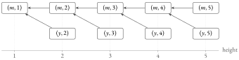

The Claim as Primitive
Abstract
A contingent payment is a promise to pay an amount that depends on facts not yet known, such as a coupon paid if a price reaches a threshold. Each market that trades such promises states the contract in its own form, together with its rule for the price. These forms leave open what is owed once the facts are known. The rule that computes the amount does not keep the debt. A process can fail between recording a payment and answering its caller. The parties need one statement of the promise, apart from any market. From it they should compute the same amount and find what is still owed. We define the claim: a program that computes the amount, the dates on which it runs, and the terms of payment, with no pricing rule in it. Programs are evaluated exactly, and each amount is recorded once as a debt to which each payment is applied once. We prove that programs compute exactly the piecewise-polynomial functions of their inputs. We also prove that the records preserve each amount owed through partial payment, correction, repeated requests, and process failures, given a transactional store that is not replaced by an older copy and authentic inputs. The construction extends to windows of past values, amounts computed from others on one date, accepted work, and payments through outside providers, while markets supply prices.
1 Introduction
An option pays the amount by which a price exceeds a fixed strike. A coupon is paid only if a price is at or above a threshold on the coupon date. A service invoice is paid for the hours of work that the customer accepts. Each is a contingent payment, a promise to pay an amount that depends on facts not yet known when the promise is made. Once the facts are known, someone computes the amount, the amount becomes a debt of one named party to another, and the debtor pays, at once or late, in full or in part.
Before the facts are known, the right to be paid can be bought and sold. Each market that trades it states the contract in a form of its own: an option [13], a security that pays in one state of the world [14, 28], an order in a parimutuel auction [34], or a share of the reserves pooled in an automated market maker [6]. A right that trades in two such markets is specified twice. The contract combinators of Peyton Jones, Eber, and Seward do specify a payoff once, apart from any market. Their subject is the description and valuation of the contract [46]. Settlement rules state when the payment of an obligation is final and take the obligation as given [49, 23].
None of these says what is owed from the day an amount is computed until it has been paid in full. A common kind of note shows how easily that is lost. The note pays a coupon on each date on which a price is at or above a threshold. A coupon missed on one date is paid with the next coupon that is earned. Whoever applies this rule keeps a count of the coupons missed so far. The count goes back to zero as soon as a coupon is earned, before anything has been paid, and from then on no number that the rule computes contains the missed coupons. What the issuer still owes must be recorded somewhere other than in the computation.
We record each amount that is computed for a holder as a debt, apart from the computation, with the payments made against it. We fix the computation in a claim, which is a finite program together with the dates on which it runs and the terms of payment, all set when the contract is issued. A market that trades the claim supplies its price, since the claim contains no pricing rule. The terms name the parties and the currency. They say how and by when the amount is to be paid, and what counts as proof of an observed value or of a payment.
We prove that programs compute exactly the piecewise-polynomial functions of their inputs. We also prove that the records of a debt keep its amount equal to what has been discharged plus what is outstanding, through partial payment, correction, a repeated request, and a failure of the process that keeps the records. The second result assumes a transactional store that is not replaced by an older copy and inputs that are authentic.
2 The amount as a program
2.1 A call option
A cash-settled call option pays, for each unit of an asset, the amount by which the price S of the asset on a stated date exceeds a fixed strike K, if that amount is positive. Its program is \mathrm{Floor}\!\left( \mathrm{LinComb}(1,-1;\mathrm{Oracle}(S,0),\mathrm{Const}(K)),0 \right). We read it from the inside. \mathrm{Const}(K) is the strike, a constant written into the contract. \mathrm{Oracle}(S,0) is the price that the agreed source publishes on the date of evaluation. \mathrm{LinComb}(1,-1;x,y) is the weighted sum 1\cdot x+(-1)\cdot y, with the weights before the semicolon and the arguments after it. \mathrm{Floor}(x,0) is the larger of x and 0, so the program returns the larger of S-K and 0.
The date of evaluation and the 0 in \mathrm{Oracle}(S,0) both suppose a way of counting time on which the parties agree. We count in the steps of the record on which claims are kept. This record, the ledger, grows in numbered steps. It can be a single database or a record on whose steps several keepers agree, for which a companion paper defines the step [38]. The number of a step is its height. Every value published or computed in a step carries that height, and a contract states its dates as heights. If S_h is the price that the source publishes at height h, then \mathrm{Oracle}(S,\tau), evaluated at height h, is the price S_{h-\tau} of \tau heights earlier. We call \tau the offset of the read.
A program reads a published value only once the value is admitted, that is, once it has passed the test that the contract sets for a record of its kind and has been entered on the ledger. Every result in this paper takes admitted values as given.
2.2 A note that remembers
The note of the introduction cannot be written with the four operations of the call, because what it pays on one date depends on what happened on earlier dates. An issuer sells a holder a note with four coupon dates and a coupon of USD 10. On each coupon date an agreed source publishes a price. If the price is at or above a fixed threshold \theta, the holder earns the coupon of that date and, with it, every coupon missed since the last date on which a coupon was earned. If the price is below \theta, the holder earns nothing on that date and its coupon counts as missed. Notes with this rule are issued in practice, where the coupon is said to have memory. Under their terms a missed coupon that has been paid with a later one is not paid a second time [41]. To keep the numbers small we issue the note at height 1 and put its coupon dates at the heights 2 to 5.
The comparison of the note is b=\mathrm{Ind}\bigl(\geq,\mathrm{Oracle}(S,0),\mathrm{Const}(\theta)\bigr), where \mathrm{Ind}(\geq,x,y) is the truth value of x\geq y. The choice \mathrm{IfElse}(b,x,y) is x when b is true and y otherwise. The rule must also remember how many coupons have been missed, but a program remembers nothing: at each height it computes its value afresh from constants, published values, and earlier values of claims. Whatever a contract carries from one date to the next must therefore be the recorded value of a claim. The earlier values of the coupon will not serve, because the coupon of a missed date is zero however many dates were missed before it. So the note consists of two claims, a count m of the missed coupons and the coupon y, which reads the count of the date before.
We write v_c(h) for the value that a claim c computes at height h. The read \mathrm{Ref}(c,\tau), evaluated at height h, returns v_c(h-\tau), the value that c computed \tau heights earlier. Its offset \tau must be at least one, so that a claim is read only at an earlier height, a restriction whose purpose is the subject of Section 4. At the coupon dates the two programs are \begin{align*} m:&\quad\mathrm{IfElse}\bigl(b,\ \mathrm{Const}(0),\ \mathrm{LinComb}(1,1;\mathrm{Const}(1),\mathrm{Ref}(m,1))\bigr),\\ y:&\quad\mathrm{IfElse}\bigl(b,\ \mathrm{Mul}(\mathrm{Const}(10), \mathrm{LinComb}(1,1;\mathrm{Const}(1),\mathrm{Ref}(m,1))),\ \mathrm{Const}(0)\bigr), \end{align*} where \mathrm{Mul} is the product. The program of m returns zero when the comparison holds and one more than the previous count when it fails. The program of y returns 10 times one plus the previous count when the comparison holds and zero when it fails. At height 1, before the first coupon date, there is no previous count to read, so m runs a different program there, \mathrm{Const}(0), to start the count.
Suppose that the price is below the threshold on the first two coupon dates of the note and at or above it on the last two, so that the comparison fails at heights 2 and 3 and holds at heights 4 and 5. The evaluation of a claim c at one height h is an instance of the claim, written (c,h). An instance is resolved once its result is recorded, and v_c(h) is then its resolved value. The count m resolves to 0,1,2,0,0 at heights 1 to 5 and the coupon y to 0,0,30,10 at heights 2 to 5. At height 4 the previous count is 2, so y returns 10\cdot(1+2)=30, while at the same height m returns to 0.
For coupon dates at any heights the note is a family of claims, a count and a coupon for each date, all issued before the first observation (Example B.8).
2.3 The language and what it computes
The call and the note are built from a few operations that compose, which is the method of the contract combinators [46]. We adapt it to a ledger, on which every read of another claim states how far back in time it looks. The two contracts used eight operations. The language has a ninth, the cap, which bounds a value from above as a floor bounds it from below. We write O_h for the value that a source O publishes at height h.
Definition 2.1 (Operator language).
The numerical language has two value sorts, \mathsf{Num}=\mathbb{R} and \mathsf{Bool}=\{0,1\}. We use the canonical inclusion \iota:\mathsf{Bool}\hookrightarrow\mathsf{Num} when a Boolean output enters a numeric input, and there is no coercion from \mathsf{Num} to \mathsf{Bool}. The operator language \Sigma consists of nine constructors. Each node fixes its arity at construction: the arity is a stated constant for eight of them and any finite integer k\geq 1 for \mathrm{LinComb}. \begin{align*} &\mathrm{Const}(a) && \text{(constant; arity 0; }a\in\mathbb{R}\text{)} \\ &\mathrm{Oracle}(O, \tau) && \text{(oracle; arity 0; }\tau\in\mathbb{N}_0\text{)} \\ &\mathrm{Ref}(c', \tau) && \text{(reference; arity 0; }\tau\in\mathbb{N}_{\geq1}\text{)} \\ &\mathrm{LinComb}(\alpha_1, \dots, \alpha_k; e_1, \dots, e_k) && \text{(linear; arity } k\geq1;\ \alpha_i\in\mathbb{R}\text{)} \\ &\mathrm{Mul}(e_1, e_2) && \text{(product; arity 2)} \\ &\mathrm{Cap}(e, \mathit{ub}) && \text{(upper bound; arity 1; }\mathit{ub}\in\mathbb{R}\text{)} \\ &\mathrm{Floor}(e, \mathit{lb}) && \text{(lower bound; arity 1; }\mathit{lb}\in\mathbb{R}\text{)} \\ &\mathrm{Ind}(\bowtie, e_1, e_2) && \text{(indicator; arity 2)} \\ &\mathrm{IfElse}(b, e_+, e_-) && \text{(branch; arity 3)} \end{align*} At height h, the first three nodes emit the \mathsf{Num} values a, O_{h-\tau}, and v_{c'}(h-\tau). The remaining nodes emit \sum_i\alpha_i e_i, e_1e_2, \min(e,\mathit{ub}), \max(e,\mathit{lb}), \mathbb{1}[e_1\bowtie e_2], and b e_+ +(1-b)e_-. Here \bowtie\in\{<,\leq,=,\geq,>\}. The first seven operators consume and return \mathsf{Num} values as their displayed formulas require. \mathrm{Ind} consumes two \mathsf{Num} values and returns \mathsf{Bool}. \mathrm{IfElse} requires one \mathsf{Bool} condition and two \mathsf{Num} branches and returns \mathsf{Num}.
A payoff program is a finite graph of these operations, without cycles, with a single numerical output (Definition A.2). Its operations can be evaluated in an order in which every argument is computed before it is used. One evaluation performs a number of operations that the size of the program bounds. A program computes a function F of the values X_1,\dots,X_m that it reads. For the call, F is zero below the strike and S_h-K at or above it: one polynomial formula on each of two regions, with a comparison that selects the region.
Theorem 2.2 (Exact expressiveness).
Call F : \mathbb{R}^m \to \mathbb{R} piecewise-polynomial if there is a finite partition \mathbb{R}^m = \bigsqcup_{i=1}^N R_i, each cell R_i a finite intersection of regions \{x : g(x) \bowtie h(x)\} with g, h polynomials and \bowtie \in \{<,\leq,=,\geq,>\}, such that F agrees with a polynomial p_i on each R_i. Then:
- (a)
-
each piecewise-polynomial F has a payoff program in \Sigma over the leaves X_1, \dots, X_m;
- (b)
-
conversely, every payoff program in \Sigma computes a piecewise-polynomial function of its leaves.
\Sigma-programs therefore compute exactly the piecewise-polynomial payoffs.
For (a), the polynomial of each cell is a weighted sum of products of inputs, while the indicator of a cell is a product of comparisons. Summing indicator times polynomial over the cells gives F. For (b), an induction over the operations of a program shows that sums and products of piecewise-polynomial functions are piecewise polynomial on a common refinement of their cells. A comparison, a cap, or a floor divides each cell by one more polynomial relation (Section A).
A payoff that needs a logarithm or an exponential has no program. It enters a claim as a value that a source computes and publishes, unless the language is extended. Which extensions keep an exact characterization is an open problem (Open problem 1). The cap, the floor, and the choice can be written with the other six operations, each of which is necessary (Proposition A.5). We keep the three because programs are easier to write with them.
2.4 Exact values and their units
The definition takes the values of a program to be real numbers, which the arithmetic of a computer only approximates. The coupon turns entirely on the comparison b. At or above the threshold the holder earns the whole amount and below it nothing, so a price just below the threshold, rounded up by the arithmetic of one party’s computer, turns a missed coupon into an earned one. We evaluate programs in exact rational arithmetic. An input arrives as a decimal string and denotes the rational number that the string states, with no binary floating-point approximation. Every sum, product, and comparison is carried out on exact fractions. For rational inputs, the result of every evaluation that completes equals the real value of the program, and every comparison has the same truth value, including equality at a threshold (Proposition A.13).
Exactness has a cost, because a few multiplications can make an exact fraction very long. Every evaluation therefore runs under a budget, which bounds the size of its numbers and the amount of its work. An evaluation that would exceed its budget stops with the result BudgetExceeded before it exceeds a bound. It rounds nothing and keeps the work already done, so that under a larger budget it resumes from the same inputs (Definition A.12). Proposition A.20 bounds the length of every intermediate number by the size of the program, the length of its inputs, and the depth of its multiplications. How to evaluate large programs faster and still exactly is an open problem (Open problem 6).
The number that an evaluation returns is not yet an amount. Nothing in the program of y says whether its 10 counts dollars or cents, or whether the coupon is due today or later. Every value in a program has a type. The type states the unit of the value (USD, or a unit of an asset), its scale (dollars or cents), and its context, which says when it is due. The context keeps an amount payable on a date apart from a valuation of that amount as of another date. A claim declares the type of every constant and input. Before any evaluation a check applies the rules of dimensional analysis: a sum requires terms of one type, a product multiplies the types of its factors, a comparison or a choice requires operands of one type, and the output must have the type that the claim declares (Definition A.6 and Definition A.7). In the note the constant 10 is declared as dollars due on its coupon date and the count as a pure number, so the coupon is an amount of dollars due on that date.
The call option returns dollars per unit of the asset. It passes the check once its number of units is declared and multiplied in, a number that is one for a single unit and is still a quantity of the asset. A change from cents to dollars needs only the ratio of the two scales. A conversion from one currency or asset into another needs a rate and a recorded permission to use that rate, without which the check fails (Definition A.8). Evaluation preserves the declared type (Proposition A.9). Theorem 2.2 holds for typed programs whose declarations are consistent (Proposition A.10).
3 What is owed
From height 4 on, no program of the note computes the two missed coupons again. The count is zero although none of the USD 30 has been paid. Suppose that after height 5 the issuer makes a single payment of USD 35 against the USD 30 and the USD 10. The holder wants every dollar that it has earned, even if late. The issuer wants to pay each coupon once and to be able to show what it has paid. Both ought to find in the same records that USD 5 is still owed. The debt needs a separate record that no later computation alters, with a second record of the payments made against it.
3.1 The entitlement
The record has to say who owes whom, but a claim states only an amount for one unit held. A position is a signed number q of units that a party holds in a claim (Definition A.11). It is positive for the party that is paid when the amount is positive and negative for the party on the other side. The holder of the note has the position q=1 in y.
When an instance (c,h) resolves, each position in c gives rise to an entitlement, the record that one named party owes another the amount q\,v_c(h). The record has to remain the same record when the resolution is retried, when the amount is later corrected, and when the right to be paid passes to another party, so it is identified by a key that nothing later can change. For the coupon of height 4 the key says that the amount belongs to this note, to the holder’s one holding in it, to height 4, and to the note’s one stream of payments, its coupons in dollars. The key names both a holding and a stream because a contract may register several holdings in one claim and several streams of payments for one holding. The definition writes the resolution height as b.
Besides the amount, the record fixes the exact program and the exact values of the inputs that the program read. It also fixes how the debt is to be paid: through which route, an outside system such as a bank transfer, within what period on that system’s clock, and by what test a report of payment counts as proof. The part of an entitlement that has not yet been paid is its residual.
Definition 3.1 (Immutable resolution entitlement).
An issuance, position lot, resolution height, and contractual leg determine the key \eta=(\mathit{issuance},\mathit{positionLot},b,\mathit{leg}). The registered leg fixes the holder, the counterparty, the signed quantity q, the settlement asset, and the payment context. Resolution binds the exact issuance, program, position record, and input commitments. It records z_\eta=qv_c(b) and A_\eta=|z_\eta| under the exact rational interpretation. If z_\eta>0, the counterparty owes the holder. If z_\eta<0, the holder owes the counterparty. A zero amount has zero residual. An auxiliary claim without an external position creates no external entitlement.
The record also binds the discharge route, evidence predicate, governing rules, and payment window under the route’s named clock. Resolution inserts this record once. An identical retry returns it, while a conflicting record under the same key is rejected. Program revisions, reported amounts, or beneficiary attributes cannot create another key. An authorized assignment changes a separate effective-party record and preserves the original entitlement and ownership history. A correction creates a linked follow-on claim.
The note has four entitlements, one for each coupon date. Those of heights 2 and 3 record zero, and those of heights 4 and 5 record that the issuer owes the holder USD 30 and USD 10. The count m, an auxiliary claim in which nobody holds a position, creates none. An entitlement records what is owed and does not record whether it has been paid. Payment happens outside these records, through the route, where the rules of that outside system decide when a payment is final (Remark B.5).
3.2 Payments
The issuer’s USD 35 is one thing that happened in the outside world, say one bank transfer. It has to be set against two entitlements, yet it must count once, however many accounts or reports refer to it. The records therefore keep the receipt apart from the uses that are made of it. The receipt is entered once, as an occurrence, together with the quantity that the evidence for it supports, here 35. Each use is an allocation, which assigns part of that quantity to one entitlement and is entered in the journal of that entitlement as an amount paid. Suppose that 30 is allocated to the entitlement of height 4 and the remaining 5 to the entitlement of height 5. The first is then discharged in full, while the second has 5 outstanding. A further attempt to apply the same receipt fails, because nothing of its 35 is left to allocate.
A journal entry carries a signed amount \delta, positive when a payment is applied and negative when an amount is reinstated, for example after a payment has been returned. No entry may apply more than is outstanding or reinstate more than has been discharged.
Definition 3.2 (Discharge journal).
A discharge entry has a unique identifier, entitlement key, signed discharge delta, authority, and evidence. For entries admitted by cutoff t, define L_\eta(t)=\sum_{j\in\mathcal J_\eta(t)}\delta_j, \qquad B_\eta(t)=A_\eta-L_\eta(t), \qquad 0\leq L_\eta(t)\leq A_\eta. Here L_\eta is effective legal discharge and B_\eta is the outstanding amount. A payment of x requires a supported allocation of that quantity from the shared receipt register to this entitlement. The allocation record binds the asset, parties, route, legal purpose, and required evidence. One atomic transition consumes the allocation and adds \delta=x, subject to x\leq B_\eta. An allocation supplies one consumption across all claims and account views. A reporter, command, assertion revision, or legal-origin label supplies no additional physical receipt.
For an occurrence o, let its support s_o be the quantity that its admitted evidence currently justifies and a_o the total allocated from it so far. A new allocation \delta must satisfy 0<\delta\leq\max(s_o-a_o,0), \tag{1} which we call the single-allocation rule. Within this bound and the bound of the journal, the definitions impose no order in which entitlements are paid. Each allocation is a separate authorized act. Table 1 sets out the note in these terms. Figure 1 shows the three records that it has left, with the price apart from them.
| Height | 1 | 2 | 3 | 4 | 5 |
|---|---|---|---|---|---|
| Price at or above the threshold | no | no | yes | yes | |
| Count of missed coupons, v_m | 0 | 1 | 2 | 0 | 0 |
| Resolved coupon, v_y (USD) | 0 | 0 | 30 | 10 | |
| Entitlement, A_\eta (USD) | 0 | 0 | 30 | 10 | |
| Discharged from the USD 35 receipt, L_\eta (USD) | 30 | 5 | |||
| Outstanding, B_\eta (USD) | 0 | 5 |
In the family with coupon dates at any heights (Section 2.2), the count, or state counter, is the number of failed triggers since the last success, so no missed coupon enters two resolved coupons (Proposition B.9).
Corollary 3.3 (Coupon memory and persistent residuals).
For each registered coupon position, a successful trigger creates its immutable entitlement while resetting the state counter. Partial payment changes that entitlement’s residual and leaves the resolved counter unchanged. Every unpaid amount therefore remains due in its original entitlement.
The corollary holds because the journal reads none of the inputs of the count and the count reads nothing from the journal (Section B).
3.3 Corrections and returns
A recorded amount can still prove wrong. An observation can be corrected, or a ruling can decide that a different amount should have been owed, which we call the target. The entitlement stays as it was recorded. The change enters as a new claim linked to it, for the difference between the new target and the total that the corrections have reached so far. If z_0 is the signed amount of the entitlement and t_j is the j-th target, the j-th correction is for the amount d_j=t_j-z_0-\sum_{i<j}d_i, \qquad\text{so that}\qquad z_0+\sum_{i\leq j}d_i=t_j . Each correction names the correction that it follows and is admitted only while that one is the latest. The check and the advance happen together, so two corrections that name the same predecessor cannot both be recorded (Definition B.7). For targets 100\to80\to70 the linked amounts are -20 and -10, whereas computing both against the original would give the wrong total 50.
A returned payment is a new event in the outside world and has its own occurrence. The rules of the route then either reinstate the amount, by a journal entry \delta=-x with x\leq L_\eta, or create a claim for its recovery, and either consequence is applied once. A revision of the evidence about a receipt is a different thing. It changes the support of the original occurrence and by itself neither reinstates an amount nor creates a debit. The register keeps which entitlement was allocated which quantity (Definition B.6).
Proposition 3.4 (Entitlement preservation).
Under the single-allocation rule and the transitions of Definition 3.1 and Definition 3.2 and Definition B.7, every finite trace of admitted transitions preserves one amount per entitlement key, A_\eta=L_\eta+B_\eta,\qquad B_\eta\geq0, one consumption per allocated quantity, and the linked correction identity. Replay of the recorded transitions yields the same entitlements and the same allocations.
The proof checks each kind of transition against the invariants (Section B).
Because the amounts are exact, a residual can be smaller than anything that a payment system will move. An entitlement of 1/3 against which 33/100 has been paid has 1/300 outstanding. Rounding belongs to payment and comes after evaluation. A separate rounding rule of the contract can allocate such a residual.
4 Dates and order
4.1 References point backward
Every program so far found the values that it read. Nothing yet guarantees that it will, because one claim can need the result of another, which can need a third. The rule that a read of a claim has an offset of at least one settles the matter. Every such read leads to a smaller height, so a chain of reads must come to an end. In the note the coupon at height 4 reads the count at height 3, which reads the count at height 2, which reads the count at height 1, which reads nothing (Figure 2).

The schedule H_c of a claim c is the set of heights at which it is evaluated. A claim may run different programs on different parts of its schedule, as the count m runs two, and these are its program cases. A read is well formed at an instance when the height that it names belongs to the schedule of the claim that is read.
Lemma 4.1 (Well-foundedness of strictly historical references).
Let \mathcal{C} be a finite set of claims closed under every reference in its program cases. Each claim has a finite program case table (Definition A.17). Every reference leaf \mathrm{Ref}(c', \tau) of a selected payoff program (Definition A.2) carries a strict-positive offset \tau \geq 1 (Definition A.1) and is well-formed at every instance in the sense of Definition A.18. Let G_\mathcal{C} be the global dependency graph whose nodes are the claim instances (c, b) with c \in \mathcal{C} and b \in H_c, and whose edges run from (c, b) to (c', b - \tau), one for each reference leaf \mathrm{Ref}(c', \tau) of the program selected at that instance. Then G_\mathcal{C} is a directed acyclic graph graded by height with well-founded descent: every edge strictly decreases the height, so no infinite descending chain of references exists, and the restriction of G_\mathcal{C} to any finite range of heights is finite.
Around a cycle of reads the offsets would have to sum to zero, whereas each is at least one (Section B). The lemma applies, at the heights of a ledger, the condition under which synchronous dataflow languages allow a definition that refers to itself, namely that every cycle crosses a positive delay [19]. It lets evaluation proceed by increasing height, with the instances at one height computed in any order or at the same time (Corollary B.1). With an offset of zero, two claims could read each other at one height and would have no first instance. Their values would have to be found as a fixed point, which can fail to exist or to be unique (Example B.3). Two claims may still read each other at different heights (Remark B.4).
The lemma supposes that every read names a height at which its source is in fact evaluated. For a note with no last date this has to hold at infinitely many heights, yet it must be checked when the note is issued. We describe a schedule by a finite set of initial heights followed by a pattern that repeats with a fixed period (Definition A.17). Because every schedule eventually repeats, one finite check decides for all heights at once whether every read of a claim is well formed. It inspects the initial heights and one full repeat of the patterns involved (Proposition A.19). For the recurring note without a last date, whose pattern has a period of one height, these are the heights 2 and 3.
4.2 A stretch of history
Many contracts pay on a stretch of history. A shipment may be settled at the average price of a month. An Asian option pays on an average [32], a lookback option on an extreme value [26], and a barrier option on whether an extreme value has crossed a level [42, 31]. When the prices are the values of a claim that resolves at every height, the language already suffices. W reads with offsets 1 to W and one weighted sum compute the average, in a program whose size grows with W. The difficulty is a source that resolves only at some heights. Suppose that, at height 6, the source has resolved at heights 1, 3, and 5 only, with values 100, 120, and 80. A window over the five preceding heights should select these three values, whose average is 100. A single program with fixed offsets reads the same offsets at every height, which is wrong when the heights of the source are unevenly spaced. If the value of height 3 is late, the average must wait for it, because the average of the values that happen to be present is a different amount from the one promised.
We therefore add one operation that selects the scheduled heights of a window and reduces their values to one number. Its parameters are a source claim c', a window length W up to a fixed bound W_{\max}, and a reduction \rho, which is the minimum, the maximum, the sum, or the average. Evaluated at height h\geq W+1, the read \mathrm{RefReduce}(c',W,\rho) returns \rho of the values that c' resolved at its scheduled heights from h-W to h-1 (Definition C.1). It is well formed when the window always contains a scheduled height, which the finite check above decides for all heights. With windows, programs compute exactly the piecewise-polynomial functions of their inputs and their window values (Proposition C.3). Since every read of a window has an offset between 1 and W, evaluation still proceeds by increasing height (Corollary C.6). A window can always be expanded into finitely many program cases, each with fixed offsets, so it shortens programs and adds no new amounts (Proposition C.5).
4.3 Amounts at the same height
Some amounts are computed from others on the same date, as when a fee is taken from a payment and divided among several payees. Suppose that an agent takes one tenth of a gross amount of USD 100 as a fee and the payee receives the rest. The fee reads the gross amount, while the net amount reads both the gross amount and the fee, all at one height. We allow reads with offset zero on one condition: everything computed at the height must come with an order.
The order has to cover published values as well as claims, because a published value can itself be computed from claims. A source may publish a clearing price, a risk figure, or a report of a settlement. If a payoff reads a price that was computed from the payoff’s own result, the two form a cycle that the program of the payoff does not show. Everything that supplies a value at a height, whether a claim, a publishing source, or a computation of a market, must therefore declare what it reads (Definition E.1). For a program of the language the declaration is checked by inspecting the program. For an outside source its completeness is an assumption. A ranking then gives each of them, at each height, a rank that is higher than the rank of everything it reads at that height (Definition E.2). For the fee, the ranks follow the order of the observation, the gross amount, the fee, and the net amount.
With complete declarations and a ranking, the argument of Lemma 4.1 goes through with the pair of height and rank in place of the height. A read at the same height leads to a lower rank and any other read to a smaller height, so evaluation in order of height and then of rank reads only what has already been computed. If every source eventually reports and every computation stays within its budget, a scheduler that eventually selects every ready computation completes every instance that is asked for (Theorem E.3). The fee and the net amount are then two entitlements, of USD 10 and USD 90. The identity 10+90=100 discharges nothing, since each entitlement is paid through its own journal.
The ranking need not be the same at every height. If a claim A supplies a claim B at odd heights and B supplies A at even heights, each height has a first computation, although a fixed order of the two names would reject the pair. For schedules that repeat, a ranking for every height can still be found by examining finitely many heights, or else a cycle is exhibited (Proposition E.4). A cycle has no ranking and is rejected, because values that are simultaneous at one height would need a fixed-point theory. Programs that do not read at the same height are unaffected by the addition (Proposition E.5).
4.4 Late and uncertain inputs
Suppose that the price of height 3 of the note is late. An instance is ready when the published values and the earlier instances that it reads are available, and until then it is pending. A pending instance returns the names of the inputs that are missing and is never evaluated on a part of its inputs. The late price leaves the instances of m and y at heights 3, 4, and 5 pending. It delays no instance of any claim that does not read them. If the contract sets a deadline for an input, the expiry of the deadline starts the procedure that the terms specify, while the unresolved rights and the evidence are kept. Once the inputs arrive, a scheduler that eventually selects every ready instance evaluates each of them, given a sufficient budget (Proposition B.2).
A price can also be there and not be known exactly. An input that is known only to lie between two bounds is recorded as an interval, with which the evaluator then computes. A narrow interval is no safer than a wide one when it contains the threshold, because the coupon is then either nothing or the full amount. The evaluator decides a comparison only when every value in the intervals gives the same answer. Otherwise the comparison returns Ambiguous and stays undecided until better evidence separates the value from the threshold (Definition A.15 and Proposition A.16).
In both cases the evaluator saves what the instance has already computed, together with the names of what it lacks. This saved state is the continuation of the instance, from which evaluation resumes. Each saved value carries its type and its evidence along with its number, because all three are needed to justify the final amount. The evidence of a value is the list of the declarations and published values from which it was computed. The evaluator never reads a missing value as zero or an undecided comparison as false. Only an exact result can create an entitlement. Its amount is recorded in the standard units of its type (Proposition D.3).
Every operation keeps the evidence of all its operands, including a term whose weight is zero and the branch of a choice that was not taken (Definition A.7). A choice waits for both of its branches, even when its comparison is already decided. The branch taken already fixes the number, since a value computed from the comparison and the branch taken is the value of the program on every completion of the inputs (Proposition D.5). The amount can therefore be known while the entitlement still waits for an input that the other branch reads. We choose to record every source that a program reads, whether or not the amount depends on it.
5 Repeated requests and failures
A continuation has to be held somewhere while its instance waits, and the system that holds it can stop. The same system holds the record of every payment. If it stops after it has recorded a payment and before it has answered the caller, the caller sends the request again, and the payment must not be recorded twice.
5.1 One state, one transaction
One transactional store holds both. In this section a command is any request to the store, with an identifier that the caller chooses.1 A run is one named, running copy of a set of claims with their declarations and positions (Definition D.1). The store keeps a table that maps each key (i,k), a run i with a command identifier k, to the outcome of that command. A command is applied inside one transaction of the store. First the store looks up the key. If it is in the table, the stored outcome is returned when the request is the same, a different request under the same key is rejected, and nothing else happens.
A new command must name the current revision of its run. Suppose that a continuation of the note was saved before the USD 35 was paid. Restoring the whole state of that moment would erase the payment and bring back the old unpaid balances. Resumption must therefore use the payment records as they are now, together with the saved computation. All runs share the ledger, which holds the entitlements, their journals, the receipt register, and cash accounts in which an amount can be reserved before it is paid. Each run has its own continuation, with a revision number and the counters of work done, against which budgets are checked. The continuation is restored against the ledger as it is now, the command is applied, and the new continuation, the ledger, and the outcome are stored together and committed before the outcome is returned (Section D). A command can also be refused for a stated reason, such as a type error or an exhausted budget. Such a specified rejection is itself an outcome, and the work completed before it is kept.
Assumption 5.1 (Durable execution premises).
The database provides atomic transactions and the stated durable-commit behavior on the selected storage system. All writers use the command transition above and share the current store. The store is not replaced by an older valid database image. Such replacement requires a separately maintained monotonic anchor to detect. Program identities and request digests are collision resistant, and authentication keys remain controlled by the store authority. Callers authenticate and authorize commands, evidence, conversion uses, corrections, and physical-occurrence identities before admission. For each resumed command, this authorization covers the fixed program context and every retained authority premise on which the action relies. Admitted local transitions preserve the evaluator and ledger rules, including their retained prefixes on specified rejection. No admitted transition dispatches an external provider operation inside the database transaction.
Theorem 5.2 (Durable retry and conservation).
Under Assumption 5.1, start from a valid state and apply any finite sequence of commands, retries, concurrent requests, and process interruptions. Every recovered committed state satisfies the following properties.
- (i)
-
Each key (i,k) identifies at most one committed command transition and its exact stored outcome. An identical retry returns that outcome, including after a lost response.
- (ii)
-
A new command requires the current revision of its run. It cannot restore an older continuation over a later admitted command or replace intervening shared-ledger work.
- (iii)
-
Resolution preserves canonical amount, type, transitive evidence, and immutable entitlement identity. Payment, correction, and return transitions retain outstanding rights and historical allocation ownership under Proposition 3.4. All runs share the ledger’s allocation and available-cash checks.
- (iv)
- Committed resource counters and completed computation are retained together with the ledger and command outcome. A specified rejection retains its admitted prefix. Recovery exposes the entire pre-transaction or post-transaction state, with no partial combination.
The proof orders the committed transactions as the store does and proceeds by induction (Section D). If a failure overlaps a commit, recovery yields either the state before the command, in which the command left no trace and can be sent again, or the state after it, in which the repeat finds the stored outcome.
5.2 What the theorem rests on
The theorem assumes that the store is not replaced by an older valid copy. Authentication of the store shows that its contents have not been altered. That they are the latest is shown only by custody of the current store or by an anchor outside it. Who holds the latest state of a record outside the store is treated in the companion paper Sovereign economies on a decentralized network [51].
A bank completes or fails a payment on its own, whatever the local transaction does, and the result enters the ledger afterwards as an occurrence, under the rules of Section 3.
6 Payment through outside providers
The issuer’s USD 35 entered Section 3 as a receipt that had already happened. Before it happens, outside parties have to act: the funds must be reserved, the instruction must be authenticated, and each bank or payment system that carries the transfer must report it. Each such party is a provider. It promises to complete its step within a stated time once all the facts that the step requires are in place, on one clock that the parties have accepted. A valid payoff and an order of evaluation can still leave a payment pending, and the promises set a bound on how long. The plan of a payment says which facts it requires and which provider supplies each. A seed is a fact that an outside party guarantees by a stated time whatever else has happened.
Definition 6.1 (Joint completion contracts).
Fix one selected plan and one admitted clock, with origin zero. A finite directed graph G=(V,E) has one vertex for each required persistent fact. Such a fact can record a resource reservation, admitted evidence, or provider performance. For vertex i, \operatorname{pred}(i) lists all conjunctive prerequisite facts. Its contract guarantees completion within \ell_i\geq0 clock units after all those facts become available. The finite bound includes required dispatch, authentication, and recording. A halted execution without that completion does not fulfill the contract.
All contracts must hold jointly under the same plan, authority, evidence, resource reservations, provider assumptions, and clock. Prerequisite facts persist through the interval in which the contract uses them. An external seed contract can additionally guarantee fact i by time \sigma_i. These are worst-case contracts.
Proposition 6.2 (Acyclic composition of provider completion bounds).
If the prerequisite graph is acyclic, every fact completes by T_i=\ell_i+\max_{j\in\operatorname{pred}(i)}T_j, \qquad \max\varnothing=0. This is the maximum sum of latencies along a prerequisite path ending at i. When external seed contracts are also available, the stronger bound is T_i=\min\left\{\sigma_i, \ell_i+\max_{j\in\operatorname{pred}(i)}T_j\right\}, with \sigma_i=\infty where no seed guarantee is supplied. Both recurrences are sharp within their declared contract models.
For example, take the edges 1\to2, 1\to3, 2\to4, and 3\to4 with latencies (1,2,4,3). The completion bounds are (1,3,5,8). A seed that guarantees fact 4 by time \sigma_4=6 improves the last bound to 6. With \sigma_4=10 the bound stays at 8.
The recurrence needs a graph without cycles, but prerequisites can be circular. One fact may be promised once a second is in place, and the second once the first is, so that neither promise comes into force unaided. A seed can break such a circle.
Corollary 6.3 (Exact criterion for completion from seeds).
Let S contain the facts supplied by finite external seed guarantees. Define the least conjunctive readiness closure by R_0=S,\qquad R_{n+1}=R_n\cup \{i:\operatorname{pred}(i)\subseteq R_n\}. Then \bigcup_n R_n=V \quad\Longleftrightarrow\quad G[V\setminus S]\text{ is acyclic} \quad\Longleftrightarrow\quad S\text{ meets every directed cycle}. This characterizes guaranteed completion from the seeds under the stated conditional contracts.
These results are about promises. The payment itself is established as before, by the authenticated report of the provider and the finality rule of its system. Completion guarantees for particular providers, currencies, and routes are the subject of Open problem 7. The proofs are in Section G.
7 Amounts earned by work
An invoice is paid for the work that is accepted, and acceptance can be partial. Work is also harder to count than a published price, because the same work can be reported twice and later evidence can show that less was done than was accepted, after it has been paid for. The receipt register already has the form that these cases need. An occurrence is now one identified piece of work, such as a period of service or a cargo, measured in a unit of quantity. A second report of the same hours is not a second occurrence. The performance terms of the contract say which methods of measurement are permitted, which conditions of quality and documentation must hold, and who has the authority to accept. The support of the occurrence is the quantity accepted under these terms, which is zero while acceptance is pending, disputed, or rejected (Definition F.1).
An allocation assigns a quantity of the occurrence to a beneficiary and, in the same step, resolves the entitlement that the quantity earns under the earning rule of the contract (Definition F.2). Under a rule of USD 12 for each hour of service, seven accepted hours earn USD 84. Every allocation obeys the single-allocation rule (1), with hours in place of dollars.
The case that needs care is support that falls after it has been allocated. Which allocations have then lost their support is determined by the order in which they were made. Each allocation owns an interval of the quantity of its occurrence. If the allocations, in order, have the quantities x_1,\ldots,x_m, the first owns [0,x_1), the second [x_1,x_1+x_2), and so on, whatever the support later becomes. The supported part of an allocation is the part of its interval that lies below the current support s_o. Write A_o for the total allocated from the occurrence, the quantity called a_o in (1). The supported total is then \min(s_o,A_o), the unallocated support is U_o=\max(s_o-A_o,0), and the unsupported historical allocation is D_o=\max(A_o-s_o,0). Table 2 follows ten accepted hours, allocated as six and four, through a fall of the support to five hours and its restoration. Restored support returns to the same owners before it supplies any new allocation.
| Support s_o | First allocation, 6\,\mathrm h | Second allocation, 4\,\mathrm h | Unallocated U_o |
|---|---|---|---|
| 10\,\mathrm h | 6 supported | 4 supported | 0 |
| falls to 5\,\mathrm h | 5 supported, 1 unsupported | 4 unsupported | 0 |
| restored to 10\,\mathrm h | 6 supported | 4 supported | 0 |
Each occurrence of work has one history of evidence and one total of allocations, however many reports present it, and its allocation intervals do not overlap. Nothing is allocated or earned from evidence that has not been accepted under the terms (Proposition F.4, under Assumption 5.1).
The entitlements already earned do not change when the evidence changes. What is owed changes only by an authorized correction, as above. Suppose that USD 50 of the USD 84 has been paid when a correction sets the target to USD 60. The correction is an entitlement of USD 24 in the opposite direction, while the original entitlement still has USD 34 outstanding. The records show two debts, which stand until each is paid or the two are set off by a separate act under the set-off rule of the contract (Section B).
8 The price
Nothing from the formula of a claim to its payment has used the claim’s own price. The holder of the note may wish to sell the right to its remaining coupons before their dates. What a buyer pays is a price, which a market supplies under a rule of its own. After two missed dates the remaining coupons pay 40 if the price is at or above the threshold on both remaining dates, 30 if only on the first, 40 if only on the second, and nothing if on neither. Under one market’s prices for those four outcomes, 2/5, 1/5, 1/5, and 1/5, the right costs 40\cdot\tfrac25+30\cdot\tfrac15+40\cdot\tfrac15=30.
8.1 Markets that charge by a cost function
One form of market keeps the outstanding quantity of each claim that it trades and charges for a trade the change in a fixed function of those quantities.
Definition 8.1 (Cost-function market).
A cost-function market on n claims c_1, \dots, c_n is a pair (\varphi, x) where \varphi : \mathcal{D}\to \mathbb{R} is a C^2 convex function on an open convex set \mathcal{D}\subseteq \mathbb{R}^n (the potential, or cost function) and x \in \mathcal{D} is the vector of outstanding quantities. A buyer of the bundle \Delta x (with x + \Delta x \in \mathcal{D}) pays \varphi(x + \Delta x) - \varphi(x) in numeraire, and the marginal price vector is p := \nabla \varphi(x). This is the market-maker form of Chen-Pennock [20]. The admissible potentials are characterized in [3] as convex conjugates of regularizers on the price simplex.
The best-known example is the logarithmic market scoring rule (LMSR) [28], whose prices are the probabilities that the market implies for a set of outcomes (Example H.1).
8.2 Eight market types
If a claim is the same object whichever market trades it, each familiar type of market comes apart into a claim and a pricing rule. The rule need not be a cost function. A constant-function market holds reserves and allows any trade that keeps a fixed function of its reserves from falling [6]. The convex parimutuel call auction of Peters, So, and Ye clears a batch of orders by one convex program [45]. Markets that are driven by orders, such as central limit order books and request-for-quote systems, use the same claims under other pricing rules. A market that holds reserves keeps a claim as a funded instrument (Definition H.2). A claim that can pay in either direction becomes a pair of funded notes when its payoff has declared bounds (Proposition H.4). Otherwise it uses the margin construction, in which a market quotes the outstanding exposure and cash accounts supply the margin (Remark H.5). A program whose parameters are left open is a schema.
Proposition 8.2 (Reduction catalogue).
Each of the following market types (a) decomposes into payoff-program schemas in \Sigma under Definition A.18 and Definition A.2, and (b) admits a pricing mechanism that is a cost-function market (Definition 8.1), a constant-function market (Definition H.6), or a convex clearing program. A schema becomes an admissible claim through checked scalar types, a schedule, an entitlement context, and the resource rules of the market. Reserve-pool realizations additionally provide funded transferable instruments. Signed obligations can use the margin construction:
- (M1)
- (M2)
-
Bonding curve with shifted-power pricing [10].
- (M3)
- (M4)
- (M5)
-
Binary prediction contract.
- (M6)
-
Linear perpetual contract.
- (M7)
-
Fixed-coupon bond.
- (M8)
- Linear-payoff option (call, put, collar).
A binary prediction contract (M5) on the comparison of the note consists of two claims, one that pays 1 when the published outcome is yes and one that pays 1 when it is no. The pair can be priced by the LMSR with two outcomes or by the parimutuel auction, with the same claims either way. The call of Section 2 is (M8). A fixed-coupon bond (M7) is a strip of constant coupons together with a constant principal at maturity. For a market that holds reserves, such as the constant-product automated market maker (M1), the claim is the right to redeem one unit of a reserve asset, with the program \mathrm{Const}(1). Each decomposition is conditional on the instruments and providers that it names (Section H gives the eight, summarized in Table 4).
A The language: definitions, proofs, and resource bounds
This appendix supports Section 2 and Section 4. It states the three kinds of input and the payoff program formally, proves the expressiveness theorem and the minimality of six constructors, and gives the financial types with their two propositions. It then defines exact arithmetic under a budget and proves the two results on exact and interval evaluation. Its last two parts define schedules and the claim in full, prove that one finite check decides the conditions on schedules for all heights, and bound the bit length of intermediate values.
A.1 Inputs and programs
To speak of an amount before its inputs are known, we treat the inputs as random variables. A state \omega\in\Omega specifies the joint outcomes of oracle attestations and prior claim resolutions. The measurable space (\Omega,\mathcal{F}) records which events these outcomes define. The information available at height h forms the \sigma-algebra \mathcal{F}_h. Thus an input available at h is measurable with respect to \mathcal{F}_h.
Definition A.1 (Input categories).
A claim’s payoff is a function of three input categories:
- (I1)
-
Constant amounts. \mathbb{R}-valued literals fixed at claim-creation time.
- (I2)
-
Attested values. An attested data stream O, called an oracle, carries one \mathcal{F}_h-measurable random variable O_h : \Omega \to \mathbb{R} per height h at which O is attested. The leaf \mathrm{Oracle}(O, \tau) has an integer offset \tau \in \mathbb{N}_0 and, when evaluated at height h, retrieves O_{h-\tau}. The case \tau = 0 reads the attestation published at the evaluation height itself. The attestation supplies an input to payoff evaluation, and it neither transfers value nor establishes legal finality. An oracle leaf creates no reference to a claim. Section 4.3 treats a source whose published value is itself computed from claims.
- (I3)
- Resolved-claim references. For another claim c', the reference \mathrm{Ref}(c', \tau) has an integer offset \tau \in \mathbb{N}_{\geq 1} and, when evaluated at height h, retrieves v_{c'}(h - \tau), the value carried by c' at height h - \tau. The leaf is well-formed when c' resolves at height h - \tau (Definition A.18). The offset is at least one, so a claim reads other claims only at earlier heights. This strict positivity makes resolution across claims well-founded (Section 4).
A larger program often uses one intermediate result in several places. A program is therefore represented as a graph in which each computation appears once and is connected to every operation that uses its result. A directed acyclic graph, abbreviated DAG, is a directed graph with no directed cycle, and acyclicity supplies an order in which every argument is available before the operation that consumes it runs.
Definition A.2 (Payoff program).
A payoff program is a finite labelled directed acyclic graph (DAG) whose root is a single \mathsf{Num} output node and whose internal nodes are operators in \Sigma, with edges directed from arguments to the operator they enter. The numerical edges match their input and output sorts, with the sole implicit Boolean inclusion. A financial program additionally satisfies the scalar-type and evidence rules in Definition A.7, and its root matches its declared claim output type. Leaves are arity-zero operators (\mathrm{Const}, \mathrm{Oracle}, \mathrm{Ref}), and internal nodes are operators of arity at least one. The DAG is in static single-assignment (SSA) form, the standard compiler discipline [21]: each node’s output is consumed by zero or more downstream operators, but the node itself is computed exactly once.
The single-assignment form matters because a shared intermediate result then has one value, which is computed once.
A.2 Proof of the expressiveness theorem
The function F of Theorem 2.2 is obtained from a program by temporarily erasing its financial annotations, so that f(\omega)=F\bigl(X_1(\omega),\dots,X_m(\omega)\bigr). Expressiveness concerns the functions F that this numerical language computes. Financial programs additionally satisfy Proposition A.10. Exact rational evaluation uses rational literals, coefficients, and observations, and its function class has the corresponding rational polynomial coefficients.
Proof of Theorem 2.2. (a) Construction. We build a program for the polynomial on each cell and a program for the indicator of each cell, and then assemble them.
Step 1 (polynomials). Every nonzero polynomial p_i \in \mathbb{R}[X_1, \dots, X_m] decomposes into monomials, p_i(X_1, \dots, X_m) \;=\; \sum_\alpha c_\alpha \prod_{j=1}^m X_j^{\alpha_j}, \qquad \alpha \in \mathbb{N}^m, \;\; |\alpha| \leq d_i. For |\alpha|=0, the monomial is \mathrm{Const}(1). For |\alpha|\geq1, repeat each leaf X_j exactly \alpha_j times and multiply the |\alpha| factors. This uses no \mathrm{Mul} node at degree one and |\alpha|-1 nodes at higher degree. A single \mathrm{LinComb} with the coefficients c_\alpha forms the sum. The zero polynomial is \mathrm{Const}(0). Shared sub-monomials are computed once in SSA form.
Step 2 (regions). Each cell R_i = \bigcap_{k=1}^{K_i} \{g_{i,k} \bowtie_{i,k} h_{i,k}\} has indicator b_i \;=\; \prod_{k=1}^{K_i} \mathbb{1}[g_{i,k} \bowtie_{i,k} h_{i,k}], where each atomic indicator is \mathrm{Ind}(\bowtie_{i,k}, g_{i,k}\text{-prog}, h_{i,k}\text{-prog}) over the Step-1 sub-programs. For K_i\geq1, the product is a balanced \mathrm{Mul}-tree of depth \lceil \log_2 K_i \rceil. For the empty intersection, set b_i:=\mathrm{Ind}(=,\mathrm{Const}(0),\mathrm{Const}(0)). On every x, b_i(x) \in \{0,1\}, and b_i(x) = 1 if and only if x \in R_i.
Step 3 (assembly). Since the R_i partition \mathbb{R}^m, exactly one b_i equals 1 at every x, so F \;=\; \mathrm{LinComb}\bigl(1, \dots, 1; \;\mathrm{Mul}(b_1, p_1), \;\dots, \;\mathrm{Mul}(b_N, p_N)\bigr) computes F exactly. The result is a finite SSA-form DAG over \Sigma.
(b) Structural induction. Order the nodes of a program P topologically. We show, node by node, that the function computed at each node is piecewise-polynomial in the leaves, with cells cut out by finitely many polynomial inequalities.
Leaves. \mathrm{Const}(a) computes the constant polynomial a, and \mathrm{Oracle} and \mathrm{Ref} leaves compute coordinate functions. The partition is trivial.
\mathrm{LinComb}, \mathrm{Mul}. Take the common refinement of the argument partitions. It is a finite partition whose cells are intersections of cells, hence again finite intersections of polynomial-inequality regions. On each cell every argument is a polynomial, and linear combinations and products of polynomials are polynomials.
\mathrm{Ind}(\bowtie, e_1, e_2). Refine the two argument partitions. On a cell where e_1 = g and e_2 = h, split into the sub-cell \{g \bowtie h\}, with value 1, and the sub-cells of the complementary relation, with value 0. The complement of one polynomial relation is a union of at most two polynomial relations (for instance the complement of = is < together with >), so every sub-cell is again a finite intersection of polynomial-inequality regions.
\mathrm{Cap}(e, u), \mathrm{Floor}(e, l). On each cell where e = g, split by \{g \leq u\}, with value g, and \{g > u\}, with value u. The case of \mathrm{Floor} is symmetric.
\mathrm{IfElse}(b, e_+, e_-). The node emits b\,e_+ + (1-b)\,e_-, a polynomial in three piecewise-polynomial arguments. Refine and conclude as for \mathrm{LinComb} and \mathrm{Mul}.
The root node therefore computes a piecewise-polynomial function of the leaves. ◻
Remark A.3 (Measurability and boundedness).
Every cell is a finite intersection of polynomial-inequality regions in measurable leaves, so every cell and every representable payoff is measurable. The language and its expressiveness theorem admit bounded and unbounded real-valued payoff programs. Boundedness is a separate admissibility condition for a stated collateral or risk rule. Such a rule may admit only essentially bounded payoffs (\|f\|_\infty < \infty), or it may require a stated tail-integrability and collateral standard. Boundedness depends on the leaf ranges and the program, and a terminal \mathrm{Cap}–\mathrm{Floor} pair supplies an explicit finite bound. The expressiveness characterization holds independently of that condition. A bound on the payoff limits the amount that can fall due. Open problem 4 states the admissibility question for unbounded payoffs.
Remark A.4 (Scope).
The paper characterizes exact piecewise-polynomial payoffs over scheduled oracle and prior-claim inputs, four historical reductions (Section 4.2), and three convex forms of pricing (Section 8). The reductions supply discrete extrema, totals, and averages. Log-return statistics and smooth indicators can enter as oracle-attested values or through an analytic extension of the language (Open problem 1). Continuous-time observations enter through an attested aggregate. Vanilla call and put payoffs already belong to \Sigma. A closed-form Black-Scholes-Merton price is a pricing function, distinct from a payoff, and it additionally needs the normal cumulative distribution function.
A.3 Derived operators and the minimal core
Fix the numerical sorts, the Boolean inclusion, and the constructor signatures and parameters of Definition 2.1. Compare the sublanguages obtained by deleting constructors from \Sigma. An encoding preserves the declared categories and identifiers of its external inputs, and it agrees with the encoded program for every independent real valuation of those inputs. Oracle and reference leaves remain opaque accesses: an encoding adds no proxy attestation and does not inline a referenced claim. The comparison includes programs with zero external inputs. Financial typing and the preservation of evidence are obligations in addition to this numerical comparison.
Proposition A.5 (Derived operators and relative minimality).
Let \Sigma_0 := \{\mathrm{Const}, \mathrm{Oracle}, \mathrm{Ref}, \mathrm{LinComb}, \mathrm{Mul}, \mathrm{Ind}\}.
- (i)
-
\mathrm{Cap}, \mathrm{Floor}, and \mathrm{IfElse} are definable over \Sigma_0. Abbreviating u' := \mathrm{Const}(u), l' := \mathrm{Const}(l), g_{\bowtie} := \mathrm{Ind}(\bowtie, e, u'), and g'_{\bowtie} := \mathrm{Ind}(\bowtie, e, l'): \begin{align*} \bar b &:= \mathrm{LinComb}\bigl(1, -1;\; \mathrm{Const}(1),\, b\bigr), \\ \mathrm{Cap}(e, u) &= \mathrm{LinComb}\bigl(1, 1;\; \mathrm{Mul}(g_{\leq},\, e),\; \mathrm{Mul}(g_{>},\, u')\bigr), \\ \mathrm{Floor}(e, l) &= \mathrm{LinComb}\bigl(1, 1;\; \mathrm{Mul}(g'_{\geq},\, e),\; \mathrm{Mul}(g'_{<},\, l')\bigr), \\ \mathrm{IfElse}(b, e_+, e_-) &= \mathrm{LinComb}\bigl(1, 1;\; \mathrm{Mul}(b,\, e_+),\; \mathrm{Mul}(\bar b,\, e_-)\bigr). \end{align*} Hence \Sigma and \Sigma_0 compute the same class, and \Sigma_0 is the unique inclusion-minimal equivalent subset of this vocabulary.
- (ii)
-
Each of \mathrm{Oracle}, \mathrm{Ref}, \mathrm{LinComb}, \mathrm{Mul}, \mathrm{Ind} is necessary: removing it from all nine constructors of \Sigma strictly shrinks the computed class under the stated comparison.
- (iii)
- \mathrm{Const} is necessary for programs with zero external inputs. Over any leaf set containing some leaf \ell, constants are derived: a = \mathrm{LinComb}(a;\, \mathrm{Ind}(=, \ell, \ell)). The fixed-payment claim, a payoff using no oracle and no reference, is representable only with \mathrm{Const}, because a program must contain at least one arity-zero node.
Proof. (i) Direct evaluation gives the stated cap, floor, and conditional formulas. The fixed Boolean inclusion permits each indicator in a numeric multiplication.
(ii) Consider deletion from the entire nine-constructor vocabulary. Without an oracle or reference constructor, programs cannot distinguish two valuations differing only at that corresponding opaque input. The missing coordinate function distinguishes those valuations.
Without \mathrm{LinComb}, each numeric program selects among finitely many monomials. Constants and input coordinates have this property, multiplication preserves it, and caps, floors, and conditionals only select from existing expressions or literal bounds. Indicators select zero or one. For one free input x, each equality a x^k=x+1 has finitely many solutions. A finite collection cannot cover all real x.
Without \mathrm{Mul}, the same induction gives a finite selection of affine functions. No finite selection of affine functions equals x^2 on the whole real line. Without \mathrm{Ind}, no remaining constructor produces a Boolean, so a well-typed conditional cannot occur. The remaining numeric operators preserve continuity and cannot compute \mathbb{1}[x\geq0].
(iii) With an external leaf \ell, the displayed numerical constant formula equals c. With zero external inputs and no \mathrm{Const}, no available constructor can supply a leaf. Every equivalent vocabulary subset must therefore contain all six members of \Sigma_0. Part (i) proves their sufficiency, which gives the stated unique inclusion-minimal subset. Dimensioned constants additionally require their manifest declarations. ◻
A.4 Financial types
The three components of a type are dimension, numerical scale, and economic context. The free abelian groups below allow products and inverse units, as in USD per asset unit. Their identity elements describe a dimensionless number and an observation with no payment context. The valuation basis of a context states on what footing an amount is given, for instance as a payment due at its maturity or as a valuation of that payment as of another date. Observation dates remain attached as evidence even when their numeric samples share a type.
Definition A.6 (Financial scalar types).
Let D be the free abelian group on named currency, asset, and quantity dimensions. Distinct currencies and assets have distinct generators. Gold mass uses one dimension, while grams and kilograms use different scales. Let K be the free abelian group on named economic contexts. Each context records its valuation basis and payment maturity. Its identity 1_K denotes observation data, while products and quotients describe intermediate quantities and context maps. A scalar type is \theta=(d,s,k),\qquad \mathsf{Num}[\theta], \qquad d\in D,\quad s\in\mathbb Q_{>0},\quad k\in K. The represented number x denotes sx canonical units of dimension d in context k. Type multiplication acts componentwise: \theta_1\otimes\theta_2=(d_1d_2,s_1s_2,k_1k_2). The Boolean inclusion maps into the neutral type \mathbf1=(1_D,1,1_K).
An input manifest \Gamma declares every literal, input, coefficient, and conversion rule. Declarations fix scalar types, permitted uses, and evidence identifiers. Dimensioned literals require their governing declarations. An instance context \kappa fixes the evaluation height, required output type, and current rules for evidence use. A monetary output names its settlement asset, scale, and payment context.
The typing judgment checks the manifest \Gamma in the instance context \kappa, for one evaluation date and required output. It records the financial meaning of an expression and the evidence that its calculation must retain. That evidence remains necessary when algebra simplifies a term whose source still has contractual relevance.
Definition A.7 (Typing and retained evidence).
The judgment \Gamma;\kappa\vdash e:\mathsf{Num}[\theta]\;!\;E states a scalar type and its retained evidence identifiers. Evidence records bind source, authority, observation height, source context, and the exact attested value. The rules are:
Declared literals and oracle inputs use their manifest types and retain their declaration or attestation identifiers.
A reference declares an amount read or a sample read. An amount read preserves the complete source type. A sample of type (d,s,k) returns (d,s,1_K) and retains the source identifier, context, and height. Sampling records a numeric observation and grants no position in the source claim.
A linear combination requires equal argument types and dimensionless scalar coefficients. Its output has that same type. Dimensioned coefficients enter as declared values through multiplication.
Multiplication maps \theta_1,\theta_2 to \theta_1\otimes\theta_2.
A cap or floor requires its bound to have the argument’s type and preserves that type.
An indicator compares equal scalar types and returns a Boolean. The observation heights may differ.
A conditional requires a Boolean and two branches of the same scalar type, which is its output type.
Each operator retains the union of all operand evidence, including zero-weight operands and both branches. Algebraic optimization therefore preserves a separate evidence manifest even when it eliminates numerical work. Every root matches the output type declared by its claim context.
Rescaling is kept apart from conversion, and valuing a future amount today is kept apart from replacing the underlying payment obligation. In the definition, |e| and |r| denote the expressions e and r with their financial annotations removed, and the bars do not denote absolute values.
Definition A.8 (Rescaling and recorded conversion).
Rescaling from (d,s,k) to (d,s',k) multiplies the represented number by s/s'. It preserves dimensions, context, and evidence. For a conversion to (d',s',k'), a conversion record w binds the source and target types, permitted use, rate direction, observation, authority, and rule. A maturity conversion also binds its authorized discounting rule or obligation-replacement record. A rate r has type (d'd^{-1},s_r,k'k^{-1}). The checked conversion has the underlying numerical expression |\mathrm{Convert}_{w}(e,r)| =\mathrm{LinComb}\!\left(\frac{s s_r}{s'}; \mathrm{Mul}(|e|,|r|)\right). Its evidence includes E_e\cup E_r\cup\{\operatorname{id}(w)\}. The manifest requires this record of permitted use for an observed conversion rate. Writing the conversion as a bare multiplication cannot bypass that requirement. Fixed contractual coefficients instead retain the issuance declaration that assigns their types and permitted uses.
A valuation record authorizes a numerical valuation. Physical exchange and obligation replacement use their separately applicable authority and effect records. The replacement preserves the predecessor obligation’s history. Rescaling and conversion are checked forms that expand into the nine numerical constructors.
For example, direct addition of USD and a digital asset fails the type check, as does addition of gold mass and currency. Suppose each recorded unit represents 10^{-8} whole units of the digital asset. An observed rate of 60{,}000 USD per whole unit converts 10^8 recorded units into 6{,}000{,}000 cents. The scale factor is 10^{-8}/10^{-2}=10^{-6}, and the conversion record retains the named rate observation and its authority. A scale annotation alone cannot supply that factor. Historical price samples can be compared or averaged while retaining their distinct observation heights. Dated payment amounts require a declared context map before amounts of different maturities are combined.
Composing valid operations must preserve the required currency, scale, maturity, and evidence. The proof checks each typing rule against its numerical formula in the evaluation order of the graph.
Proposition A.9 (Financial type preservation).
Assume every declared input and conversion record satisfies its manifest and instance context. Evaluation of a well-typed finite DAG preserves its declared root type and all required evidence. Its represented numeric value equals the value of its underlying numerical expression in \Sigma.
Proof. Induct over a topological node order. Declared leaves supply their types and evidence. Equal-type arithmetic and bounds preserve their common type. Multiplication composes dimensions, scales, and contexts. Compatible comparisons return Booleans, and the two conditional branches share their output type. Rescaling multiplies by s/s', which preserves the canonical quantity. Conversion multiplies by s s_r/s' and the represented rate, giving the declared target quantity. The conversion record establishes its admitted context and use. Every rule retains operand evidence, while each numerical formula agrees with its underlying numerical expression. The induction proves both conclusions. ◻
Conversely, a financially specified formula must declare coefficient types that make each monomial produce the promised output type. The numerical expressiveness construction then yields a financially well-typed program.
Proposition A.10 (Lifting a financial payoff specification).
Fix typed inputs and a required output type \theta. Consider a finite piecewise-polynomial specification with compatible comparisons. For every monomial, its manifest supplies the coefficient type required to produce that polynomial’s declared output type. All declarations and conversion uses satisfy the instance context. Then the specification has a well-typed payoff program. Its underlying numerical expression computes the specified function exactly.
Proof. For a monomial c_\alpha\prod_jX_j^{\alpha_j}, the manifest supplies its coefficient with type \theta\otimes\bigotimes_j\theta_j^{-\alpha_j}. Multiplying the coefficient and factors gives type \theta. Adding monomials with dimensionless weights preserves that type. Compatible polynomial comparisons give neutral numeric indicators through the Boolean inclusion. Products of those indicators remain neutral, so multiplication by each regional polynomial preserves \theta. The region construction in Theorem 2.2 gives the required program. Every coefficient and context map remains subject to its declared authority and use. ◻
Definition A.11 (Position).
A position in a claim c is a signed real-valued holding q \in \mathbb{R}, with q > 0 representing a long claim on the payoff and q < 0 representing a short. The entitlement is per instance. At each b \in H_c, evaluation determines the amount q \cdot v_c(b), where v_c(b) is the value of the payoff program in the realized state \omega \in \Omega (Definition A.18). For a one-shot claim, evaluation determines q \cdot P(\omega) once at h_{\mathrm{res}}. Discharge follows the route and evidence rule in \mathit{ctx}.
A.5 Exact arithmetic under a budget
Rational arithmetic represents admitted decimal inputs exactly, and the ideal real-valued semantics remains the denotation used in the expressiveness theorem. The definition fixes the representation of rational values, the input format, and the budget that bounds the sizes and work an evaluation may use.
Definition A.12 (Rational arithmetic under a budget).
A rational value has a signed integer numerator and a positive denominator, reduced by their greatest common divisor. Canonical ASCII integer and finite decimal strings admit exact conversion to this representation. The wire form excludes exponent notation, redundant leading or trailing zeros, and negative zero. Case identifiers are strings, so identifiers above 2^{53} retain their exact bytes. The input declaration states units, scale, observation identity, and the relevant authority evidence. A decimal string denotes its stated rational value, rather than a binary floating-point approximation.
A budget bounds input length, node and argument counts, numerator and denominator bits, and operation count. Before each allocation, the evaluator checks the required intermediate size against that budget. For multiplication, unreduced numerator and denominator bit bounds add. For addition or comparison, cross-product bounds add, with one additional bit for a sum. The evaluator returns BudgetExceeded before an operation exceeds its bound. This result preserves the pending calculation and its entitlement context. A larger admitted budget permits the same program to resume from its bound inputs.
Proposition A.13 (Rational evaluation is exact).
For rational inputs, coefficients, and bounds, every successful evaluation of a finite \Sigma DAG equals its real-valued denotation. Every comparison, including equality at a strike, has the same Boolean value. A topological instruction sequence that reads the same inputs computes the same result.
Proof. Reduced rational arithmetic embeds into the real field and preserves addition, multiplication, and order. Constants and admitted input leaves therefore have their specified denotations. Induction over a topological order proves equality at every arithmetic node. Exact cross multiplication by positive denominators proves every comparison. The resulting Boolean selects the same branch in both interpretations. The formulas for minimum, maximum, and affine combination preserve the induction. Shared nodes retain one value, so the instruction sequence and DAG agree. The budget check either permits this exact operation or emits a separate unresolved result. It never substitutes a wrapped or rounded value. ◻
Remark A.14 (Instruction order and optimization).
A program is evaluated as a sequence of instructions in a topological order: each node of the DAG is evaluated after its arguments, and a shared value is stored once. By Proposition A.13, every such order gives the same result. The evidence of Definition A.7 is kept as a separate list, so optimizing the arithmetic leaves it unchanged.
An uncertain observation is recorded as an interval containing every value still permitted by its evidence. A comparison can be committed only when all values in the intervals give the same answer, and a continuation saves the unfinished calculation and the evidence still needed to complete it.
Definition A.15 (Interval inputs).
An interval [l,u], with rational endpoints l\leq u, states that the input value lies between its endpoints. Addition adds endpoints, and multiplication takes the minimum and maximum of the four endpoint products. Positive scaling, minimum, and maximum use their monotone interval extensions. Signed scaling reverses endpoints when necessary. For a relation \bowtie, a comparison returns True when every pair in the operand intervals satisfies it. It returns False when no pair satisfies it, and Ambiguous otherwise. Thus equality is true only for equal singleton intervals, and false for disjoint intervals. Ambiguous records what the evaluator knows. It is not an additional value of the language’s Boolean type. A branch requiring that comparison retains its pending continuation until the evidence is refined or its governing failure route applies.
Proposition A.16 (Interval soundness and boundary separation).
Every successful interval evaluation contains every exact output consistent with its input intervals. Every comparison that returns True or False agrees with all those exact evaluations. For a numeric comparison with threshold K, rational inputs K-\epsilon,K,K+\epsilon have exact outcomes for each declared relation whenever \epsilon>0. An interval straddling K can remain ambiguous even when its width is arbitrarily small.
Proof. Each interval operator encloses the corresponding real operation on its operand intervals. Induction over the DAG proves containment. The comparison rule quantifies over the enclosed operands, which proves its Boolean conclusions. Exact order decides the three rational inputs, including the equality case. For the predicate x\geq K, the interval [K-\epsilon,K+\epsilon] contains both outcomes. Multiplication by a notional N then permits outputs 0 and N. Interval width alone therefore supplies no vanishing error bound for this digital payoff. ◻
Rounding to a payment grid acts after payoff evaluation. For a payment quantum \Delta>0 and a nonnegative entitlement amount A, downward quantization pays \Delta\lfloor A/\Delta\rfloor and retains r=A-\Delta\lfloor A/\Delta\rfloor, where 0\leq r<\Delta. The entitlement retains r in its residual until an applicable allocation or discharge rule consumes it. A signed payoff first fixes debtor and creditor, and the rule then applies to its nonnegative amount. A valid currency conversion retains its exact observation evidence through evaluation and quantization.
A.6 Schedules, claims, and the finite check
A schedule can be infinite, so it is described by four finite data. The cutoff a is the height at which a repeating pattern starts, the period p is the length of the pattern, the finite set F lists the scheduled heights below the cutoff, and the set of residues R selects the scheduled heights within each period. A finite schedule has no repeating heights.
Definition A.17 (Schedule descriptors and program cases).
A descriptor (a,p,F,R) has a,p\geq1, F\subseteq\{1,\ldots,a-1\}, and R\subseteq\{0,\ldots,p-1\}. It denotes H=F\cup\{h\geq a:h\bmod p\in R\}. A finite schedule has R=\varnothing. A claim declares a nonempty schedule H and a finite case table (U_i,P_i). Each U_i has the same descriptor form, and each P_i is a finite payoff program. Exactly one case applies at every scheduled height: \sum_i\mathbb{1}_{U_i}(h)=\mathbb{1}_H(h)\qquad(h\geq1). The issuance fixes every descriptor, program, and referenced claim identifier. A single case (H,P) recovers the fixed-program form.
For instance, the heights 2,3,4,\ldots form the descriptor (2,1,\varnothing,\{0\}), and the single height 1 forms (2,1,\{1\},\varnothing). Program cases allow an initial computation and a different recurring computation under one fixed issuance, as for the count of the note.
Definition A.18 (Claim).
A claim is a tuple c=(\mathit{id},H_c,\mathcal P_c,\mathit{ctx}). Its identifier is unique, its resolution schedule H_c is nonempty, and \mathcal P_c is a finite table of program cases in the form of Definition A.17. A single case (H_c,P) gives a fixed-program claim. The context \mathit{ctx} records the parties, jurisdiction, governing clause, settlement asset, discharge route, evidence predicate, and attached market. It also declares the input manifest, instance output type, reference read modes, and governing conversion uses.
The instance at b\in H_c selects its unique program P_i and evaluates it at b. Its immutable result is v_c(b), with directed entitlements and payment records defined in Definition 3.1. The schedule check of Proposition A.19 examines every case and leaf. It fixes valid oracle heights and strictly historical source references. Readiness separately requires their authentic input values to be available. An absent input keeps the instance pending.
A one-shot claim has schedule \{h_{\mathrm{res}}\}. A coupon bond has its finite coupon schedule. Per-height feeds and initialized recurring programs use their declared periodic cases.
Four fields of the context are used by later definitions. The attached market is the market, if any, to which the claim is attached for trading. The instance output type is the financial type that the root of each instance must have. A reference read mode states whether a reference reads an amount, with its full type, or a sample, without its payment context (Definition A.7). The governing conversion uses are the conversions that the claim permits, each with its conversion record (Definition A.8). The note of Section 2 consists of two claims in this sense. The count m has the schedule \{1,\ldots,5\} and two cases, the coupon y has the schedule \{2,\ldots,5\} and one case, and the context of y names the issuer and the holder, USD as the settlement asset, the route by which the issuer pays, and the evidence that counts as payment.
A coupon that reads its preceding state needs a source value at every promised coupon date, and checking a single date cannot establish this for a recurring contract. The descriptor form makes a finite check sufficient. After the last cutoff, each schedule membership test repeats periodically, and the least common multiple of the periods aligns the repeats. It is therefore enough to check the initial heights and one aligned repeat, including every shifted source height that a reference uses. The check also covers a bounded historical window, which is the set of source heights scheduled within a specified number of earlier heights and which Definition C.1 uses for an average, a total, a minimum, or a maximum. A case that reads is the consumer case, and the schedule of the claim or oracle that it reads is the target. The check establishes that exactly one case applies at each scheduled height, that a reference is well formed at every height, that a window always selects at least one height, and that an oracle is never read before height one.
Proposition A.19 (Finite check of recurring programs).
For case coverage, let T be the largest cutoff and L_{\mathrm{cov}} the least common multiple of all participating periods. Check the coverage equality of Definition A.17 at 1\leq h<T+L_{\mathrm{cov}}. For a consumer case U=(a,p,F,R) and target H'=(b,q,F',R'), let L=\operatorname{lcm}(p,q). A reference with offset \tau\geq1 is admissible exactly when h-\tau\in H' for every h\in U with 1\leq h<\max(a,b+\tau)+L. A window of length W\geq1 is admissible exactly when h\geq W+1,\qquad \{h-1,\ldots,h-W\}\cap H'\ne\varnothing for every h\in U with 1\leq h<\max(a,b+W)+L. An oracle offset \tau\geq0 additionally requires h>\tau for all consumer heights. It suffices to check 1\leq h<\max(a,1+\tau)+p. This checks the observation domain, while attestation availability remains a readiness condition. These finite checks decide the corresponding universal requirements.
Proof. Below the stated threshold, the check visits each possible height directly. At and above that threshold, every relevant schedule uses its periodic tail. The predicates of each check therefore repeat with the period of that check, which is L_{\mathrm{cov}} for coverage, L for a reference or a window, and p for an oracle offset. The next full period of consecutive heights contains every remaining residue class. This proves both necessity and sufficiency for each check. ◻
Consider the note without a last date. The count then has the schedule (2,1,\{1\},\{0\}), and the case at heights h\geq2 reads \mathrm{Ref}(m,1). Here a=b=2, \tau=1, and L=1, so the check inspects the two heights 2 and 3 and thereby covers every later coupon date. The check establishes that the selected set of each window exists, and readiness later requires that every selected value has arrived.
The decision of Proposition A.19 terminates for every finite descriptor. Binary-encoded periods can make its scan exponentially long. The executable check therefore bounds descriptor sizes, the least common multiple, the scan horizon, and the total membership work before scanning. An oversized instance returns BudgetExceeded, while a failed predicate returns Invalid with a height at which it fails. The former permits a larger budget without changing the schedule’s meaning. The checker tests multiplication bounds before constructing an oversized least common multiple. It scans heights directly and needs no array proportional to the horizon.
A.7 Resource cost in bits
A small graph can still create very large exact numbers. Repeated squaring doubles the exponent at each step, while repeated fractional scaling grows a denominator. An operation count therefore describes only part of the required resources. The following bound also counts the bits needed to represent every intermediate rational number.
For one rational evaluation, expand the selected window reductions and count their inputs and arithmetic nodes. Let A count nodes, argument ports, and selected historical inputs. Let b_0\geq1 bound numerator and denominator bit lengths of all input values, literals, and scalar parameters. This count includes linear coefficients and the averaging coefficient 1/r for r selected heights. Let d be the maximum binary-multiplication depth. Let s count primitive scalar occurrences, let \ell count linear-combination nodes, and let k_v be their arities.
Proposition A.20 (Bit-length bound).
With the notation above, a conservative bound on every reduced intermediate numerator and denominator bit length is B_* = 1+2^d\left[(s+\ell+1)b_0+ \sum_v\lceil\log_2 k_v\rceil\right] =O(A b_0 2^d).
Proof. Fix the outcomes of comparisons for the evaluated input. Treat primitive scalar occurrences as distinct variables. Each selected expression is a polynomial whose individual primitive-variable degrees are at most 2^d. If Q is the product of the primitive denominators, its reduced denominator divides Q^{2^d}. Define m(z)=\log_2\max(1,|z|). At a linear node, this magnitude bound increases by at most b_0+\lceil\log_2 k_v\rceil over the largest input magnitude. A multiplication adds the two logarithmic bounds. These denominator and magnitude bounds give the stated numerator bound, including reduced partial sums. ◻
Schoolbook integer multiplication and elementary Euclidean normalization give the conservative bit bound O(A B_*^3). Faster integer algorithms improve this bound without changing the program. Schedule checks add their stated finite scan costs. Membership using sorted prefix and residue lists costs O(b^2+b\log(s_H+1)) on b-bit heights with s_H stored entries. Historical retrieval also reads the complete encoded value. Per-instance accounting includes retrieved values in b_0. Whole-resolution accounting instead expands the finite ancestor closure and counts its complete graph.
For example, z_0=2/3 and z_{j+1}=z_jz_j produce z_d=2^{2^d}/3^{2^d} from d multiplication nodes. Repeated unary scaling by 1/3 also grows denominator size while d=0. The budget therefore limits coefficients and intermediate sizes as well as graph depth. Preflight bounds and checks before each allocation prevent unbounded intermediate memory use within an admitted run.
B Order, entitlements, and the journal: remaining statements and proofs
This appendix supports Section 3 and Section 4. It proves the order lemma, states its consequences, and gives the counterexample that shows why a reference must point to an earlier height. It then gives the remaining rules of the receipt register, defines linked corrections, proves entitlement preservation, and states the note in its general form with the proofs of its two results.
B.1 Order and progress
Proof of Lemma 4.1. Each payoff program is a finite DAG by Definition A.2, so no cycle lies within one program. Across instances, every reference edge of G_\mathcal{C} runs from (c, b) to (c', b - \tau) with \tau \geq 1, and the well-formedness condition of Definition A.18 gives b - \tau \in H_{c'}. Thus the target is again a node of G_\mathcal{C} and has strictly smaller height. Suppose for contradiction that G_\mathcal{C} contains a cycle (c_1, b_1) \to (c_2, b_2) \to \dots \to (c_K, b_K) \to (c_1, b_1) whose edges carry offsets \tau_1, \dots, \tau_K \geq 1, so that b_{i+1} = b_i - \tau_i for i < K and b_1 = b_K - \tau_K. Walking the cycle gives b_1 \;=\; b_1 - \sum_{i=1}^{K} \tau_i, \qquad \text{hence} \qquad 0 \;=\; \sum_{i=1}^{K} \tau_i \;\geq\; K, which contradicts K \geq 1. Height is therefore an \mathbb{N}-valued rank that strictly decreases along every reference edge. Since \mathbb{N} is well-ordered, no infinite descending chain of references exists, and no edge, hence no path, joins two instances at one height. Each payoff program is finite, so each node has finite out-degree, and restricting G_\mathcal{C} to a finite range of heights gives a finite DAG. Edges run from each instance to the instances it reads, so decreasing height gives a topological order of each finite restriction. Evaluation follows the reverse order, increasing height, with the instances at each height freely permutable. ◻
Corollary B.1 (Resolution scheduling).
Given a finite set of claims, payoff evaluation proceeds in height order. By Lemma 4.1, an instance (c,b) reads only instances at lower heights. No edge joins two instances at one height. The instances at height b can therefore be evaluated in any order or concurrently after their own referenced instances and oracle inputs are available. Proposition B.2 states the corresponding progress conditions. The resulting immutable entitlements retain their discharge journals independently under Definition 3.1.
The ancestor closure of an instance contains the instance and all instances reached by recursively following its prerequisite references. Admission makes this dependency calculation valid and finite. Completion additionally requires the observations to arrive, sufficient arithmetic resources, and fair scheduling that eventually selects each ready calculation.
Proposition B.2 (Conditional progress).
Every admitted instance has a finite ancestor closure. If every oracle input in that closure eventually arrives, a fair scheduler eventually evaluates the instance successfully within a sufficient arithmetic budget.
Proof. Reference heights decrease strictly, and each selected program has finite fan-out. A starting height bounds the reference depth, so the ancestor closure is finite. The claim has finitely many required oracle inputs in this closure. Their eventual arrival supplies a time after which all are available. Induction on height and fair selection then evaluates every required ancestor and the requested instance. ◻
Both results follow from the inequality \tau\geq1 on references, and the inequality cannot be relaxed.
Example B.3 (\tau = 0 admits cycles across programs).
Relax the requirement \tau\geq1 on references (Definition 2.1) to allow \tau = 0, and construct two claims c_1, c_2 whose schedules share a height, h \in H_{c_1} \cap H_{c_2}: the program of c_1 contains \mathrm{Ref}(c_2, 0) and the program of c_2 contains \mathrm{Ref}(c_1, 0). Each program is internally a well-formed DAG, yet the dependency graph has the 2-cycle (c_1, h) \to (c_2, h) \to (c_1, h) among instances at the single height h. The cycle-walk of Lemma 4.1 now gives 0 = \tau_1 + \tau_2, which \tau_1 = \tau_2 = 0 satisfies, so the contradiction is lost and the lemma fails: the scheduler has no first-resolved instance. Determining either payoff then requires a separate fixed-point semantics and can have zero or many solutions.
Remark B.4 (What the positive offset forbids and what it permits).
In Example B.3 each program remains internally acyclic, and the cycle runs between two programs. The strict-positive offset extends acyclicity from each program to the dependency graph between programs. The nodes of that graph are instances, so two claims may reference each other at different heights without creating a cycle. The offset thus forbids cycles among instances while permitting mutual references across time.
The language as defined so far needs no further information to find an order, because every reference points backward in height. Section 4.3 admits references within one height when the complete graph of the event has a strict local rank. Genuinely cyclic dependencies at one height require a separate fixed-point semantics.
B.2 Resolution, discharge, and the receipt register
Remark B.5 (Resolution and discharge).
Resolution evaluates the program P and records the amount v_c(b). Discharge later satisfies the resulting entitlement through the external system and evidence rule in \mathit{ctx}. An instance can be resolved and remain undischarged. The finality rule belongs to that external system. The Principles for Financial Market Infrastructures define final settlement as the irrevocable and unconditional transfer of an asset or discharge of an obligation [49]. Any dispute follows the governing clause in \mathit{ctx}.
Definition 3.1 binds the payment window under the route’s named clock. The terms of payment state a due date within that window, any days of grace, and the event that counts as payment, which in this paper is the final credit to the account named for the payee. They may also state what becomes owed when an amount is late.
The journal of Definition 3.2 draws allocations from one shared register of receipts. One receipt can pay part of one entitlement or portions of several, and its supported quantity is allocated only once across them. The history of allocations in the register records which entitlement has already used which quantity, and a later correction can reduce the support of a receipt while leaving that history intact.
Definition B.6 (Shared receipt register).
The shared register partitions each supported receipt quantity among unallocated, reserved, attributed, and reconciliation-held slices. It retains the owner of every consumed slice. Loss of support identifies unsupported consumed slices without making them available for fresh allocation. Restored support returns to the same owner before any new allocation. An evidence revision alone supplies no legal discharge delta. An authorized reassignment transfers effective discharge x from entitlement \eta to entitlement \xi. One joint transition records deltas -x,+x, subject to x\leq L_\eta and x\leq B_\xi. It transfers the corresponding allocation and retains both histories. Ordinary spending changes the recipient’s current cash, while the receipt’s lifetime attribution remains unchanged.
For the parties this means that a shortfall is shown and attributed. The allocations keep their owners in the order in which they were made, the unsupported part of each is identified, and no other entitlement can draw on the receipt. A revision of the evidence does not by itself change a discharge that was recorded, and whether an amount is reinstated is decided by a separate authorized entry under the rule of the route. Table 2 shows the same mechanism in numbers.
A physical return or reversal has a distinct debit occurrence, and the governing route reinstates an amount or creates its specified recovery claim once, as Section 3 describes. A quantity correction is different, because it revises the evidence about the original occurrence and creates no physical debit. Adverse evidence remains recordable even when it exposes a deficit or a disputed attribution.
Residuals from the payment grid of Section A remain explicit in the journal, as in the example of Section 3. A separate governing rounding rule can allocate such a residual, but numerical precision alone cannot remove it. A receipt can be divided among several entitlements in exact amounts, so one cent pays a remainder of 1/300 and another of 1/150 between the same parties in the same asset. A cent paid against the 1/300 alone pays it and leaves 1/150 of the receipt unallocated. A claim whose amounts can fall between the units of its currency does well to state at issuance where such remainders go. Replay of the recorded entries reconstructs the entitlements and their journals without any external dispatch.
B.3 Corrections
Section 3 gives the rule for corrections in words, with an example. The corrections of one entitlement form a chain, whose latest admitted member is its head. Each correction is computed against the head, which prevents two concurrent corrections from both treating the same old total as current.
Definition B.7 (Linked corrections).
Let z_0 be an immutable signed entitlement. An authenticated correction act sets target t_j in the same asset and account orientation. Its follow-on claim has amount d_j=t_j-z_0-\sum_{i<j}d_i. Admission atomically compares and advances the current correction head. Two successors of the same head cannot both commit. A repeated correction-act identifier returns its existing claim. Each corrective instance resolves after the instances that it reads, preserving strictly positive reference offsets. Every correction binds the governing authority and affected parties independently of current token balances. The signed portfolio then satisfies z_0+\sum_{i\leq j}d_i=t_j. Each entitlement retains its own residual until payment or an authorized set-off.
B.4 Proof of entitlement preservation
Proof of Proposition 3.4. Resolution initializes L_\eta=0 and B_\eta=A_\eta. The immutable-key check prevents another amount under that key. Payment adds x to discharge and subtracts it from the residual, with x\leq B_\eta. Reinstatement reverses those two changes, with x\leq L_\eta. Both preserve the equation and nonnegativity. Reassignment applies the same bounded decrease and increase to its two entitlements while transferring one allocation. The joint allocation transition and retained consumption owner prevent duplicate use. Evidence corrections preserve the attribution history and require separate authority for legal changes. The protected correction head fixes the predecessor sum, and substitution proves the target identity. Replay folds the same admitted records and issues no commands. ◻
Extensions of the journal.
The journal as defined admits a payment only with a supported allocation from the shared receipt register. A discharge could also be supported by a side of a set-off act, which names two entitlements in opposite directions between the same two parties in one asset and discharges both by the same amount. It could be supported by a netting record, under which the close of a clearing house replaces a member’s gross dues with one net due. Each needs its own authority, and neither is a receipt. Proposition 3.4 covers the journal as defined, without set-off acts or netting records.
A trade, in this design, creates obligations. The buyer owes the price and the seller owes the holding, and each is an entitlement with a journal like any other. A quote names what is sold and the state on which it was quoted: the holding, whether amounts already owed and unpaid go with it, and any restriction on it. The state is checked again when the trade commits. A sale of the note after height 4, when the USD 30 has fallen due and is still unpaid, says whether the buyer takes the unpaid USD 30 together with the last coupon or the last coupon alone.
In a cleared cycle each match creates a due from the buyer to the clearing house and a due from the clearing house to the seller. At a cut-off, one authorized close takes the dues of that cycle and asset on which no instruction to a payment provider is open, and it replaces each member’s gross dues among them with one net due. A due with an open instruction is left as it is. The close replaces amounts and moves no cash. Pay-ins come before pay-outs, and a member’s failure to pay in is met from resources reserved in a stated order. Creditors are paid in full at the deadline only if those resources are liquid and enough, and the rules have to say what each is owed when they are not.
B.5 The note in general form
The note of Section 2 has coupon dates one height apart, so one program for the count and one for the coupon serve every date. For coupon dates at arbitrary heights the offset to the previous date differs from date to date. Each date then has its own pair of claims, each evaluated once, and the whole family is issued before the first observation, so no claim is created in response to a price.
Example B.8 (The memory-coupon note).
Fix coupon heights h_1<\cdots<h_K, coupon amount a>0, and trigger threshold \theta. The reset rule is the one described in Section 2.2, under which a paid missed coupon cannot be paid again. Before the first observation, issue one-shot coupon-payoff claims y_1,\ldots,y_K and auxiliary one-shot state claims m_0,\ldots,m_K. Choose h_0<h_1, set H_{m_0}=\{h_0\}, and give m_0 the program \mathrm{Const}(0). For j\geq1, set H_{m_j}=H_{y_j}=\{h_j\}, put d_j=h_j-h_{j-1}>0, and abbreviate \begin{align*} b_j&:=\mathrm{Ind}\bigl(\geq,\mathrm{Oracle}(S,0),\mathrm{Const}(\theta)\bigr),\\ r_{j-1}&:=\mathrm{Ref}(m_{j-1},d_j),\\ P_{m_j}&:=\mathrm{IfElse}\bigl(b_j,\mathrm{Const}(0), \mathrm{LinComb}(1,1;\mathrm{Const}(1),r_{j-1})\bigr),\\ P_{y_j}&:=\mathrm{IfElse}\bigl(b_j, \mathrm{Mul}(\mathrm{Const}(a), \mathrm{LinComb}(1,1;\mathrm{Const}(1),r_{j-1})), \mathrm{Const}(0)\bigr). \end{align*} Every claim identifier, schedule, offset, and program is fixed before h_1, and no claim is created after observing a trigger. The auxiliary claims carry the state but no external position. Each state or coupon-payoff program has O(1) nodes, while the complete pre-issued family has O(K) claims.
The following proposition and Corollary 3.3 are stated for this family.
Proposition B.9 (No missed coupon enters two resolved payoffs).
In the pre-issued family of Example B.8, let B_j\in\{0,1\} be the realized value of b_j. Then v_{m_j}(h_j) equals the number of consecutive failed triggers ending at j. If B_j=1, v_{y_j}(h_j) includes the current coupon and exactly those consecutive missed coupons since the preceding success. At the payoff-evaluation layer, no missed coupon enters two resolved payoffs: each enters the resolved value of at most one coupon-payoff claim. Discharge remains separate under Remark B.5.
Proof of Proposition B.9. Write M_j:=v_{m_j}(h_j). The initial value is M_0=0. The program gives M_j=0 when B_j=1 and M_j=M_{j-1}+1 when B_j=0. Induction therefore identifies M_j with the length of the failed run ending at j. At a success j, the resolved payoff is a(1+M_{j-1}), which contains the current coupon and the failed run immediately before it. The same success sets M_j=0, so no member of that run can enter a later resolved payoff. A failed coupon with no later success remains absent from every resolved payoff. Otherwise it enters the first later successful payoff exactly once. ◻
Proof of Corollary 3.3. The recurrence reads triggers and previous state claims. The discharge journal supplies none of those inputs. Its residual instead uses the immutable coupon amount and admitted payment effects. Each transition preserves the other’s recorded values. ◻
The note of the introduction is the case a=10 with coupon heights 2 to 5 and h_0=1, in which the triggers 0,0,1,1 give the counts 1,2,0,0 and the coupons 0,0,30,10 of Table 1. When the dates are equally spaced, one recurring pair of claims replaces the family, and the note can run without a last date.
Example B.10 (An initialized infinite coupon family).
Fix h_0,\Delta\geq1 and H^+=\{h_0+j\Delta:j\geq1\}. A state claim m uses a seed case \{h_0\}\mapsto0 and a repeated case H^+\mapsto\mathrm{IfElse}(b,0,1+\mathrm{Ref}(m,\Delta)). The coupon claim y has schedule H^+ and program \mathrm{IfElse}\bigl(b,a(1+\mathrm{Ref}(m,\Delta)),0\bigr), \qquad b=\mathrm{Ind}(\geq,\mathrm{Oracle}(S,0),\theta). These formulas abbreviate the corresponding \Sigma constructors. All identifiers, cases, and programs are fixed at issuance. Both repeated programs read the preceding state, so same-height evaluation remains independent. Proposition A.19 admits the complete recurring family. The induction of Proposition B.9 proves the same missed-coupon property at every finite height. Its payment amount carries the instance’s declared maturity context, while the state counter has the neutral type.
C Window payoffs: definition, proofs, and catalogue
This appendix supports Section 4.2. It defines the window operation in full and proves that it preserves the function class and the order of evaluation. It then shows how windows compile into fixed-offset cases, lists five families of path-dependent products as programs, and states what the four reductions cannot express.
C.1 The window operation
The definition packages the selection of the scheduled heights of a window and the reduction of their values in one leaf, which retains every historical read.
Definition C.1 (The window-reduction operator).
Fix a bounded window parameter W_{\max} \in \mathbb{N}. The window-reduction operator \mathrm{RefReduce}(c', W, \rho) has arity 0. Its parameters are a referenced claim c', a window length W \in \{1, \dots, W_{\max}\}, and a reduction kind \rho \in \{\mathrm{Min}, \mathrm{Max}, \mathrm{Sum}, \mathrm{Avg}\}. Evaluated at height h \geq W + 1, it emits \mathrm{RefReduce}(c', W, \rho)(h) \;=\; \rho\bigl(\,\{\, v_{c'}(b) \;:\; b \in [h-W,\, h-1] \cap H_{c'} \,\}\,\bigr), where v_{c'}(b) is the sample value carried by the instance of c' at height b (Definition A.18), the reduction is taken over the multiset of values the schedule H_{c'} places in the window, and \rho is respectively the minimum, maximum, sum, or arithmetic mean of that multiset. Selected records have one common dimension and scale. The reduction returns that sample type and retains every selected source identifier, original context, and height. The node is well-formed exactly when [h-W,\, h-1] \cap H_{c'} \neq \emptyset, as decided for every case by Proposition A.19. For a given instance, the schedule representation of Definition A.18 decides this condition with at most W membership tests. The window is strictly historical, since every read targets h - \tau with \tau \in \{1, \dots, W\}, so the offset discipline of Definition A.1 is preserved.
Reading a recorded result v_{c'}(b) by its claim and height counts as one indexed read. A window selects all prescribed source heights before it retrieves any value, and a missing selected value yields \mathsf{Await}(M), which names the missing inputs. An average over scheduled heights therefore never becomes an average over the subset that happened to arrive.
Remark C.2 (The window bound).
W_{\max} is a fixed resource bound. One \mathrm{RefReduce} evaluation uses at most W constant-time membership tests and historical reads, hence O(W) work when counting arithmetic operations and indexed reads. With membership cost T_H and retrieval cost T_R, the access cost is O(W(T_H+T_R)). Section A.7 adds the arithmetic bit cost separately. Windows longer than W_{\max} require a larger bound or a separately defined stateful aggregate. General nesting is insufficient because intermediate windows can overlap and change sums and averages.
A window supplies one numerical input to the surrounding program, so the expressiveness theorem applies with the aggregate as a leaf.
Proposition C.3 (Window-reduction closure).
Let \Sigma' := \Sigma \cup \{\mathrm{RefReduce}\}. Programs in \Sigma' compute exactly the piecewise-polynomial payoffs over the leaf set of Theorem 2.2 extended by the window aggregates \mathrm{RefReduce}(c', W, \rho) of Definition C.1, with \rho \in \{\mathrm{Min}, \mathrm{Max}, \mathrm{Sum}, \mathrm{Avg}\} and W \leq W_{\max}.
Proof of Proposition C.3. Each window aggregate is one \mathrm{RefReduce} node. Each \mathrm{RefReduce} node emits one real value at each evaluation height, as the other arity-zero leaves do. Both directions of Theorem 2.2 therefore apply over the extended leaf set. The three-step construction in part (a) builds any piecewise polynomial of those leaves. The structural induction in part (b) gains one base case: a \mathrm{RefReduce} node computes a coordinate function of the extended leaf-space. The remaining induction is unchanged.
For bounded resolved values, \mathrm{Min}, \mathrm{Max}, and \mathrm{Avg} are bounded by \max_b |v_{c'}(b)|. The bound for \mathrm{Sum} is W_{\max} \max_b |v_{c'}(b)|, so boundedness is preserved. ◻
Remark C.4 (Program size and schedule adaptivity).
When the underlying resolves at every height of the window, \Sigma' adds no payoffs. Each aggregate is a \Sigma-payoff of the fixed leaves \mathrm{Ref}(c', 1), \dots, \mathrm{Ref}(c', W). Both \mathrm{Sum} and \mathrm{Avg} use one \mathrm{LinComb}. Both \mathrm{Max} and \mathrm{Min} use W - 1 nested binary extrema (\mathrm{IfElse} on \mathrm{Ind}). The conservative extension reduces program size from O(W) to O(1) while retaining O(W) reads.
For a fixed-program case with consumer schedule H_c and target claim c', define the admissible fixed-offset set D(c,c'):=\{\tau\in\mathbb{N}_{\geq1}:H_c-\tau\subseteq H_{c'}\}, \qquad H_c-\tau:=\{b-\tau:b\in H_c\}. One fixed leaf \mathrm{Ref}(c',\tau) is well-formed at every instance of c exactly when \tau\in D(c,c'). Nonidentical schedules can therefore admit a fixed offset, with translated schedules as the simplest case. For one fixed program, the window leaf adapts when D(c,c')=\varnothing but [b-W,b-1]\cap H_{c'} is nonempty for every b\in H_c. Finite program-case refinement can represent those changing offset patterns, as Proposition C.5 proves. At each evaluation, the window re-selects the historical instances, and \mathrm{Avg} divides by their number (Definition C.1). For a one-shot claim, fixed offsets can reach any known finite set of earlier instances, leaving only the reduction in program size.
Proposition C.5 (Compiling bounded windows into program cases).
For the admitted ultimately periodic schedules, every program with bounded window reductions has an equivalent finite table of fixed-offset \Sigma programs. The window form represents the same computation with one reduction node per window instead of its expanded cases and reads.
Proof. Fix every window in a selected program case. Below the largest shifted schedule cutoff, finitely many heights determine finitely many selected-offset patterns. Above it, all relevant schedule memberships repeat with the least common multiple of their periods. A finite partition into prefix heights and tail residue classes therefore fixes the selected offsets of every window. In each partition cell, replace a reduction by its selected fixed-offset references and ordinary sum, average, or extremum program. The averaging coefficient is the reciprocal of the fixed selected count in that cell. The cells are disjoint and cover the original schedule, so the resulting case table computes exactly the same values. It also retains the same selected input evidence. ◻
For consumer heights h\geq3, odd source heights, and window W=2, the selected set always contains one height. An odd-height case reads offset two, and an even-height case reads offset one. One window node expresses both cases while preserving the same observations. The representation saves case expansion, although its evaluation still performs the declared membership and retrieval work.
C.2 Windows keep the order of evaluation
Historical aggregation must also preserve the dependency order. Expanding a window adds several reference edges, but each still points to an earlier height. The same decreasing-height argument therefore applies to every selected member.
Corollary C.6 (\mathrm{RefReduce} preserves DAG well-foundedness).
Let G_\mathcal{C} be the dependency graph of Lemma 4.1 extended to include the reference edges of \mathrm{RefReduce}(c', W, \rho) nodes. Such a node in the program of an instance (c, h) contributes one edge to each instance (c', b) with b \in [h-W,\, h-1] \cap H_{c'}, so every contributed edge carries an offset h - b \in \{1, \dots, W\}, all strictly positive. Height therefore still strictly decreases along every edge, the argument of Lemma 4.1 carries through unchanged, and G_\mathcal{C} is a DAG graded by height with well-founded descent.
Proof. \mathrm{RefReduce} nodes contribute reference edges only at offsets \tau \in \{1, \dots, W\}, all \geq 1. The cycle-walk of Lemma 4.1 sums the offsets around a putative K-cycle. Since every offset is \geq 1, it still yields 0 = \sum_i \tau_i \geq K, a contradiction. Every \mathrm{RefReduce} edge strictly decreases height, so the grading is unaffected. ◻
Remark C.7 (Path dependence is not the same relaxation).
Path-dependent claims reference historical heights only: \mathrm{Ref} offsets and \mathrm{RefReduce} windows are strictly historical (Definition C.1), so they satisfy the strict-positive offset constraint as stated. The relaxation in Example B.3 is qualitatively different. It is reference within one height, where path dependence is reference to history.
C.3 Five families of path-dependent products
Example C.8 (The path-dependent catalogue).
Historical price and reference reads below use sample mode. In (P1)–(P3), each displayed formula is a per-unit sample output F_i. Its financial root is \mathrm{Mul}(\mathrm{Const}(N_i),F_i), where the declared underlying quantity carries the payment context. Unit quantities have represented value one. Trigger values and miss counters have neutral types. Contractual coupon and quantity declarations supply each instance’s payment-context type. Five product families compile into \Sigma' through constant-size sub-programs. In each the referenced claim resolves at every height of the window, so the aggregate reads a full sample path. A sparser schedule aggregates every height prescribed by that schedule, awaiting any missing selected value (Definition C.1).
- (P1)
-
Asian option on underlying claim c_S with strike K and averaging window W [32]: \begin{align*} \bar{S}_W &:= \mathrm{RefReduce}(c_S, W, \mathrm{Avg}), \\ \text{payoff} &= \mathrm{Floor}\bigl(\mathrm{LinComb}(1,-1; \bar{S}_W, \mathrm{Const}(K)),\, 0\bigr). \end{align*}
- (P2)
-
Lookback option (Goldman-Sosin-Gatto [26]) with window W: \begin{align*} S_W^{\max} &:= \mathrm{RefReduce}(c_S, W, \mathrm{Max}), \\ \text{payoff} &:= \mathrm{LinComb}(1, -1;\, S_W^{\max},\, \mathrm{Ref}(c_S, 1)). \end{align*} This emits S_W^{\max} - S_{h-1}, the floating-strike put. The floating-strike call pairs \mathrm{Ref}(c_S, 1) with the \mathrm{Min} reduction, and the fixed-strike call is \mathrm{Floor}(S_W^{\max} - K, 0).
- (P3)
-
Discrete knock-in barrier option with barrier B, strike K, window W [42, 31]: \begin{align*} S_W^{\max} &:= \mathrm{RefReduce}(c_S, W, \mathrm{Max}), \qquad b := \mathrm{Ind}(\geq, S_W^{\max}, \mathrm{Const}(B)), \\ \text{vanilla} &:= \mathrm{Floor}\bigl(\mathrm{LinComb}(1,-1;\, \mathrm{Ref}(c_S,1),\, \mathrm{Const}(K)),\; 0\bigr), \\ \text{payoff} &= \mathrm{IfElse}(b,\; \text{vanilla},\; \mathrm{Const}(0)). \end{align*} Knock-out is symmetric with \mathrm{IfElse}(b, \mathrm{Const}(0), \text{vanilla}), and floor barriers use the \mathrm{Min} reduction.
- (P4)
-
Memory-coupon schedule. This is the note of Example B.8, with its pre-issued state and coupon claims. It carries a reset state through strict-positive references and uses no window.
- (P5)
- Range accrual over a corridor [L, U]: an underlying claim c_{\text{in}} carries the in-corridor indicator program \mathrm{Mul}\bigl(\mathrm{Ind}(\geq, \mathrm{Ref}(c_S, 1), \mathrm{Const}(L)),\, \mathrm{Ind}(\leq, \mathrm{Ref}(c_S, 1), \mathrm{Const}(U))\bigr), and the accrual \mathrm{Mul}\bigl(\mathrm{RefReduce}(c_{\text{in}}, W, \mathrm{Avg}),\, \mathrm{Const}(a)\bigr) pays the per-window coupon a scaled by the fraction of in-corridor heights.
C.4 What an aggregate forgets
Minimum, maximum, sum, and mean do not retain every interior observation value. This loss of information is distinct from the ability of the language to compute a rank statistic when every original sample remains an input.
Remark C.9 (Expressive limit of the four reductions).
\mathrm{Min} and \mathrm{Max} compute the aggregates used by lookback and barrier payoffs. \mathrm{Sum} computes accruals and within-window totals, and \mathrm{Avg} computes time averages. Over a fully resolved window, \mathrm{Avg} equals \mathrm{Sum} scaled by 1/W. The separate \mathrm{Avg} kind accounts for sparse source schedules: it divides by the number of selected scheduled heights, not by W. Every selected value must be available before evaluation. The memory schedule of Proposition B.9 instead carries a reset state through strict-positive references.
Median, p-quantiles, and mode are not functions of these four reductions. Over a fully resolved window they are \Sigma-payoffs of the fixed leaves X_j := \mathrm{Ref}(c', j), j = 1, \dots, W: the stable rank r_i of X_i and the k-th smallest value X_{(k)} are \begin{align*} r_i &:= \#\{j : X_j < X_i\} + \#\{j < i : X_j = X_i\}, \\ X_{(k)} &= \sum_{i=1}^{W} \mathrm{Mul}\bigl(X_i,\; \mathrm{Ind}(=, r_i, \mathrm{Const}(k-1))\bigr), \end{align*} where each r_i is a \mathrm{LinComb} of \mathrm{Ind} nodes. The ranks form a permutation of \{0, \dots, W-1\}, and the whole program uses O(W^2) nodes. Quantiles select by rank, and the mode selects by multiplicity in the same way. A tie rule specifies which value of maximal multiplicity to return, for instance the least.
The four reductions do not provide constant-size rank statistics or schedule-adaptive rank selection. For every W \geq 5, no program over the four aggregates of a window computes the median. At W \leq 3, the median is one of the four aggregates or \mathrm{Sum} - \mathrm{Min} - \mathrm{Max}. At W = 4, the midpoint of the two middle values is half of that expression. For W = 5, the samples \{0,1,2,7,10\} and \{0,1,4,5,10\} share minimum, maximum, sum, and mean but have medians 2 and 4. Pad both samples with one shared value 3 when W is even, then with shared pairs \{0, 10\}, to obtain such a pair of samples for every larger W.
The fixed-leaf program reads at fixed offsets, so it binds to one schedule (Remark C.4). A constant-size form when the finite-offset set is empty therefore needs a rank-selecting reduction kind or an oracle-side projection that attests the statistic directly (Remark A.4).
D The evaluator and the durable store
This appendix supports Section 4.4 and Section 5. It defines executable programs and the state of the suspended evaluator and proves that the composed evaluator preserves values, types, evidence, and entitlements. It then states and proves what a value computed from the selected branch alone establishes, lists the resource counters, gives the stored state and the command transition in full, proves the theorem on durable retry, and records the two complete programs.
D.1 Executable programs
Definition D.1 (Executable program).
An executable program fixes a finite collection of named claims, oracle declarations, issuance declarations, position lots, and one evaluation-context identifier. Each claim supplies the schedule and finite case table of Definition A.18. Each case contains a finite shared expression graph over all nine constructors of \Sigma and \mathrm{RefReduce}. The financial interfaces additionally admit \mathrm{Rescale} and \mathrm{Convert} from Section 2.4. Both historical reference modes, sample and amount, retain their stated meanings. All four window reductions are admitted. Literal names bind immutable declarations. Every conversion names an exact rate, direction, target type, and current-use conversion record. A rate can be declared, observed, or obtained from a strictly historical claim reference. The latter reference belongs to the dependency graph even though it is metadata on the conversion node.
The executable interface represents linear-combination coefficients and cap or floor bounds by typed expression children. Literal children recover the nine-constructor syntax exactly. Dimensionless coefficient expressions abbreviate multiplication followed by addition. Expression bounds abbreviate a comparison and conditional selection. These forms therefore preserve the numerical function class of Theorem 2.2. They retain all child evidence under the financial rules. No special coupon or foreign-exchange instruction is added.
At construction, a traversal emits each shared expression node once, after its children. The result is a sequence of single-assignment instructions with explicit operand indices. The schedule check examines every selected case and every nested temporal dependency, including both conditional branches and conversion-rate references. An instance request (c,h) expands its finite historical ancestor closure. Its height-specific type check instantiates declared maturity parameters and checks every instruction before evaluation. This check applies to requested instances, while the schedule check covers the complete recurring schedule.
D.2 The suspended evaluator
A cached value stores a completed intermediate calculation for reuse. The state below records its interval, units, historical records, and conversion records separately, so that resumption preserves them together.
Definition D.2 (Suspended evaluator state).
For a fixed program, the state consists of requested instances, expanded instruction sequences, cached values, pending dependencies, admitted observations and conversion records, resolved records, and resource counters. A cached numerical value is V=(I,\theta,E,E^{\mathrm h},E^{\mathrm c}),\qquad I=[l,u],\quad l,u\in\mathbb{Q},\quad l\leq u. Here \theta is its financial type, E is its declaration and observation evidence, E^{\mathrm h} is its historical-read evidence, and E^{\mathrm c} is its conversion-record evidence. An exact value has l=u. A historical-read record retains the source claim, height, resolution identity, and original type. A Boolean cache entry contains a decided truth value or an unresolved comparison. An unavailable operand leaves the instruction pending with the dependency or deadline action that explains it.
The evaluator visits instances in increasing height and name order, then visits their instructions in operand order. It retains completed instructions when another instruction awaits evidence. The conditional waits for its guard and both branch values because the financial rule retains both branches’ evidence. An independent ready branch can still be calculated and cached during that wait. An ambiguous comparison remains unresolved through every dependent expression. When new evidence narrows an interval, the narrower interval must be contained in the admitted interval and must carry admissible evidence. The narrowing invalidates affected pending computation while retaining immutable exact resolutions. These rules allow useful progress without interpreting missing evidence as zero or an unresolved comparison as false.
The reference rules put source resolutions before their consumers. Arithmetic and typing then propagate value, type, and evidence through each instruction. Only an exact root can create an entitlement. A current-use predicate tests that a record may be used for the present purpose under the rules of the instance context.
Proposition D.3 (Composed evaluation preservation).
Fix an admitted program and requested instances with valid height-specific type derivations. Suppose declarations, observations, historical records, and conversion records satisfy their named admission and current-use predicates. Each completed numerical instruction encloses its denotational value. Each decided Boolean instruction agrees with its exact predicate. Every cached record retains its derived type and required transitive evidence. Every committed root is an exact amount in its declared type. For a root represented by v with scale s and signed position q, the canonical amount is qsv. Its immutable entitlement identity is the identity of Definition 3.1. Resumption preserves previously resolved amounts and unpaid balances. For a fixed initial state, admitted inputs, sequence of conversion records, budgets, and command order, the resulting state is deterministic.
Proof. Order cross-claim instances by height and each instance’s instructions by operand order. Every reference and selected window member precedes its consumer by Lemma 4.1 and the strict historical-window rule. Constants and admitted oracle values satisfy the enclosure and type assertions directly. A reference copies its resolved value and appends the source identity and original type. A sample reference removes only the working maturity context. A window applies the stated finite reduction to exactly the selected records and retains all their evidence.
For an arithmetic instruction, Proposition A.13 and Proposition A.16 supply numerical preservation. The financial typing rules supply its result type. Multiplication combines dimensions and contexts, and linear combination requires matching summands and dimensionless coefficients. Cap, floor, and comparison require matching operand types. A decided comparison agrees with the predicate throughout the operand enclosures. An ambiguous comparison supplies a pending cache record and no Boolean denotation. A decided conditional selects one branch’s numerical enclosure and retains evidence from all three children. An unresolved guard yields no branch result. Rescaling changes the represented number by the exact ratio of scales. Conversion checks its source, target, rate, direction, and current-use conversion record before applying the typed exact factor. Each case unions the children’s evidence with its own required record, which proves transitive retention by induction.
Only a singleton numerical root can enter the entitlement binding. Multiplication by its scale and position gives the canonical directed amount qsv. Preflight checks all position identities before the ledger transition. An identical binding returns its existing record, while a conflicting binding is rejected. Proposition 3.4 then preserves unpaid amounts through later payment and correction transitions. Pending instructions create no amount by default. All traversals, reductions, exact operations, and admission checks have fixed inputs and order, so their composed transition is deterministic. ◻
D.3 Demand evaluation
A selected constant branch can determine a numerical amount before the observation of another branch arrives. The financial evidence rule still requires that other observation, so the evaluator of Section 4.4 waits for it. What the smaller numerical calculation proves is which inputs determined the number, and it changes nothing in what an entitlement requires. We call an evaluation eager when it visits both branches of every conditional, and demand evaluation when it visits the guard and then only the selected branch.
Definition D.4 (Demand support).
Fix an admitted finite acyclic payoff graph, its schedule case, and input declarations. Each numerical operator has its total, exact, pure meaning. Here pure means that evaluation has no external effects. Input identities, producer meanings, financial types, and conversion premises remain fixed. A partial assignment \sigma gives immutable exact values to some input leaves. Demand evaluation visits the guard and selected branch of a conditional. It visits all numerical operands of every other constructor. An unavailable demanded input leaves the result pending. A successful result D_\sigma(e)=(v,S) records its value and the finite map S\subseteq\sigma of exact leaf assignments actually read. Eager numerical evaluation A_\sigma visits all operands, including both branches.
Proposition D.5 (Value determination and retained evidence).
If D_\sigma(e)=(v,S), every complete admissible assignment agreeing with S gives denotational value v. It need not agree with the unused assignments in \sigma. On complete admissible inputs, demand and eager numerical evaluation agree. For each expression and partial assignment, eager definedness implies demand definedness with the same value. There exist expressions and partial assignments for which demand evaluation returns a value while eager evaluation remains pending.
These claims apply to every total pure constructor in Definition 2.1. They also apply to deterministic finite reductions, exact rescaling, and pure conversions under fixed, satisfied domain and conversion-record premises. The mandatory evidence manifest of Definition A.7 remains the union of all required operand evidence, including both branches and zero-weight operands.
Proof. Induct on the finite demand evaluation in dependency order. A literal is fixed, and a returned read is fixed by its assignment in S. For any other total pure operator, induction fixes all demanded operand values. Its fixed operator meaning therefore gives the same result. A returned guard has the same Boolean value under every agreeing completion. Every such completion selects the same branch, whose value follows by induction. Sharing a node preserves its fixed value and unions its support without duplication.
If eager evaluation returns on a partial assignment, every operand it visits has a value. Induction gives the same demanded guard and selected branch values. It gives the same values at all other constructors. Complete admissible assignments supply every read, which proves complete-input agreement. For strictness, take \operatorname{if}\ \mathrm{true}\ \operatorname{then}\ 100\ \operatorname{else}\ \operatorname{read}(x), where \mathrm{true} abbreviates a constant true comparison. With x absent, demand evaluation returns 100 and eager evaluation remains pending. The evidence conclusion is the existing financial rule. Numerical simplification leaves that rule unchanged. ◻
Remark D.6 (Scope of the recorded reads).
The support condition is sufficient for value determination but is not complete. For example, a conditional with two constant-100 branches still demands its guard, although every complete assignment gives the same value. Request and evidence traces can differ, but need not differ for every expression. A literal has the same empty read trace under both evaluations.
Fix an observer who sees selected input requests. The expression “if secret b then read x else read y” can reveal b through the requested name, even when x and y have equal values. An evidence schedule that hides the guard from the observer makes a different guarantee to that observer. A returned value alone therefore establishes no request-history privacy property.
The eager conditional is the operative financial rule. The recorded reads do not replace mandatory evidence, historical records, conversion records, or admission checks. With checked arithmetic and partial operations the two evaluations can differ. An unselected invalid logarithm or overflowing multiplication can make eager evaluation fail while demand evaluation returns its selected branch.
D.4 Cumulative resource accounting
An admitted budget bounds scalar bit length, primitive work, and cumulative number-size charges. It also bounds graph nodes, argument edges, expanded instances, window width, input bytes, and the schedule-check horizon. Let b be the scalar-bit limit, w the consumed primitive-work counter, and n the consumed number-size counter. These are explicit algorithm counters. The evaluator uses the following charges.
| Operation | Charge and admission rule |
|---|---|
| Instruction, type step, or window membership | Increase w before the step. |
| Integer parsing, addition, or multiplication | Increase w and charge b to n before the bounded operation. |
| Euclidean remainder step | Increase w and charge 2b to n. |
| Retained provenance record occurrence | Charge 256 to n when combining evidence. |
| Expanded graph and observations | Check cumulative node, edge, instance, and encoded-input limits. |
| Schedule construction | Bound the finite scan of the schedule check before it runs and include its membership bound in w. |
Dimension and context exponents and dynamic scale calculations use the same bounded arithmetic interface. Static program metadata is bounded before admission. A failed charge stops the affected step and retains earlier charges and completed values. A larger budget can resume the state, with every limit at least its preceding value and with w,n unchanged at admission. Cached completed instructions need no second evaluation unless an admitted narrowing requires recomputation of pending work. The bit-cost result of Section A.7 describes mathematical arithmetic cost. The counters here specify the evaluator’s stopping policy. The number-size charge is a conservative accounting unit for named allocations. Serialized command and checkpoint size limits separately bound accepted encodings.
D.5 The state, the ledger, and the command transition
A run is one named, running copy of an executable program (Section 5.1). A continuation lineage identifies successive admitted states of one calculation. Its head is the current admitted revision, and a handle identifies the revision a caller intends to use. A command identifier binds a request to its stored result, allowing a retry to return that result after a lost response. The state stores these identities with the current ledger: S=(r,L,J,I,D). Here r is the store revision, L is the complete entitlement and resource ledger, and J maps continuation lineages to current revisions. For each run i, I(i) contains its fixed program and context identities, handle revision \nu_i, and authenticated evaluator continuation. The command map D binds (i,k) to one exact request and its stored outcome, where k is a caller-supplied command identifier.
The ledger serialization retains map insertion order as ordered key-value sequences. This order matters when a quantity correction reduces support for several earlier allocations. Historical ownership and support priority must survive restoration together. The continuation authenticates its own payload and checks that retained immutable ledger records still exist. Restoration uses the current complete ledger, including intervening payments from other runs.
An allowed evaluator command requests an instance, supplies an observation or conversion record, or runs ready work. An allowed ledger command records a credit or alias, allocates performance, records a return, reopens an entitlement, corrects a target or quantity, reserves cash, or records a cash spend. These commands operate on the ledger model. Their external facts and legal permissions are supplied through the stated admission predicates. A reservation retains its encumbrance until a separate transition settles or releases it. What a reservation is worth against the payer’s other creditors, a court’s attachment, the holding bank’s own set-off, or an insolvency depends on its legal form, which must be named.
The ledger retains historical attribution when a correction or return reduces its present physical support, by the single-allocation rule (1). After support decreases, a_o>s_o can hold, and the ledger reports the shortfall against the existing owners instead of making their historical capacity available again. For one account and asset, write C for booked cash, R for reservations, and E for other encumbrances. Available cash and its deficit are F=\max(C-R-E,0),\qquad \Delta=\max(R+E-C,0). Each new reservation or ordinary spend is bounded by the same current F. Of two concurrent reservations of 70 against cash of 100, one is admitted, and a later reservation of 20 leaves free cash of 10. An admitted return can expose \Delta>0 without deleting R. A quantity correction changes attribution support and can expose a_o>s_o while leaving booked cash unchanged. Both transitions retain historical allocation ownership. The two bounds distinguish allocation of performance from present capacity to spend cash.
In the handle (i,\nu_i,p), p identifies the fixed program. A new request binds x=(i,p,\text{context},\text{service},\text{method},\text{arguments}). The durable command transition proceeds as follows.
Begin one write transaction and read the authenticated current state. Bind the run to the requested program and context.
If D(i,k) exists, compare the exact request digest. Return its stored outcome on equality, or reject conflicting content. This check precedes the handle-revision check.
For a new command, require the handle revision to equal the current revision of the run. Restore its continuation against the current ledger and consume its continuation head.
Apply the selected transition. Retain a successful result or a specified domain, type, or numerical rejection together with its actual completed prefix and counters. An infrastructure exception aborts the transaction.
Store the new continuation, full ledger, lineage heads, outcome, and command binding together. Increment the revision of the run and update r by comparison with the revision read in step 1. Commit the transaction before returning the outcome.
One realization of the store is SQLite in write-ahead-log mode with synchronous=FULL, a single authenticated state row, and BEGIN IMMEDIATE for writers. A conditional row update supplies the revision comparison. Read-only reconstruction runs inside one read transaction and does not restore or execute the evaluator. SQLite’s durability depends on its documented operating-system, filesystem, and synchronization premises [1, 2].
D.6 Proof of the theorem on durable retry
Each command can have at most one committed application, which must preserve the current entitlement and resource records. We prove these invariants in transaction order, treating retries and new commands separately.
Proof of Theorem 5.2. Serialize committed write transactions in their database order. The initial state satisfies the evaluator and ledger invariants. Suppose they hold before the next transaction. An existing command key either returns its stored result without applying a transition or rejects different content. Thus this case preserves the state and cannot duplicate an amount or allocation. For a new key, the revision check selects the current continuation of the run. Restoration checks its current lineage head and uses the current complete ledger, so it retains the intervening work of other runs.
Proposition D.3 preserves every newly calculated amount and binding. The ledger transitions preserve their admitted allocation, discharge, cash, and correction invariants. In particular, a new allocation increases a_o by at most s_o-a_o when that difference is positive. A decrease in s_o retains a_o and its owners, so a repeated report cannot turn lost support into new capacity. A reservation increases R by at most F, and an ordinary spend decreases C by at most F. Their shared transaction order therefore prevents simultaneous requests from consuming the same free cash. Their specified rejected prefixes satisfy the same invariants by assumption. The transaction stores this exact resulting state, its counters, and its outcome under one new command key. Consequently induction extends to the next committed state, including rejected outcomes with useful completed work. The shared revision comparison and serialized writer transaction prevent competing commands from committing against the same obsolete ledger state.
Atomic recovery selects the old state or the complete new state when an interruption overlaps a commit. If it selects the old state, the command has no committed record and may be attempted again against that state. If it selects the new state, the command map returns its stored outcome before checking the stale handle. Thus a lost response cannot cause a second committed application. The same case distinction retains the continuation, ledger, lineage heads, and counters together. Induction over committed transactions proves all four assertions. ◻
Arithmetic performed before an uncommitted interruption can run again, so committed counters do not bound total processor work across crashes. Store authentication establishes integrity, while custody of the current store supplies freshness against the restoration of a whole older database. Caller authentication supplies authority to act, which knowledge of a continuation or command identifier does not establish. The stored context identifies fixed rules, and migration of a pending instance to changed rules requires a separately authorized transition. An external provider can complete independently of the local database, and its observed occurrence must enter the ledger through its own authenticated identity and allocation rule. Local transaction atomicity therefore preserves records and entitlements.
D.7 The two complete programs
The first program shows the distinction between a coupon counter and an unpaid entitlement. The second shows sparse historical selection, a negative payoff, and conversion into a different payment currency. The behavior of both follows from the common evaluation and transaction rules.
For a recurring coupon, instantiate Proposition B.9 with unit spacing, initial state m_1=0, and a USD 10 coupon. For h\geq2, use the complete expressions \begin{aligned} b_h&=\mathrm{Ind}(\geq,\mathrm{Oracle}(S,0),1),\\ m_h&=\mathrm{IfElse}(b_h,0,1+\mathrm{Ref}(m,1)),\\ y_h&=\mathrm{IfElse}(b_h,10(1+\mathrm{Ref}(m,1)),0). \end{aligned} Addition and multiplication abbreviate their typed constructors. The coefficient in y_h carries USD and the payment context for h. Triggers (0,0,1,1) at heights 2,3,4,5 give coupons (0,0,30,10) and memory states (1,2,0,0). A separate ready claim resolves while a coupon observation is missing. After resumption, allocating one USD 35 occurrence to the two positive entitlements leaves balances 0 and 5. The zero memory state and the unpaid USD 5 coexist through process restart. Neither coupon state transition pays or deletes that balance.
For a signed currency claim, let an EUR observation claim c resolve only at heights 1,3,5, with sample values 100,120,80. At height 6, define \begin{aligned} A&=\mathrm{RefReduce}(c,5,\mathrm{Avg})=100,\\ M&=\mathrm{RefReduce}(c,5,\mathrm{Min})=80,\\ z&=\mathrm{IfElse}\!\left(\mathrm{Ind}(\geq,M,70), \mathrm{Cap}(\mathrm{Floor}(-3(A-90),-50),20),0\right). \end{aligned} All numerical bounds carry the required EUR sample type. The sparse average divides by three selected observations, rather than by the window width five. The result is EUR -30. Rescaling gives -3000 EUR cents. A current-use conversion record binds the exact rate 5/4 USD per EUR, its observation, and the height-6 USD payment context. The converted represented result is -3750 USD cents. A unit signed position therefore creates a canonical USD 37.50 entitlement from holder to issuer: the payoff is negative, so the holder owes. Every source height and the conversion record remain attached to that resolution. Missing height-3 evidence suspends the consumer while the available historical instances resolve.
Both programs are ordinary expression graphs through the same evaluator and durable command interface. The continuation of the evaluator retains observations, conversion records, historical evidence, pending work, completed values, and cumulative counters.
E Amounts at one height: definitions, proofs, and examples
This appendix supports Section 4.3. It defines producers, their declarations, and the ranking of an event, states and proves the ordering theorem, proves that a ranking for all heights is found by a finite check, and proves that references within an event extend the evaluator conservatively. It then gives two examples in full, defines producers that are written in the language, and states what has no ranking.
E.1 Producers and events
Definition E.1 (Producer declaration and event instance).
A producer has an identifier, a schedule, an output type, and a finite declared read set. Its declaration binds its code or declared external semantics, authority, and input-selection rule. A read (u,d) by producer v at height h requires u at height h-d, with d\geq0. The instance must belong to the source schedule. The producer set includes claim resolutions, oracle publications, clearing calculations, risk calculations, and settlement-derived observations. Immutable program declarations are precommitted inputs. A primitive external producer instead declares that its value is exogenous or was committed beforehand. An uninspected producer retains an explicit assumption that its declaration contains every relevant read.
The declared reads must be complete. Completeness covers every data read and every control read, including conversion-rate inputs and every admitted conditional branch. For an internal producer it is established by inspecting the code of the producer, and for an external one it rests on the named external declaration. A digest identifies that declaration.
An event binds its program, its producer declarations, the applicable rules, and the commitments of its admitted primitive inputs. Derived outputs retain those bindings and the exact predecessor records they use. A changed input creates a distinct evidence record under the existing narrowing or correction rule. It cannot rewrite an earlier exact resolution.
E.2 The ranking and the ordering theorem
An event is everything that is published or computed at one height. The delay of a read is its offset, a producer is active at the heights of its schedule, and the list of all the declarations is the producer manifest.
Definition E.2 (Ranking of events).
Let N bound the number of active producer instances at one height. For each height h, a ranking supplies a rank r_h(v)\in\{0,\ldots,N-1\} for every active producer v. Every zero-delay read v\to u satisfies r_h(u)<r_h(v). Positive-delay reads name scheduled instances at positive earlier heights. The ranking binds the exact program, selected cases, producer manifest, and all its rank functions r_h. Within each payoff instance, its original finite instruction order remains in force.
Evidence is admissible when it passes the test that the contract sets for it, and scheduling is fair when it eventually selects every computation that is ready. A computation that cannot yet finish, because a comparison cannot yet be decided, a conversion record is missing, or an outside result is awaited, keeps its continuation (Section 4.4).
Theorem E.3 (Resolution under complete producer dependencies).
Assume the producer declarations contain every actual dependency and satisfy Definition E.2. Then the complete instance graph is well founded, with rank R(v,h)=Nh+r_h(v). Every requested instance has a finite ancestor closure. Evaluation in increasing (h,r_h) order respects each producer dependency. If every required producer eventually returns admissible evidence, and every local computation succeeds within its budget, fair scheduling completes that closure. Numerical ambiguity, an unresolved conversion record, or a pending external outcome retains its stated continuation.
Proof of Theorem E.3. A zero-delay prerequisite has the same height and smaller local rank, so it has smaller R. For a read with delay d\geq1, R(u,h-d)\leq N(h-1)+N-1<Nh\leq R(v,h). Every dependency therefore decreases a natural number. Each node has finitely many prerequisites, so induction on R gives a finite ancestor closure. The local payoff DAG also has a finite prerequisite order. Replacing each claim node by that DAG preserves the order of external inputs and internal operands. Induct on R after the required evidence becomes available. Fair execution completes each ready finite computation under the stated budget and numerical conditions. The original typed transitions then commit its exact resolution and retained entitlement. ◻
The rank can change with the program case of the event. For example, claim A can supply claim B at odd heights, while B supplies A at even heights. Each event has a first calculation, even though the union of the two graphs, taken without their heights, contains a cycle. A fixed ordering of producer names would reject this case despite the valid order at each event.
E.3 A finite check for periodic programs
Proposition E.4 (Finite check of periodic producer graphs).
Suppose all producer and case schedules have the finite-prefix, periodic-tail form of Definition A.17. Let a be their largest cutoff, D their largest declared read delay, and L the least common multiple of their periods. Set T=a+D. It suffices to check producer availability and zero-delay acyclicity at 1\leq h<T+L. A successful check gives a ranking for every height, which can depend on the event. A failed acyclicity check returns a closed dependency path at a height where one occurs.
Proof. For h\geq T, every source height h-d is at least a. Thus both ends of every read, and every case-selection predicate, lie in their periodic tails. The complete selected graph repeats with period L. The checked prefix and one complete period cover every graph that occurs. Topologically order each acyclic graph from prerequisites to consumers. Its position indices supply r_h. If ordering stops, each remaining node has a remaining prerequisite. Following those prerequisites in the finite remainder repeats a node and exhibits a cycle. ◻
The checker bounds the least common multiple, the scan horizon, the graph size, and the traversal of the producers still to be ordered. An exhausted budget returns BudgetExceeded, which supplies no validity decision. A larger admitted budget can complete the same mathematical check. Historical windows still select their scheduled past members before evaluation. Resolved conversion-rate references retain their separately stated rule for historical use. Exact declared rates are precommitted program inputs.
E.4 Zero-delay references extend the evaluator conservatively
Proposition E.5 (Conservative extension of the payoff evaluator).
Add \mathrm{Ref}(c,0) only when the complete program has a ranking. Read the committed source resolution with the original sample-or-amount rule and its retained evidence. Use the ranked event order for claim evaluation. For the sublanguage with strictly historical references, these rules preserve every original payoff, type, conversion record, and entitlement transition. For an admitted same-event program, each reference reads an earlier completed source in that event. The exact-output and resource-conservation conclusions of Proposition D.3 and Theorem 5.2 retain their original premises.
Proof. For a historical reference, the source height is unchanged and remains smaller than the consumer height. Changing the order among independent same-height instances changes no operand or ledger identity. For a zero-delay reference, the ranking puts its source first. The evaluator reads that source’s exact resolution and joins its evidence, conversion records, and resolution identity as before. The remaining instruction transitions are unchanged. Induction over the ranked instance order and the internal instruction order therefore gives the same local preservation statements. Resolution still creates each immutable entitlement under its original origin and binding. The transaction wrapper still commits the continuation, shared ledger, and command outcome together. Its source-bound identity now also includes the ranking. Each run retains its exact program identity. Moving saved state between different programs requires its own admitted migration. No new transition dispatches an external action or allocates a physical receipt. ◻
The evaluator extracts claim, window, oracle, and conversion-rate reads from the complete compiled program. It checks the finite graphs of Proposition E.4 and evaluates same-height claims in ranked order. An admitted observation binds its ranking, producer, height, and exact declaration. It also binds mapped predecessor observations and the set of claims resolved so far. Missing mapped predecessors block admission. Opaque producer stages retain their explicit declarations of computation and of completeness of reads. Binding an observation creates no signature or provider evidence.
E.5 Two examples
A fee and a net entitlement.
At one height, an admitted account observation supplies a gross amount of USD 100. A fee claim reads that amount and applies a contractual coefficient 1/10. A net claim reads the gross amount and the fee, giving USD 90. The fee and net claims create distinct entitlements of USD 10 and USD 90. The ranking orders the observation, the gross calculation, the fee, and the net calculation, and all of them occur at the same height. The numerical identity 10+90=100 supplies no discharge, and subsequent payments use the journal and the register of Section 3.
Settlement as an input to later computation.
An amount can be calculated before its provider reports partial performance. A settlement producer names that amount as a dependency. Its later observation binds the actual source resolution and can report, for example, receipt of 7 against a calculated amount of 10. The dependent calculation remains pending until the admissible observation arrives. The three-unit shortfall remains an obligation under its governing rule. Provider authentication, recipient credit, and finality are conditions supplied by the contract under which the payment is executed. The language has no governed read of the journal itself. No fixed rule says how a payment is applied among several amounts, or how a late report of a payment changes amounts already computed, and a contract that needs interest on arrears or early repayment supplies its own declared producer for those figures.
E.6 Producers written in the language
The same language can define a calculated input and its consumer. For example, a recorded conversion can compute a cross-currency rate for a payoff to use, and the intermediate calculation records its value and evidence without creating a payment obligation. Such a producer is an auxiliary claim, like the count m of the note, with one difference: consumers reach it as an oracle or as a conversion rate, through the interface of the input source that it owns, and not by a reference.
Definition E.6 (Executable producer).
An executable producer owns one named input source and supplies a scheduled, typed payoff body without position lots. Its output type equals the source’s declared type. The program assigns the body a reserved auxiliary claim name. That name binds the complete compiled program, input declarations, external producer declarations, and execution semantics. Ordinary declarations and historical-rate aliases cannot shadow an owned source. A consumer reaches the body through the source’s oracle or conversion-rate interface. The producer’s read set is extracted from its compiled instructions, including both conditional branches. Its exact resolution supplies the source publication. External observations cannot replace that publication.
An auxiliary resolution retains the evaluator’s complete value V=(x,\theta,E,E^{\mathrm h},E^{\mathrm c}) from Proposition D.3. Here x is the exact scalar, \theta its type, and E,E^{\mathrm h},E^{\mathrm c} its input, historical, and conversion evidence. Boolean roots use the existing numerical interpretation in \{0,1\}. Reading the publication retains this value and adds its exact auxiliary resolution identity. A conversion consumer also requires its own current-use conversion record for the computed rate. The upstream conversion records remain present.
Proposition E.7 (Execution through auxiliary resolutions).
Replace each executable producer by the auxiliary claim of Definition E.6. Admit the resulting complete graph under Definition E.2. Assume its external inputs, conversion records, arithmetic, and storage satisfy their original premises. Then every published internal scalar is the exact result of its declared body. Every executed claim or input-source dependency belongs to the extracted graph. Consumers retain the body’s input evidence, historical records, and conversion records. Each producer resolution adds an auxiliary record and creates no entitlement or physical allocation. The transaction wrapper commits that record with the corresponding continuation and command outcome. For admitted programs, useful same-event computation and initialized historical recurrence retain their existing evaluation rules.
Proof. Induct first over the producer body’s finite instruction graph. A literal reads its fixed declaration. An oracle instruction names its source and delay. A claim reference names one resolution, while a historical reduction names its scheduled window members. A conversion names its historical rate, fixed rate declaration, or input source, together with its required conversion record. Each remaining constructor reads its argument instructions. The compiler retains every branch and extracts every such source dependency. Thus the ranked graph contains each claim and input-source dependency of the body. Governing conversion records remain separately admitted conditions.
Now induct over the instance rank of Theorem E.3. The producer’s predecessors supply the same typed operands as ordinary claim evaluation. The unchanged instruction rules therefore produce the same complete value V. An inexact scalar retains its continuation until the exact-output condition holds. Once it holds, the ordinary resolution transition commits V under the auxiliary identity. The body has no positions, so that transition creates only its auxiliary record. Publication is a deterministic projection of this committed resolution, rather than an independent mutable observation. Its consumer receives V with the publication and resolution evidence added. Conversion joins the consumer’s conversion record with the records already in V. The durable transaction theorem applies to the same continuation, ledger, and command outcome. ◻
These bodies compile through the payoff compiler and commit through the shared ledger. Reserved names include external producer declarations because two otherwise equal programs can rely on different authorities. Digest-based names retain the usual collision-resistance premise. Opaque external computations still require their declared reads and their authority. Writing a producer in the language transfers the obligation to inspect it only when its actual computation has been expressed in the admitted language.
For example, let a declared GBP-per-EUR quantity equal 2 and a recorded USD-per-GBP rate equal 5/8. Their typed product supplies a USD-per-EUR rate of 5/4. A consumer can then convert EUR 8 into USD 10 with its own conversion record. Its evidence retains both uses and the original input, while only the consumer’s position creates the USD 10 entitlement.
E.7 What has no ranking
A payoff that reads an oracle, where the oracle reads a clearing and the clearing reads the payoff at the same height, has no ranking. Its rejection includes that closed path. A positive lag can remove the cycle when the corresponding earlier source is scheduled and admitted. A genuinely simultaneous market model instead requires an existence theorem, a rule that selects a solution, and validated numerical execution for that fixed point.
F Performance: full rules, proofs, and examples
This appendix supports Section 7. It defines the performance terms, the performance-bearing claim, and the four kinds of transition of the performance journal, and it gives the formulas for the support that each allocation keeps. It then states and proves the conservation result, characterizes the earning rules for which conservation of quantity bounds the amount earned, lists five exact examples, and states and proves the result on acceptance and earning within one event.
F.1 Occurrences, terms, and transitions
Fix a registry of performance occurrences shared by every participating claim and account view. An occurrence key o names one externally identified event or one independently identified component of it. The registry binds its canonical quantity unit u_o and performance scope, including an observation interval I_o. An authenticated alias resolves to o before admission. A report or receipt through which work is presented is a wrapper. Reporter names, wrappers, beneficiaries, versions of the terms, and new claim names do not supply another occurrence. Identifying two previously separate admitted occurrences requires reconciliation of their complete histories before either can provide new capacity. Correct identification of external occurrences remains an admission premise.
Definition F.1 (Performance terms).
In this registered scope, the performance terms are \Pi=(u,\mathcal M,\mathcal Q,\mathcal D,a,\mathcal R). Here u=u_o is the canonical quantity unit; \mathcal M is the set of permitted measurement methods; \mathcal Q is a predicate on a quality assertion and method; \mathcal D is a predicate on finite documentary sets; a identifies the acceptance authority; and \mathcal R specifies the admitted dispute, revision, and recovery acts. All quantities below are nonnegative rationals in u. Other representations require the rescaling or recorded conversion of Definition A.8.
A measurement record is r=(o,q,m,z,D,t,e): measured quantity q, method m, quality assertion z, documents D, observation time t, and evidence binding e. An acceptance act \alpha binds this complete record, the version of the terms, its scope, the current evidence predecessor, and an accepted quantity s. Its admission predicate is \begin{split} \operatorname{Accept}_{\Pi}(r,\alpha,s)\quad\Longleftrightarrow\quad& 0\leq s\leq q,\quad m\in\mathcal M,\quad \mathcal Q(z,m),\quad\mathcal D(D),\quad t\in I_o,\\ &\operatorname{Verify}_{a}(\alpha;r,s,\Pi,I_o). \end{split} The verification predicate includes authority, identity, scope, and current-use checks, and the name of the authority alone verifies nothing. A journal version has one of four states: Pending for incomplete acceptance evidence, Accepted for an admitted acceptance, Disputed for admitted contested or adverse evidence, and Rejected for an admitted rejection act. Its current support is s in the accepted state and zero otherwise.
Suppose that an invoice asserts USD 40,000 for work on two machines, under terms that pay USD 10,000 for the parts fitted to each machine and USD 10,000 for labour on each machine that passes its test. The customer does not accept. Until an acceptance arrives the accepted quantity is zero, so nothing can be allocated and no entitlement exists, and the USD 40,000 is recorded as what was asserted. The definition leaves the authority to accept to the terms. That authority may be a forum that the contract names. If such a forum accepts two charges for parts and one for labour, USD 30,000 is accepted, and the second labour charge stays conditional on that machine passing its test.
The measured and accepted quantities can differ. A contractual target Q_o, when specified, is a further quantity: accepting 60 tonnes against a 100-tonne target leaves a 40-tonne contractual balance. That balance is distinct from an unpaid monetary entitlement. An adverse report remains recordable even when it fails the acceptance predicate. Its authority to revise or dispute the evidence is checked under \mathcal R.
Definition F.2 (Performance-bearing claim).
A performance-bearing claim is (c,\Pi,\phi), where c is an ordinary claim and \phi is a fixed, typed earning specification. For an allocation to a registered position and contractual leg, its canonical signed earning is \phi(y)=q_{\eta}s_{\eta}v_c(b;y): the position quantity q_{\eta}, output scale s_{\eta}, and exact root value have the meanings of Proposition D.3. The allocation quantity y is an admitted input. An executable earning map must have an admitted payoff program or a producer declaration that stands for it. The performance earning specification satisfies \phi(0)=0. A separately due fixed fee remains a separately specified ordinary leg.
Definition F.3 (Performance journal and its transitions).
The additional journal P stores occurrence versions, their current heads, and ordered allocation records. It shares the authenticated transaction boundary of the original state S from Section 5.1. All participating writers use that one current state (S,P). For each occurrence let A_o be its total historical allocation, initially zero. Original transitions for ordinary claims remain available and leave P unchanged. A registered performance leg can initially resolve only through its coupled allocation transition. The admitted transitions are the following.
Evidence. Append a measurement, acceptance, dispute, rejection, or revision under its exact act identifier. Atomically compare and advance the named current evidence head. An identical act returns its stored result, and conflicting content or a stale predecessor is rejected. Revisions may reduce support below A_o. They preserve every prior version, allocation, and financial record. A new observation without revision authority may be retained as evidence, but cannot replace an admitted evidence head.
Allocation and earning. A new allocation has a stable identifier, canonical occurrence, positive quantity x, authorized beneficiary, and fixed registered position and leg bindings. Require current accepted evidence, the expected evidence and context heads, complete required financial evidence, and 0<x\leq \max(s_o-A_o,0). Compute the specified roots exactly in their declared types. One transaction appends the allocation, increases A_o by x, and resolves its designated external position legs under their original entitlement keys. Each financial resolution retains its original evidence binding, including the occurrence, acceptance version, allocation, and earning program. Each allocation-leg pair binds one such key, and another wrapper or beneficiary attribute cannot supply a second binding for it. Several declared calculation legs may cite one allocation, whose quantity is charged once. An auxiliary producer without a position adds only its auxiliary record.
Context and correction. An authorized change of the terms or of their scope binds its predecessor and successor contexts under the governing revision rule. It preserves the occurrence key, canonical unit, allocation history, and every resolved financial binding. New uses require the new current authorization, and changed units require their explicit conversion. An authorized correction of an allocated leg uses Definition B.7, comparing its current financial head as well as the evidence version used to calculate its target. Its target remains in the original asset, payment context, and account orientation. The corrective instance obeys the original temporal-reference rule.
Payment and recovery. Payments, returns, reinstatements, and authorized assignments use their original typed allocation and discharge rules. A performance acceptance creates no cash booking or legal discharge. A measured quantity cannot be submitted as a monetary receipt merely because its earning map has a monetary output.
A rejection before the coupled allocation-and-resolution step commits neither member of that step. Earlier admitted evidence, auxiliary computation, and resource counters may remain as a specified prefix. The durable command identity and revision checks apply to all these transitions.
A new scope of the terms requires current authorization beyond the old signature. Extinguishing a previously earned amount requires a separate corrective or discharge act, regardless of the four-state classification. The same external event may also be offered as physical performance of another obligation. Its identity, permitted use, and shared allocation must then be reconciled with that obligation’s route. The earning construction supplies no additional discharge capacity.
F.2 Support, owners, and corrections
Number the allocations of an occurrence in the order in which they were made, with quantities x_1,\ldots,x_m, and put b_j=\sum_{i<j}x_i, so that A_o=\sum_jx_j. The current support of allocation j is y_j=\min\{x_j,\max(s_o-b_j,0)\}. Each allocation thus owns the interval [b_j,b_j+x_j) of the quantity whatever the support becomes, and \sum_j y_j=\min(s_o,A_o),\qquad U_o=\max(s_o-A_o,0),\qquad D_o=\max(A_o-s_o,0), where U_o is unallocated support and D_o is unsupported historical allocation. The map sending each allocation to its owned interval realizes the quantity-and-owner part of the single-allocation rule of Section 3. It uses the performance unit u_o and supplies no monetary receipt and no discharge entry. Restored support reaches the same earlier owners before it supplies new capacity, and it does not create a second earning for an old allocation.
The bound A_o\leq s_o holds after allocations while support has not subsequently fallen. It cannot be required after every adverse revision: allocating 10 units and later supporting only 5 gives A_o=10>s_o=5. The deficit D_o=5 must remain visible in the journal. Rejecting the evidence or deleting five units of allocation history would conceal that deficit or its origin.
Evidence alone performs no legal transition, so the entitlements earned by allocations do not change when the support changes. When the governing correction act specifies the revised target \phi(y_j), it creates only the linked difference from the latest target. Section 7 gives the example of an earning of USD 84 corrected to a target of USD 60 after USD 50 has been paid. The signed sum of the residual and the corrective entitlement is not an automatic net payment, because netting the two debts is an act of its own under the set-off rule of the contract.
F.3 Performance conservation
Proposition F.4 (Performance conservation and financial projection).
Start from a valid original financial state and an empty performance journal. Under the transitions of Definition F.3 and the durable-execution premises of Assumption 5.1, every finite committed trace preserves:
one evidence history and one shared allocation total per canonical occurrence, independently of receipt wrappers;
disjoint historical allocation intervals, with current supported total \min(s_o,A_o) and new allocation bounded by U_o;
no new allocation or initial earning from pending, disputed, rejected, or quality- or document-failing evidence;
one immutable financial binding per designated entitlement key, its original residual equation, and the linked-correction identity.
Erasing the performance metadata projects each transition to unchanged financial data or a finite sequence of the original resolution, correction, and discharge transitions. The language without performance embeds by leaving P empty. Replay of the committed records has the same financial, quantity, and ownership projections and dispatches no external action. These conclusions do not require additivity of \phi.
Proof of Proposition F.4. Order committed transactions as in Theorem 5.2. An original ordinary-claim transition preserves its original invariants and leaves P unchanged. Evidence and context transitions leave historical allocations and financial records unchanged. Their predecessor checks permit one successor per current head, while their act identifiers make a replayed act return its stored result. Changing s_o repartitions the fixed allocation intervals into supported and unsupported parts. The displayed minimum and maximum formulas follow by intersecting their union [0,A_o) with [0,s_o).
A new allocation appends [A_o,A_o+x). Its admission inequality puts the entire new interval inside current support and disjoint from all earlier allocations. The shared transaction and canonical occurrence check prevent two wrappers from consuming the same remainder. Failed acceptance cannot enter this transition. The exact root, registered position, original type, and retained evidence give an admitted original resolution for each designated leg. The coupled commit prevents a financial resolution from surviving without its allocation, or an allocation from surviving a failed required resolution.
A target correction is precisely the original head-checked correction: substituting its difference gives z_0+\sum_{i\leq j}d_i=t_j. Each original or corrective entitlement retains its own discharge residual by Proposition 3.4. Payment and recovery transitions retain their original allocation records and shared receipt checks. They do not infer a cash receipt from a performance record. These cases give the stated financial projection and extend the invariants by induction. Atomic recovery and stored-command replay preserve the complete old or new state, as in the durable transaction proof. ◻
F.4 What quantity conservation implies for earnings
Proposition F.4 conserves quantities. Whether splitting a quantity into several allocations can change the total amount earned depends on the earning map. Fix a common earning map into one asset and payment context. For all finite nonnegative rational allocations, the bound \sum_j\phi(x_j)\leq\phi(q)\qquad\text{whenever }\sum_jx_j\leq q holds exactly when \phi is monotone and superadditive: \phi(x)+\phi(y)\leq\phi(x+y). Necessity follows from one allocation and from two allocations with q=x+y. For sufficiency, repeated superadditivity followed by monotonicity proves the bound. Exact invariance under splitting, \sum_j\phi(x_j)=\phi(\sum_jx_j), holds exactly when \phi is additive. On nonnegative rationals, a nonnegative additive map is \phi(q)=rq: if q=m/n, additivity gives n\phi(m/n)=m\phi(1). Determinism does not imply these properties. For \phi(q)=\min(q,1), two allocations of one unit earn 2, although the total quantity is 2 and \phi(2)=1. Different contractual legs or different assets require their own typed aggregate relation.
F.5 Exact constructions and examples
The following quantities and decimals are exact rationals. All acceptance and documentary facts in Table 3 are admitted inputs. Each positive row allocates its displayed accepted quantity to the stated earning leg. The cargo rows have the declared contractual target 100\,\mathrm t. The service rows use the fixed rate 12\,\mathrm{USD}/\mathrm h.
| ID | Input | Current performance state | Initial earning |
|---|---|---|---|
| T_1 | 7\,\mathrm h measured and accepted; complete documents | Accepted; s=7\,\mathrm h | USD 84 |
| T_2 | 10\,\mathrm h projected; no acceptance act | Pending; s=0 | USD 0 |
| T_3 | 60\,\mathrm t accepted; assay 0.995\geq0.990; complete documents; rate 4\,\mathrm{USD}/\mathrm t | Accepted; contractual balance 40\,\mathrm t | USD 240 |
| T_4 | Same cargo; assay 0.980<0.990; no cure act | Disputed; s=0 | USD 0 |
| T_5 | One accepted o of 10\,\mathrm h, reported through two wrappers | One shared occurrence; A_o\leq10\,\mathrm h before adverse revision | At most USD 120 |
For T_5, allocate six hours through the first wrapper and four through the second. A further hour through either wrapper is rejected. If support then falls to five hours, the first owner retains five supported hours and one unsupported hour. The second retains four unsupported hours. Restoring support to ten restores those owners and still leaves no free quantity. Table 2 shows these three states. The USD 120 bound uses the stated nonnegative linear rate.
F.6 Acceptance and earning in one event
Let a,g,n name producers for acceptance, gross earning, and a net calculation. The complete read sets include measurement, quality, document, authority, conversion, and context inputs, together with every data and control read. Acceptance precedes each calculation that uses it. A gross producer can be auxiliary, and a net producer creates an external entitlement only for its registered positions. The numerical relation between gross, fees, and net must be specified by the typed programs. For example, gross USD 120 and a fee coefficient 1/10 give a fee of USD 12 and, by subtraction, a net amount of USD 108. Designated fee and net position legs carry those amounts. The gross auxiliary record carries no position.
Proposition F.5 (Same-event performance under a ranking).
Fix the complete finite producer graph and the performance transitions above. Suppose a has no zero-delay predecessor among g,n, g reads a, and n reads a,g. All other declared reads must also satisfy the ranking, with r(a)<r(g)<r(n). Fix a positive allocation quantity within the current unallocated support and unused registered position legs. If required external and current-use evidence is admitted and all required calculations return exact typed results within their budgets, their coupled allocation-and-resolution transaction is admitted at the expected current state. Under the durable premises, committing it records one allocation and the corresponding immutable position entitlements, with no extra entitlement for an auxiliary producer. Identical retries return those records. If these admission conditions hold from some time onward, the relevant state remains available until the transaction is serialized, and evaluation and commit receive fair successful service, the event eventually reaches such a commit. A directed zero-delay cycle has no ranking and yields the cycle itself when the bounded detector completes.
Proof. Theorem E.3 orders every prerequisite, including control reads. Its induction and Proposition E.7 give the exact values and retained evidence when the specified computations succeed. The checks on the current head and allocation then permit the coupled transition. Proposition F.4 gives its unique allocation and designated financial bindings, and the durable retry rule returns an existing outcome. The eventual admission, computation, availability, and service premises give eventual commitment by the same finite dependency induction followed by the coupled transaction. A cycle would require a strict rank increase around a closed path, which is impossible. The detector of Proposition E.4 returns that path. ◻
A missing attestation leaves an evidence continuation. An exhausted budget gives BudgetExceeded. A conflicting current head requires a new admitted attempt. None of these is a cycle. The provider completion contracts of Section 6 supply stronger conclusions under their own jointly valid premises.
G Provider completion: proofs and remaining statements
This appendix supports Section 6. It proves the two results of that section and gives the timed construction that follows from the criterion for seeds. It then states the composition rule for circular components under a joint contract and the bound for a goal that follows readiness.
G.1 Proofs of the composition bound and of the criterion for seeds
Proof of Proposition 6.2. Use a topological order, in which every predecessor occurs before its consumer. All prerequisites for i complete by their maximum bound. The joint contract then supplies i within another \ell_i clock units. Induction proves the first recurrence and its path-sum expression. An external seed supplies a second upper bound, so their minimum remains valid. For sharpness, let every fact complete at the time specified by its recurrence. These times satisfy every conditional and external deadline simultaneously. No smaller bound follows from those deadlines alone. ◻
The contracts must hold jointly: two providers cannot both reserve the same uncommitted unit of cash merely because each conditional promise is valid in isolation, so their selected contracts must establish compatible resource use. Failure of an authority, evidence, reservation, or provider premise leaves the affected performance pending or in its declared recovery state.
Proof of Corollary 6.3. If the remaining graph is acyclic, topological induction adds every remaining vertex. If the closure is incomplete, each remaining vertex has a predecessor outside it. Following these predecessors in a finite graph reaches a cycle that avoids S. Conversely, a cycle avoiding S has no first vertex that the closure can add. This proves both equivalences.
Every added vertex completes within a finite bound by its contract. For necessity of guaranteed completion, retain every fact outside the closure as incomplete forever. Fulfill every triggered contract within the closure. Every other conditional remains untriggered because at least one prerequisite is absent. Thus these conditional guarantees permit an unfinished execution. ◻
G.2 Timed bounds from seeds, and what the criterion covers
The closure of Corollary 6.3 also supplies a timed construction. Choose the external rule for each seed and set T_i=\sigma_i there. Delete prerequisite edges entering seeds and apply the first recurrence of Proposition 6.2 to the remaining acyclic dependency graph. This gives valid upper bounds, which other available contracts can improve. The minimum recurrence of that proposition gives the improvement for an acyclic original graph.
The criterion quantifies over every execution of the plan that satisfies only the declared guarantees. Two unseeded cyclic facts can nevertheless arrive early through another mechanism, and their completion does not contradict it. Prefunding usually supplies a funding prerequisite and not the payment fact itself. An escrow or coordinated mechanism must identify its supplied facts or its joint contract.
G.3 Circular components under a joint contract
Proposition G.1 (Joint contracts for cyclic components).
A strongly connected component is a maximal set whose vertices reach one another along directed paths. Collapse each such component to obtain an acyclic component graph. Suppose every cyclic component C has a jointly valid contract completing all its facts within \Lambda_C after its external prerequisites. An acyclic singleton uses its ordinary contract. Then T_C=\Lambda_C+\max_{D\to C}T_D bounds completion of every fact in C.
Proof. A directed cycle between distinct components would make them mutually reachable, contradicting maximality. Their graph is therefore acyclic. Apply the topological argument of Proposition 6.2 to the component contracts. ◻
G.4 Readiness followed by a goal
Corollary G.2 (Readiness followed by a goal service bound).
Suppose these contracts supply all readiness facts for a named goal by time T_{\rm ready}. Suppose the executor guarantees that goal within B further units on the same clock, under premises that remain valid. The goal completes by T_{\rm ready}+B.
Proof. All readiness facts hold by the first bound. The service contract supplies the required completion within the additional interval. ◻
For example, an integer episode rank R and productive service every K transitions give B=\Delta KR when each transition interval lasts at most \Delta. The episode theorem in Admissible Obligation Transitions [37] states the required rank, goal, and maximal-execution conditions. A terminal engine decision can be acceptance or refusal. Actual discharge instead requires the route’s authenticated provider occurrence and finality evidence.
H Markets: definitions, proofs, counterexamples, and the eight decompositions
This appendix supports Section 8. It states the logarithmic market scoring rule, defines funded reserve instruments, and proves the funded representation of a signed payoff. It then defines the constant-function market and compares it with the cost-function market, states and proves the local expansion of the cost of a trade and the error bound for a finite trade, and collects the counterexamples that show why each hypothesis on the Hessian is needed. Its last two parts state and prove the covariance identity of the log-partition class and prove the catalogue by giving the eight decompositions.
H.1 The logarithmic market scoring rule
Example H.1 (LMSR).
For n outcomes, the logarithmic market scoring rule is the cost-function market with \varphi_b(q) = b \log \textstyle\sum_{i} \exp(q_i/b), \qquad b > 0, on \mathcal{D}= \mathbb{R}^n [28]. Prices are the implied probabilities p_i(q) = \exp(q_i/b)/\sum_j \exp(q_j/b). Since \varphi_b(q + t\mathbf{1}) = \varphi_b(q) + t, prices are invariant under q \mapsto q + t\mathbf{1}, and the complete bundle of one unit of every outcome always costs exactly its riskless payout. The economically distinct states form the quotient \mathbb{R}^n / \operatorname{span}(\mathbf{1}). Proposition H.20 computes the Hessian and shows it is positive definite exactly on this quotient.
H.2 Reserve instruments
A market of the second form holds reserves, and a reserve quantity counts transferable units of a specified instrument. A payoff number becomes such an instrument through its ownership, funding, and redemption rules. Those rules distinguish a funded note from an unfunded obligation with the same numerical payoff.
Definition H.2 (Funded reserve instruments).
An instrument specifies its asset unit, issuer, custody, title rule, transfer rule, and redemption rule. Its custody record identifies resources assigned to issued units after senior restrictions and prior pledges. Each unit has one current owner, and reserved redemption units remain assigned to that request. The pool’s available reserve quantity excludes those reserved units.
A unit-delivery instrument u_X gives its holder the specified right to one asset unit X. A redemption request locks existing units and creates a deduplicated one-shot claim with program \mathrm{Const}(1). The position quantity fixes the requested asset amount. Its context binds the provider, beneficiary, asset, title rule, discharge route, and evidence requirements. Partial performance consumes only the corresponding quantity and preserves the remaining entitlement. An identical request retains its original entitlement and reservations.
A completed reserve trade requires authenticated instrument-title transfers and the reserve constraint. Partial external execution retains the actual occurrences, unpaid amounts, and outstanding command capacity. If custody or redemption ceases to satisfy the rules by which the instrument represents its asset, the instrument enters its impaired state. Its residual rights and recovery route remain explicit, while reserve accounting uses its actual current eligibility.
Remark H.3 (Quantities are claim positions).
The quantities x_i in Definition 8.1 are signed positions in claim c_i (Definition A.11). Funded reserve instruments have their additional representation relation in Definition H.2 and Proposition H.4.
H.3 Signed payoffs as funded notes
A signed payoff can require payment in either direction, while a reserve instrument represents a transferable funded right held in nonnegative units. For a payoff with known lower and upper bounds, the construction below adds a fixed principal to make each complementary note positive, and keeping the financing leg records the original signed economic gain.
Proposition H.4 (Funded representation of a signed payoff).
Fix one resolution instance of a \Sigma payoff program f. Its complementary notes have that instance’s one-shot schedule. Suppose f satisfies -L\leq f\leq U throughout a declared funding domain, with L,U\geq0. For \epsilon>0, set a=L+\epsilon,\quad b=U+\epsilon, \qquad W^+=a+f,\quad W^-=b-f. Both notes are \Sigma programs and satisfy W^+\geq\epsilon,\quad W^-\geq\epsilon, \quad W^++W^-=a+b. A complementary pair funded by a+b dedicated cash units covers both note payouts under the stated funding domain. With one contributed cash unit worth one settlement unit, their net gains are W^+-a=f and W^--b=-f. Thus qf=\begin{cases}qW^+-qa,&q\geq0,\\|q|W^--|q|b,&q<0.\end{cases} A reserve market trades the funded note, while the economic position retains its separate principal or financing-debt leg.
Proof. The payoff bounds give both positivity inequalities. Adding the notes cancels f and yields their fixed backing amount. The shared receipt register of Definition 3.2 distributes that one dedicated pot and consumes each allocation once. Constants and linear combinations construct both notes. Subtracting each stated principal proves the net-gain identities and the two cases for q. ◻
For example, f\in[-2,3] and \epsilon=1 give notes 3+f and 4-f, funded by seven cash units. At f=-2, their payouts are 1 and 6, with net gains -2 and 2. Ten pairs require a separate backing pot of 70. A pool holding ten long notes and 30 numeraire can sell one note for 10/3 numeraire under constant product. The trade changes note ownership while the backing remains assigned to the notes.
Recurring families use separately funded pairs or explicitly reserved aggregate backing for their admitted payout schedule. The backing pot and the pool’s numeraire reserves are separate resources. A financing agreement records its payer, recipient, amount, and discharge route separately. The valuation identity therefore preserves the whole signed position, including its capital cost.
Remark H.5 (Signed margin and recurring exposure).
An unbounded two-sided payoff has no complementary representation with a single finite fixed backing pot. For every proposed shift a, some state with f<-a makes a+f negative. A signed cash-settled margin market preserves the original payoff and quotes outstanding exposure z, for example through \varphi_t(z)=m_tz+\tfrac12\lambda z^2,\qquad\lambda>0. This is a strictly convex cost-function market with Hessian \lambda. Its cash accounts provide margin and settlement funding under an explicit risk and default policy. Each resolution creates its directed entitlement. New commands reserve available funds, and any later funding deficit retains the unpaid entitlement and recovery continuation. The payoff and its negative outcomes remain unchanged. Successive funded intervals provide another realization of a perpetual. Each interval admits its own backing, while existing entitlements survive a failure to fund the next interval.
H.4 Constant-function markets
In a cost-function market, the market records outstanding quantities of claims and charges the numeraire. A constant-function market instead holds reserve instruments and constrains the quantities left after a trade. Strict quasiconcavity means that a nontrivial mixture of distinct reserve vectors has trading-function value strictly above the smaller endpoint value. Consequently, each superlevel set of permitted reserves is convex. The increasing-coordinate condition means that adding any reserve instrument increases the trading function.
Definition H.6 (Constant-function market).
A constant-function market on eligible transferable reserve instruments (Definition H.2) with reserve quantities R \in \mathbb{R}_{>0}^n is specified by a level set \psi(R)=k. We impose two conditions on the trading function:
- (C1)
-
\psi is strictly quasiconcave;
- (C2)
-
\psi is strictly increasing in every reserve coordinate.
A trade \Delta R is admissible if \psi(R+\Delta R)\geq k, and the transfer occurs in the reserve assets [6].
Remark H.7 (The invariant is not a cost function).
A cost-function market charges \varphi(x + \Delta) - \varphi(x) in an external numeraire. A constant-function market holds \psi constant along trades, so differences in \psi do not price them. Treating a level-set defining function as a potential gives \nabla(-\log R_1 - \log R_2) = (-1/R_1, -1/R_2), which is not a price vector. The constant-function market instead has a convex reserve set K := \{R : \psi(R) \geq k\} and the portfolio value function V(p) \;:=\; \inf_{R \in K} \, p^\top R, the lower support function of K, which is concave in the external price vector. Fix p and assume the infimum is attained at R^\star(p)\in K. Then V(p')\leq p'^\top R^\star(p) =V(p)+R^\star(p)^\top(p'-p), so every attained minimizer is a supergradient of V at p. If V is differentiable at p, the supergradient is unique and R^\star(p)=\nabla V(p) [8]. Without attainment, there is no reserve vector to recover. Without differentiability, the attained minimizers need not define one gradient. The full correspondence is a convex duality: constant-function markets and cost-function prediction markets are equivalent up to conjugacy [24]. We use only the portfolio-value form.
Example H.8 (Constant product through the duality).
Take the constant-product invariant R_M R_B = k, in which a risky asset M is pooled against a numeraire B [4], at positive external price p>0 of M. Minimizing p R_M + R_B subject to R_M R_B = k gives R_M^\star = \sqrt{k/p}, \qquad R_B^\star = \sqrt{kp}, \qquad V(p) = 2\sqrt{kp}, \qquad V'(p) = \sqrt{k/p} = R_M^\star. V is concave, and the marginal pool price at equilibrium is R_B^\star / R_M^\star = p, which is the arbitrage-equilibrium statement of [6]. The constant-product market enters the catalogue of Section 8.2 in this form, not as a cost function on reserves.
Two pools can retain separate reserve constraints. Combining them by multiplying their defining functions would need to preserve the required reserve geometry, and the next counterexample shows that it does not.
Lemma H.9 (Products do not preserve the market conditions).
Let two constant-function markets satisfy (C1)–(C2) on disjoint reserve coordinates. Their trading functions cannot in general be replaced by their product while preserving (C1).
Proof. For i\in\{1,2\}, define \psi_i(x_i,y_i)=\exp\!\bigl((x_iy_i)^2\bigr), \qquad (x_i,y_i)\in\mathbb{R}_{>0}^2. Each \psi_i is strictly increasing in both coordinates. It is strictly quasiconcave because it is a strictly increasing transform of x_iy_i, whose logarithm is strictly concave. Now set \Psi=\psi_1\psi_2, let a=4^{1/4} and \varepsilon=0.05, and consider A=(a,a,\varepsilon,\varepsilon), \qquad B=(\varepsilon,\varepsilon,a,a). Both endpoints satisfy \log\Psi=4+\varepsilon^4>4. At their midpoint, \log\Psi\!\left(\frac{A+B}{2}\right) =2\left(\frac{a+\varepsilon}{2}\right)^4<0.58<4. The superlevel set \{R:\Psi(R)\geq e^4\} contains A and B but not their midpoint. Hence \Psi is not quasiconcave. ◻
When two pools use disjoint reserves, the combined state retains the pair of constraints \psi_1(R_1)\geq k_1 and \psi_2(R_2)\geq k_2. Multiplying the functions can destroy the convex reserve geometry even when each market satisfies (C1)–(C2). Independent pools therefore retain separate reserve surfaces.
H.5 Curvature: error bounds and the hypotheses on the Hessian
The price of 30 found for the note in Section 8 holds for a small quantity. An order of finite size moves the price as it is filled, so its cost is not its size times the first quote. The Hessian of the potential, its matrix of second derivatives, measures how the quote moves. We expand the exact charge around an equilibrium, a point at which the prices of the market agree with prices observed outside it. The first term of the expansion is then the cost at the outside prices, and what remains is the market’s own contribution.
Definition H.10 (Equilibrium).
Let (\varphi, x^\star) be a cost-function market. The point x^\star \in \mathcal{D} is an equilibrium if \nabla \varphi(x^\star) =: p^\star equals the externally observed price vector for the n claims, so that no profitable arbitrage against outside markets remains at x^\star.
Remark H.11 (Existence and uniqueness).
Suppose \nabla \varphi is injective on \mathcal{D}, as it is when \varphi is strictly convex. If p^\star \in \nabla\varphi(\mathcal{D}), the equilibrium exists and is unique by the standard arbitrage argument [6, 7]. For potentials with a price invariance, uniqueness holds on the quotient by the invariance directions (Example H.1, Remark H.18).
Proposition H.12 (Local expansion of total trade cost).
Let (\varphi, x^\star) be a cost-function market at equilibrium with \varphi \in C^2 on \mathcal{D} and C := \nabla^2 \varphi(x^\star) \succ 0. Then:
- (i)
-
Total cost and its quadratic correction. For \delta with x^\star + \delta \in \mathcal{D}, the total amount charged is T(\delta):=\varphi(x^\star+\delta)-\varphi(x^\star) =p^{\star\top}\delta+\tfrac12\delta^\top C\delta+o(\|\delta\|^2) \qquad(\|\delta\|\to0). Thus the excess above the current marginal-price mark, Q(\delta):=T(\delta)-p^{\star\top}\delta, has the positive-definite quadratic correction \tfrac12\delta^\top C\delta+o(\|\delta\|^2). If \varphi \in C^3 near x^\star, the remainder is O(\|\delta\|^3).
- (ii)
-
Bilinear aggregation of the correction. For an aggregate trade \delta = \sum_k w_k \delta_k, \delta^\top C \delta \;=\; \sum_{k,k'} w_k w_{k'}\, \delta_k^\top C\, \delta_{k'} : the Hessian form expands bilinearly in the component trades. The leading correction is one half of the displayed sum, and \delta_k^\top C \delta_{k'} measures the interaction of trades k and k' through the market’s curvature.
- (iii)
- Cross price impact. C_{ij} = \partial p_i/\partial x_j\big|_{x^\star}: entry (i,j) is the marginal response of claim i’s price to claim j’s quantity, and the matrix is symmetric, C_{ij} = C_{ji}.
Proof of Proposition H.12. (i) Taylor’s theorem with Peano remainder for a C^2 function at x^\star gives T(\delta)=\nabla\varphi(x^\star)^\top \delta + \tfrac12 \delta^\top C \delta + o(\|\delta\|^2). The equilibrium condition identifies the linear term as p^{\star\top}\delta. Subtracting it gives Q(\delta). Positive-definiteness of the quadratic correction is the hypothesis. Under \varphi \in C^3, the integral remainder on a compact neighborhood of x^\star gives the O(\|\delta\|^3) bound.
(ii) Bilinearity gives the expansion of the quadratic form.
(iii) Differentiating p = \nabla \varphi once more gives \partial p_i/\partial x_j = \partial^2 \varphi / \partial x_i \partial x_j = C_{ij}. Schwarz’s theorem gives symmetry of second partials for C^2 functions. ◻
Remark H.13 (The expansion is local).
Proposition H.12 is a statement at the equilibrium point x^\star. Across a regime change that moves the reserve point substantially, a clearinghouse must integrate C(x) along the trajectory or refit at the new equilibrium. Open problem 5 quantifies the natural target.
The error of a finite trade is bounded through the variation of the Hessian along the trade segment, with allowance for errors in the supplied price and curvature estimates.
Proposition H.14 (Error bound for a finite trade).
Let the segment x+t d, 0\leq t\leq1, lie in the domain of a C^2 potential \varphi. Put H=\nabla^2\varphi, \rho=\|d\|, and suppose \|H(x+t d)-H(x)\|_{\mathrm{op}}\leq\omega(t\rho). The remainder after the linear and quadratic terms satisfies |R_2(d)|\leq\rho^2\int_0^1(1-t)\omega(t\rho)\,dt. In particular, an L-Lipschitz Hessian gives |R_2(d)|\leq L\rho^3/6. If \|\nabla\varphi(x)-\widehat p\|\leq\alpha and \|H(x)-\widehat C\|_{\mathrm{op}}\leq\beta, then \left|\varphi(x+d)-\varphi(x) -\widehat p^\top d-\tfrac12 d^\top\widehat C d\right| \leq\alpha\rho+\tfrac12\beta\rho^2+\tfrac16L\rho^3.
Proof. Apply the fundamental theorem of calculus twice to g(t)=\varphi(x+t d). It gives R_2(d)=\int_0^1(1-t)d^\top[H(x+t d)-H(x)]d\,dt. The operator-norm bound proves the first inequality. For a Lipschitz Hessian, substitute \omega(s)=Ls and use \int_0^1t(1-t)\,dt=1/6. The price-vector and Hessian approximation errors contribute at most \alpha\rho and \beta\rho^2/2 by their norm bounds. ◻
Example H.15 (Sharp constant and a useful trade radius).
For a,L>0, take \varphi(z)=p_0z+az^2/2+Lz^3/6 on (-a/(2L),a/(2L)). Its Hessian is a+Lz>a/2, so it defines a strictly convex local cost function. At x=0, its remainder equals Ld^3/6. The constant 1/6 is therefore attained under the stated market hypotheses.
If H(x)\succeq mI with m>0, the relative error in the quadratic correction is at most L\rho/(3m). A trade radius \rho\leq3\epsilon m/L therefore gives relative error at most \epsilon, within the admitted domain. An absolute error allowance \eta permits \rho\leq(6\eta/L)^{1/3}. The case L=0 gives an exact quadratic expression throughout the region. A third-derivative norm bound supplies L by integration along each segment. Validated interval bounds on the third partial derivatives supply a conservative tensor-norm bound. Digital payoffs require their separate exact comparison rule, because their switching sets do not satisfy this smoothness hypothesis.
Example H.16 (Strictly convex, zero curvature).
Strict convexity does not imply a positive-definite Hessian at x^\star. The potential \varphi(x) = x^4 on \mathbb{R} is strictly convex, yet \varphi''(0) = 0. At the equilibrium x^\star = 0 (external price 0), total cost is T(\delta)=\delta^4 and the current marginal-price mark is zero. Total cost and its excess above that mark are quartic, and there is no quadratic correction: the first nonzero correction is quartic, not a positive-definite quadratic form. Strict convexity of the potential therefore does not deliver the hypothesis of Proposition H.12, and positive-definiteness of the Hessian at the equilibrium itself must be assumed.
Remark H.17 (Checking positive definiteness exactly).
For a rational symmetric matrix, exact leading principal determinants decide positive definiteness by Sylvester’s criterion [30, Theorem 7.2.5]. For an approximation \widehat C with proved operator error at most \beta, an exact check \widehat C-\mu I\succ0 with \mu>\beta gives C\succeq(\mu-\beta)I. Validated derivative bounds then supply the error bound of Proposition H.14 for a quote. An interval determinant containing zero is unresolved and establishes neither positivity nor a null direction. An exact zero determinant for a known positive semidefinite matrix permits a kernel solve under the stated representation.
Remark H.18 (Degenerate directions and quotients).
Suppose instead C \succeq 0 with kernel \mathcal{K}\neq \{0\}. The expansion of Proposition H.12(i) still holds, with a positive semidefinite quadratic correction vanishing on \mathcal{K}. The next step depends on whether this degeneracy comes from a price invariance.
Suppose \varphi is affine along \mathcal{K}: \varphi(x + v) = \varphi(x) + \ell(v) for all x \in \mathcal{D}, v \in \mathcal{K} with x + v \in \mathcal{D}, for a fixed linear functional \ell. Then prices are invariant along \mathcal{K}, and states differing by \mathcal{K} are economically identical. The market descends to the quotient \mathbb{R}^n/\mathcal{K}. When the kernel of C is exactly \mathcal{K}, the quotient Hessian is positive definite and Proposition H.12 applies there. LMSR has this form with \mathcal{K}= \operatorname{span}(\mathbf 1) (Proposition H.20), as does the linear-fiber potential of Example H.19.
Without such an invariance, the degeneracy is genuine, as in the quartic potential of Example H.16. Second-order analysis at x^\star then gives no information, so the market needs a strictly curved potential or an external risk model. In the extreme case C = \mathbf 0 of a linear potential, or constant-sum market, total trade cost is exactly linear. It carries no curvature information.
Example H.19 (Degenerate fiber and multiple equilibria).
Take n = 2 and \varphi(x_1, x_2) = (x_1 + x_2 - 1)^2/2. Then \nabla \varphi = (x_1 + x_2 - 1)(1,1) and C = \nabla^2\varphi = \mathbf{1}\mathbf{1}^\top everywhere, with kernel \operatorname{span}((1,-1)). For any external price vector p^\star = t\,(1,1), every point on the line x_1 + x_2 = 1 + t is an equilibrium: the equilibrium set is a fiber, not a point. The kernel direction is an exact invariance of \varphi, so the market descends to the quotient coordinate s = x_1 + x_2, where \bar\varphi(s) = (s-1)^2/2 has \bar\varphi'' = 1 > 0 and Proposition H.12 applies (Remark H.18). As a two-claim market it is well-posed only after the quotient, or after adding a strictly convex regularizer in the transverse direction.
H.6 Covariance in the log-partition class
Price impact describes how a market responds to an order, whereas covariance describes how the payoffs of claims vary together under a probability law. For one class of potentials the two coincide up to scale, the class of the LMSR, whose prices themselves supply the probability law.
Proposition H.20 (Covariance in the log-partition class).
Let \varphi_b(q)=b\log\sum_{i=1}^n\exp(q_i/b), \qquad b>0. Let p=p(q) be the implied probability vector. Let e\in\{0,1\}^n be the outcome-indicator vector, where e_i=1 exactly on outcome i and \mathbb{P}(\text{outcome }i)=p_i. Then \nabla^2 \varphi_b(q) \;=\; \tfrac{1}{b}\bigl(\mathop{\mathrm{diag}}(p) - p\, p^\top\bigr) \;=\; \tfrac{1}{b}\, \mathop{\mathrm{Cov}}_p(e). For q \in \mathbb{R}^n the matrix is positive semi-definite with kernel exactly \operatorname{span}(\mathbf 1), and it is positive definite on the quotient \mathbb{R}^n/\operatorname{span}(\mathbf 1), equivalently on \{v : \sum_i v_i = 0\}, where Proposition H.12 applies. More generally, if \varphi(q) = b\,A(q/b) for the log-partition function A of an exponential family with sufficient statistic T, then \nabla^2 \varphi(q) = \tfrac{1}{b} \mathop{\mathrm{Cov}}_{q/b}(T) [15].
Proof of Proposition H.20. Differentiating, \partial \varphi_b/\partial q_i = p_i and \partial p_i/\partial q_j = \tfrac{1}{b}(\delta_{ij} p_i - p_i p_j), which assembles to \tfrac1b(\mathop{\mathrm{diag}}(p) - pp^\top). Its (i,j) entry is \tfrac1b(\mathbb{E}[e_i e_j] - \mathbb{E}[e_i]\,\mathbb{E}[e_j]), since \mathbb{E}[e_i e_j] = \delta_{ij} p_i and \mathbb{E}[e_i] = p_i. This is \tfrac1b \mathop{\mathrm{Cov}}_p(e). For any v \in \mathbb{R}^n, v^\top \bigl(\mathop{\mathrm{diag}}(p) - pp^\top\bigr) v \;=\; \sum_i p_i v_i^2 - \Bigl(\sum_i p_i v_i\Bigr)^{\!2} \;=\; \mathop{\mathrm{Var}}_p(v_\omega) \;\geq\; 0, with equality if and only if v is constant across the outcomes in the support of p. Since every p_i > 0 for q \in \mathbb{R}^n, equality holds if and only if v \in \operatorname{span}(\mathbf 1). The general statement is the exponential-family identity \nabla^2 A = \mathop{\mathrm{Cov}}(T) [15], applied at \theta = q/b with the chain rule. ◻
Corollary H.21 (One matrix in the log-partition class).
For a market with a log-partition potential, the matrix of Proposition H.12, which gives the quadratic correction to total cost and the cross price impact, equals 1/b times the covariance of the outcome payoffs under the market’s implied probabilities. The trading function therefore encodes these implied second moments.
Remark H.22 (Scope of the covariance reading).
For the log-partition class, Corollary H.21 identifies curvature with scaled covariance. Curvature determines price impact, while covariance belongs to the joint law of resolutions. For example, the constant-product market’s dual description (Example H.8) contains no information about statistical dependence between the pooled assets. For every other class of market, a portfolio risk model must obtain covariance from a resolution model, empirical attestations, or another stated source.
Two companion results supply event-probability inputs. One-way coupling gives a mechanism by which a prediction-market signal changes an automated-market-maker reference price [35]. Parlay identification recovers pairwise dependence from single-event and parlay probabilities under an Ising model [36]. These are inputs to claim pricing.
H.7 The eight decompositions
Each catalogue entry specifies a payoff calculation and a pricing mechanism. Its decomposition also requires the schedules, financial declarations, and instrument rules already defined. In particular, a constant unit payoff supplies a redemption amount only after custody and title rules establish the corresponding instrument.
Proof of Proposition 8.2. We give the eight decompositions, one paragraph each.
(M1) Constant-product AMM.
The reserve assets are transferable unit-delivery instruments from Definition H.2. A redemption request locks existing units and creates a one-shot \mathrm{Const}(1) claim, with its position quantity fixing the asset amount. The pool maintains R_1R_2=k on available reserve units. At a positive relative price p, Example H.8 gives R_1^\star=\sqrt{k/p}, R_2^\star=\sqrt{kp}, and V(p)=2\sqrt{kp}. The custody and title records supply the instruments, while the invariant supplies their exchange geometry.
(M2) Bonding curve.
One claim has resolved value one unit of the curve-issued token, with discharge specified as in (M1). Pricing uses the cost-function market \varphi(s) = \int_0^s P(u)\,du, \qquad P(u) = P_0 \bigl((u + S_{\mathrm{init}})/S_0\bigr)^{\gamma}, \qquad P_0, S_0, S_{\mathrm{init}} > 0, so buying ds at supply s costs P(s)\,ds and the pay-the-difference form is exact [10]. Since \varphi''(s) \;=\; P'(s) \;=\; \frac{\gamma P_0}{S_0}\,\bigl((s + S_{\mathrm{init}})/S_0\bigr)^{\gamma - 1} \;>\; 0 \quad \text{for every } \gamma > 0 \text{ and } s \geq 0, the potential has positive (scalar) Hessian everywhere and Proposition H.12 applies at any equilibrium. At \gamma = 0 the price is constant, \varphi is linear, and the curvature degenerates (Remark H.18). Sigmoid curves require the analytic extension in Open problem 1.
(M3) Logarithmic market scoring rule.
There are n outcomes and n claims c_i, each paying 1 on outcome i and 0 otherwise. The payoff program for c_i, with \omega the outcome index attested at the resolution height, is \mathrm{Ind}\bigl(=, \mathrm{Oracle}(\omega, 0), \mathrm{Const}(i)\bigr). Pricing uses the cost-function market \varphi_b(q) = b \log \sum_i \exp(q_i/b) (Example H.1), with prices the implied probabilities. By Proposition H.20, \nabla^2 \varphi_b = \tfrac1b(\mathop{\mathrm{diag}}(p) - pp^\top) with kernel \operatorname{span}(\mathbf 1): it is positive definite on the quotient by the riskless bundle direction, where Proposition H.12 and Corollary H.21 apply.
(M4) Peters-So-Ye call auction.
Let i=1,\ldots,S index states and j=1,\ldots,J index orders. Order j has state-incidence coefficients a_{ij}\in\{0,1\}, limit quantity q_j, and limit price \pi_j. Define \begin{align*} e_i&:=\mathrm{Ind}(=,\mathrm{Oracle}(\omega,0),\mathrm{Const}(i)), &&i=1,\ldots,S,\\ P_j&:=\mathrm{LinComb}(a_{1j},\ldots,a_{Sj};e_1,\ldots,e_S). \end{align*} The claim program P_j emits a_{ij} when state i occurs. For strictly positive starting orders \theta_i, the Peters-So-Ye CPCAM chooses fills x_j, a common state payout M, and state slacks s_i by [45] \begin{align*} \text{maximize}\quad &\pi^\top x-M+\sum_{i=1}^{S}\theta_i\log s_i,\\ \text{subject to}\quad &\sum_{j=1}^{J}a_{ij}x_j+s_i=M &&(i=1,\ldots,S),\\ &0\leq x\leq q,\qquad s\geq0. \end{align*} The effective domain has s_i>0. Equivalently, the mechanism minimizes M-\pi^\top x-\sum_i\theta_i\log s_i under affine constraints. Peters, So, and Ye prove that every optimum has the same slack vector s^\star and hence the same state-price vector p_i^\star=\theta_i/s_i^\star. The order-fill vector x need not be unique. For \theta(\mu)=\mu\bar\theta with \bar\theta_i>0, \sum_i\bar\theta_i=1, and \mu\downarrow0, they also prove that the state-price vector has a unique limit.
The program gives a convex formulation of the limit-order parimutuel call auction of Lange and Economides [33, 34]. The state-contingent program above specifies payoffs. A batch program determines prices, rather than a posted cost function.
(M5) Binary prediction contract.
Encode yes as 1 and no as 0. Two claims c_+ (yes) and c_- (no) read the numeric outcome attestation \omega\in\{0,1\}. The payoff program for c_+ is \mathrm{Ind}\bigl(=, \mathrm{Oracle}(\omega, 0), \mathrm{Const}(1)\bigr), and the program for c_- replaces \mathrm{Const}(1) with \mathrm{Const}(0). Pricing is selectable: the two-outcome LMSR (M3 with n = 2) or the parimutuel auction (M4 with S = 2). The claim-and-program layer is unchanged either way.
(M6) Linear perpetual contract.
A perpetual on spot price S with funding F resolves at every height of its open interval H \subseteq \mathbb{N} (Definition A.18). It reads a spot claim c_S and a funding claim c_F carrying the per-height funding payment. These are per-height feeds (Definition A.18) with h-1, h-2 \in H_{c_S} and h-1 \in H_{c_F} for every h \in H. The payoff program is \mathrm{LinComb}(1, -1, -1; \;\mathrm{Ref}(c_S, 1), \;\mathrm{Ref}(c_S, 2), \;\mathrm{Ref}(c_F, 1)), and emits (S_{h-1} - S_{h-2}) - F_{h-1} at each h \in H. This is the one-height increment of the most recently resolved spot, net of the funding amount resolved at h-1. All reads have strictly historical offsets. Under Definition A.11, evaluation determines an entitlement equal to q times this increment at every height of H. For q>0, the entitlement increases with a spot-price rise and decreases with a spot-price fall or a positive funding amount.
Over any sub-interval of H, the spot terms telescope to the change in S across it, giving the mark-to-market of a linear perpetual. The route and evidence in the claim context still govern discharge. The sign of qv_c(h) determines debtor and creditor. For constant q on \{r,\ldots,s\}, \sum_{h=r}^{s}qv_c(h)=q\left(S_{s-1}-S_{r-2}-\sum_{h=r}^{s}F_{h-1}\right). The signed margin market of Remark H.5 provides cost-function pricing. A reserve-pool realization instead trades a funded note from Proposition H.4 against numeraire. The underlying spot pool transfers the asset units of (M1), and its authenticated price observations supply c_S. Each resolved amount retains its directed entitlement and discharge residual.
(M7) Fixed-coupon bond.
A fixed-coupon bond decomposes into two claims (Definition A.18). A coupon strip has schedule \{h_1, \dots, h_K\} and resolved value a at each height. A principal claim has schedule \{h_K\} and resolved value F at maturity. Their programs are \mathrm{Const}(a) and \mathrm{Const}(F). The bond is the portfolio holding one unit of each (Definition A.11), and each context specifies how the corresponding entitlement is discharged. A transferable bond instrument can trade against numeraire under the title and reserve rules of (M1). Its promised cash flows retain their issuer and discharge risks. A funded-note representation supplies the explicit backing contract when that guarantee is required. The claim structure is independent of the market in which the bond trades.
(M8) Linear-payoff option.
A European call with strike K on underlying S has program \mathrm{Floor}\bigl(\mathrm{LinComb}(1, -1; \;\mathrm{Oracle}(S, 0), \;\mathrm{Const}(K)), \; 0\bigr). It emits \max(S-K,0). A put uses \mathrm{Floor}\bigl(\mathrm{LinComb}(-1,1;\;\mathrm{Oracle}(S,0),\;\mathrm{Const}(K)),0\bigr), and a standard collar combines one unit of the underlying, a long put at its lower strike, and a short call at its upper strike through one \mathrm{LinComb}. The option can use signed margin pricing or a funded-note reserve pool under Proposition H.4 and Remark H.5. Black-Scholes-Merton replication [13, 42] is a separate analysis. Asian, lookback, and barrier variants are covered by Proposition C.3, and smooth-indicator variants require transcendentals (Open problem 1). ◻
Table 4 summarizes the eight decompositions.
| Market type | Payoff program skeleton | Pricing rule | Reference |
|---|---|---|---|
| Constant-product AMM (M1) | \mathrm{Const}(1), unit resolved value | invariant R_1 R_2 = k; dual value V(p) = 2\sqrt{kp} | [4, 6] |
| Bonding curve (M2) | \mathrm{Const}(1), unit resolved value | cost function \int_0^s P(u)\,du, strictly convex for \gamma > 0 | [10] |
| LMSR (M3) | \mathrm{Ind}(=, \omega, i) | cost function b \log \sum_i e^{q_i/b} | [28, 29] |
| Call auction (M4) | \sum_i a_{ij}\mathbb{1}[\omega=i] for order j | maximize \pi^\top x-M+\sum_i\theta_i\log s_i under affine balance and fill constraints; unique s^\star,p^\star | [45, 33] |
| Binary prediction (M5) | \mathrm{Ind}(=, \omega, 1) or \mathrm{Ind}(=, \omega, 0) | M3 at n = 2 or M4 at S = 2 | [28, 47] |
| Perpetual (M6) | \mathrm{LinComb}(1,-1,-1; S_{h-1},\,S_{h-2},\,F_{h-1}) |
signed margin cost function, or funded-note reserve pool | [6] |
| Bond (M7) | \mathrm{Const}(a) strip; \mathrm{Const}(F) at h_K | transferable bond instrument, or funded-note representation | [6] |
| Linear option (M8) | \mathrm{Floor}(S{-}K, 0) | signed margin market, or funded-note reserve pool | [13, 42, 31] |
A traditional parimutuel pool, which divides a realized pot among the winners, is a different mechanism from (M4).
Remark H.23 (Rounding and floors in a traditional parimutuel pool).
Let stakes a_j\in\mathbb{Q}_{\geq0} and a commission rate \gamma\in\mathbb{Q}\cap[0,1) define the net pot P=(1-\gamma)\sum_j a_j. For a nonempty winning set W with A_W:=\sum_{j\in W}a_j>0, define y_j=\begin{cases}P\,a_j/A_W,&j\in W,\\0,&j\notin W.\end{cases} The exact payouts are rational and sum to P. Choose a fixed-point grid with \Delta\in\mathbb{Q}_{>0} and P/\Delta\in\mathbb{N}. Rounding each winning payout down leaves r:=P-\sum_{j\in W}\Delta\left\lfloor y_j/\Delta\right\rfloor, \qquad 0\leq r<|W|\Delta. A complete mechanism must specify which account receives r, or the deterministic order in which units of \Delta are assigned. A guaranteed floor replaces y_j by \max(y_j,g_j) and can exceed the pot. It therefore requires a named writer and a funding rule for the shortfall.
I Open problems
This appendix states seven open problems.
Open Problem 1 (Analytic extensions of \Sigma).
Extend \Sigma with stated analytic primitives and characterize the resulting exact function class. \mathrm{Log} represents log-return statistics, \mathrm{Exp} and a logistic primitive represent smooth indicators, and \mathrm{Sqrt} represents square-root transforms. Vanilla call and put payoffs already belong to \Sigma. A closed-form Black-Scholes-Merton price [13, 42] is a pricing function rather than a payoff and additionally requires the normal cumulative distribution function \Phi, equivalently \operatorname{erf}. Determine which finite primitive set suffices for each target family and state the domain of every partial primitive.
Open Problem 2 (Clearing complexity).
Peters-So-Ye clearing is one convex program per batch, and their path-following method gives a fully polynomial-time approximation scheme [45]. Determine whether sparsity, bounded bundle size, or block structure in the state-incidence matrix improves its arithmetic bound, and establish any matching lower bound.
Open Problem 3 (Mechanism-design bounds for the operator language).
Given \Sigma as the language of expressible payoffs, characterize the strictly proper mechanisms expressible as cost-function markets (Definition 8.1) over \Sigma payoffs. Hanson’s LMSR [28] fits, as does the conjugate class of Abernethy-Chen-Vaughan [3]. The Peters-So-Ye auction clears by a batch program rather than a posted potential (Section 8.2), and the liquidity-sensitive maker of Othman-Pennock-Reeves-Sandholm [44] achieves liquidity sensitivity by allowing prices to sum above one. Whether \Sigma constrains the admissible potentials beyond the conjugate characterization is open.
Open Problem 4 (Admissibility and collateral for unbounded payoffs).
The language already represents unbounded linear, polynomial, perpetual, and option payoffs. Specify conditions under which a market admits such a program and collateralizes the resulting position. Candidate conditions include a stated liquidation rule, integrability against a named distribution, a coherent tail-risk bound, and collateral that changes with the position. Determine which conditions are sufficient for finite loss coverage without changing the payoff semantics.
Open Problem 5 (Sharper computed curvature bounds).
Proposition H.14 gives the integral modulus bound and sharp Lipschitz constant. Find efficient validated bounds for structured high-dimensional market potentials and finite-precision inputs. The bound should select a useful trade radius while retaining the numerical and derivative errors. For piecewise-smooth potentials, identify every crossed boundary and combine the bounds of the regions under the applicable transition rule.
Open Problem 6 (Efficient exact evaluation).
Proposition A.13 and Proposition A.16 establish exact rational evaluation and sound decision of comparisons. Find smaller checkable records of an evaluation and faster evaluation for large shared payoff graphs while preserving their evidence manifests. Quantify the effort of narrowing uncertain inputs near switching sets, including exact-boundary cases that require additional authoritative evidence. A returned ambiguity must remain an explicit evaluator result throughout compilation and resumption.
Open Problem 7 (Provider completion guarantees).
The entitlement journal preserves delayed and partial performance under Proposition 3.4. Establish completion-time guarantees for specified providers, currencies, reservation mechanisms, and evidence routes. Prove the correspondence between their command and occurrence records and the single-allocation rule. The result must retain pending and recovery states when its availability assumptions fail. Proposition 6.2 and Proposition G.1 and Corollary 6.3 establish the dependency composition and the exact criterion for completion from seeds. Such a guarantee must supply jointly valid contracts, compatible resources, authenticated evidence, and any required cyclic-component mechanism.
J Related work
Contract languages.
Peyton Jones, Eber, and Seward introduced financial-contract combinators: a small typed language whose terms denote contracts and compose [46]. Our language adapts that approach to resolution at the heights of a ledger. Every node fixes its arity at construction, and evaluation has a finite arithmetic-operation count per edge, with the bit cost accounted for in Section A.7. The window leaf of Section 4.2 reads once per height in its window, where reading a recorded result by claim and height counts as one access (Remark C.2). References across claims carry explicit time offsets. We prove an exact expressiveness characterization for this language and well-foundedness for its cross-claim references. Some contract languages and contract standards also carry payments, balances, and events in the life of a contract.
Cost-function market makers.
Hanson’s logarithmic market scoring rule (LMSR) is the canonical bounded-loss prediction market [28, 29]. Chen and Pennock formulated the general cost-function market maker [20]. It uses a convex potential over outstanding quantities: differences price trades, and the gradient is the price vector. Abernethy, Chen, and Vaughan characterized admissible cost functions as convex conjugates of regularizers on the price simplex, with bounded loss and no arbitrage [3]. Othman, Pennock, Reeves, and Sandholm developed liquidity-sensitive variants [44]. Definition 8.1 is the Chen-Pennock object, and Proposition H.12 gives a second-order statement at its equilibrium. Proposition H.20 applies the classical exponential-family identity to the LMSR potential. That identity equates the Hessian of a log-partition function with the covariance of its sufficient statistic [15].
Constant-function markets.
Angeris, Kao, Chiang, Noyes, and Chitra analyzed the constant-product market and the level-set geometry of constant-function market makers [6]. Angeris and Chitra treated their price-oracle behavior [7]. Angeris, Evans, and Chitra introduced the portfolio value function V(p) = \inf_{R \in K} p^\top R over the reserve set and developed its replication theory [8]. Frongillo, Papireddygari, and Waggoner proved that constant-function markets and cost-function prediction markets are equivalent up to convex duality [24]. Our catalogue uses the portfolio-value form for the constant-product market, whose invariant defines a level set and not a cost function.
Parimutuel and auction clearing.
Lange and Economides designed the demand-based parimutuel exchange [33, 34]. Peters, So, and Ye gave it a convex formulation: the convex parimutuel call auction mechanism (CPCAM), cleared by one convex program [45]. Plott and Sunder established experimentally that such mechanisms aggregate dispersed information [47, 48].
Options.
Black-Scholes-Merton price and replicate option payoffs [13, 42]. Breeden-Litzenberger recover state prices from strikes [14], and Hull systematizes the payoff taxonomy [31]. Vanilla call and put payoffs are one-line \Sigma-programs. Closed-form Black-Scholes-Merton prices require the normal cumulative distribution function in addition to elementary analytic operations (Open problem 1). These are pricing functions, distinct from the payoffs.
Time-indexed reference languages.
Synchronous dataflow languages require every cyclic reference to cross a strictly positive delay. In LUSTRE, a cyclic definition is admissible only when every cycle crosses a unit delay [19, 27]. Esterel’s causality analysis treats the failure of this condition through behavioral language semantics [11] and later constructive semantics [12]. The same rule appears as temporal stratification in Datalog: a predicate may depend on itself only at an earlier time index [9, 5]. It also appears as guarded recursion under the later modality [43]. Lemma 4.1 applies this rule at the heights of a ledger.
Resolution, discharge, and settlement liquidity.
The Principles for Financial Market Infrastructures define final settlement as the irrevocable and unconditional transfer of an asset or discharge of an obligation [49]. Under Fedwire’s rule, an interbank transfer is immediate, final, and irrevocable once processed [23]. Other systems reduce funding demand by waiting for offsetting obligations. CLS combines payment-versus-payment settlement with multilateral netting and liquidity-saving tools [17, 18]. CHIPS uses a liquidity-saving algorithm [50], and the theoretical literature states the trade-off between liquidity use and delay [40, 25, 16]. Du’s payment-innovation analysis places the same boundary around tokenized systems [22]. These sources supply the settlement distinction used here without defining claim semantics. In our terms, resolution determines an entitlement, while discharge requires the external system and evidence rule named by the claim.
Companion papers.
Admissible Obligation Transitions describes the claim lifecycle that consumes each external effect once and replays every accepted trace [37]. Event-Collect BFT defines the event-atomic ledger transition that produces a resolution input [38]. Recourse: A Decentralized Network of AI Courts treats contested resolution and records a correction as a follow-on claim instead of rewriting a resolved instance [39]. The two companion results on event probabilities are discussed in Remark H.22.
What is applied and what is added.
The convex analysis of Section H is applied from the market-maker literature above. This paper defines one typed language and proves both directions of its exact expressiveness characterization. It defines the entitlement and the journal kept apart from the computation, and proves what the two records preserve (Proposition 3.4, Theorem 5.2). It also defines a bounded window-reduction leaf for historical statistics that adapt to the source schedule, and a recurrence of claims issued in advance for memory coupons (Proposition C.3, Proposition B.9). Lemma 4.1 applies the cited dataflow-causality condition at the heights of a ledger. The claim model makes a strict-positive reference offset part of well-formedness and derives the evaluation schedule in Corollary B.1.
References
[1] SQLite. Write-ahead logging. Technical documentation. https://www.sqlite.org/wal.html.
[2] SQLite. PRAGMA statements: synchronous. Technical documentation. https://www.sqlite.org/pragma.html#pragma_synchronous.
[3] J. Abernethy, Y. Chen, and J. Wortman Vaughan. Efficient market making via convex optimization, and a connection to online learning. ACM Transactions on Economics and Computation, 1(2):12:1-12:39, 2013.
[4] H. Adams, N. Zinsmeister, and D. Robinson. Uniswap v2 core. Technical report, Uniswap Labs, 2020.
[5] P. Alvaro, W. R. Marczak, N. Conway, J. M. Hellerstein, D. Maier, and R. Sears. Dedalus: Datalog in time and space. In Datalog Reloaded, Lecture Notes in Computer Science 6702, pp. 262-281. Springer, 2011.
[6] G. Angeris, H.-T. Kao, R. Chiang, C. Noyes, and T. Chitra. An analysis of Uniswap markets. Cryptoeconomic Systems, 1(1), 2021.
[7] G. Angeris and T. Chitra. Improved price oracles: Constant function market makers. In Proceedings of the 2nd ACM Conference on Advances in Financial Technologies (AFT’20), 2020.
[8] G. Angeris, A. Evans, and T. Chitra. Replicating market makers. arXiv:2103.14769, 2021.
[9] K. R. Apt, H. A. Blair, and A. Walker. Towards a theory of declarative knowledge. In J. Minker, editor, Foundations of Deductive Databases and Logic Programming, pp. 89-148. Morgan Kaufmann, 1988.
[10] E. Hertzog, G. Benartzi, and G. Benartzi. Bancor protocol: Continuous liquidity for cryptographic tokens through their smart contracts. Whitepaper, 2017.
[11] G. Berry and G. Gonthier. The Esterel synchronous programming language: Design, semantics, implementation. Science of Computer Programming, 19(2):87-152, 1992.
[12] G. Berry. The constructive semantics of pure Esterel. Draft book, version 3, 1999.
[13] F. Black and M. Scholes. The pricing of options and corporate liabilities. Journal of Political Economy, 81(3):637-654, 1973.
[14] D. T. Breeden and R. H. Litzenberger. Prices of state-contingent claims implicit in option prices. Journal of Business, 51(4):621-651, 1978.
[15] L. D. Brown. Fundamentals of Statistical Exponential Families. IMS Lecture Notes Monograph Series 9, 1986.
[16] A. Capponi and J.-W. Chang. Settlement speed and financial stability. Finance and Economics Discussion Series 2025-101, Board of Governors of the Federal Reserve System, November 2025. https://doi.org/10.17016/FEDS.2025.101.
[17] D. Bullmann. Keeping settlement risk high on the public policy agenda. The Eurofi Magazine, 30 September 2025.
[18] CLS and FNA. Reimagining same-day FX: Exploring the case for additional settlement cycles. ShapingFX report, 6 March 2025.
[19] P. Caspi, D. Pilaud, N. Halbwachs, and J. A. Plaice. LUSTRE: A declarative language for programming synchronous systems. In Proceedings of the 14th ACM SIGACT-SIGPLAN Symposium on Principles of Programming Languages (POPL’87), pp. 178-188, 1987.
[20] Y. Chen and D. M. Pennock. A utility framework for bounded-loss market makers. In Proceedings of UAI 2007, pp. 49-56, 2007.
[21] R. Cytron, J. Ferrante, B. K. Rosen, M. N. Wegman, and F. K. Zadeck. Efficiently computing static single assignment form and the control dependence graph. ACM Transactions on Programming Languages and Systems, 13(4):451-490, 1991.
[22] W. Du. Three myths about payment innovations. Panel remarks, Jackson Hole Economic Policy Symposium, 29 August 2026.
[23] Federal Reserve Financial Services. Fedwire Funds Service. Service description and operating rules, updated 25 June 2024.
[24] R. Frongillo, M. Papireddygari, and B. Waggoner. An axiomatic characterization of CFMMs and equivalence to prediction markets. arXiv:2302.00196, 2023.
[25] R. Garratt, M. L. Bech, M. Nanut Petrič, and C. Ates. Auction-based liquidity saving mechanisms. BIS Working Papers 1318, December 2025; revised January 2026.
[26] M. B. Goldman, H. B. Sosin, and M. A. Gatto. Path dependent options: “Buy at the low, sell at the high”. Journal of Finance, 34(5):1111-1127, 1979.
[27] N. Halbwachs, P. Caspi, P. Raymond, and D. Pilaud. The synchronous data flow programming language LUSTRE. Proceedings of the IEEE, 79(9):1305-1320, 1991.
[28] R. Hanson. Combinatorial information market design. Information Systems Frontiers, 5(1):107-119, 2003.
[29] R. Hanson. Logarithmic market scoring rules for modular combinatorial information aggregation. Journal of Prediction Markets, 1(1):3-15, 2007.
[30] R. A. Horn and C. R. Johnson. Matrix Analysis. Cambridge University Press, 2nd edition, 2013.
[31] J. C. Hull. Options, Futures, and Other Derivatives. Pearson, 10th edition, 2017.
[32] A. G. Z. Kemna and A. C. F. Vorst. A pricing method for options based on average asset values. Journal of Banking and Finance, 14(1):113-129, 1990.
[33] J. Lange. Financial products having a demand-based, adjustable return, and trading exchange therefor. U.S. Patent 6,321,212, 2001.
[34] J. Lange and N. Economides. A parimutuel market microstructure for contingent claims. European Financial Management, 11(1):25-49, 2005.
[35] R. Lorgat. One-Way Coupling of Prediction Markets to Automated Market Makers. Technical paper, November 2026.
[36] R. Lorgat. Parlay Identification of Ising Couplings. Technical paper, November 2026.
[37] R. Lorgat. Admissible Obligation Transitions. Companion paper, November 2026.
[38] R. Lorgat. Event-Collect BFT. Companion paper, November 2026.
[39] R. Lorgat. Recourse: A Decentralized Network of AI Courts. Companion paper, 23 November 2026.
[40] A. Martin and J. McAndrews. Liquidity-saving mechanisms. Journal of Monetary Economics, 55(3):554-567, 2008.
[41] Marex Group Limited. Contingent Income (with Memory) Barrier Notes linked to the worst performing of three common stocks. Preliminary pricing supplement filed under Rule 424(b)(2), Registration No. 333-289203, 8 July 2026. https://www.sec.gov/Archives/edgar/data/1997464/000110465926081706/tm2619531d2_424b2.pdf.
[42] R. C. Merton. Theory of rational option pricing. Bell Journal of Economics and Management Science, 4(1):141-183, 1973.
[43] H. Nakano. A modality for recursion. In Proceedings of the 15th Annual IEEE Symposium on Logic in Computer Science (LICS’00), pp. 255-266, 2000.
[44] A. Othman, D. M. Pennock, D. M. Reeves, and T. Sandholm. A practical liquidity-sensitive automated market maker. ACM Transactions on Economics and Computation, 1(3):14:1-14:25, 2013.
[45] M. Peters, A. M.-C. So, and Y. Ye. A convex parimutuel formulation for contingent claim markets. In Proceedings of the 7th ACM Conference on Electronic Commerce (EC’06), 2006. https://web.stanford.edu/~yyye/cpcam-ec.pdf.
[46] S. Peyton Jones, J.-M. Eber, and J. Seward. Composing contracts: an adventure in financial engineering. In Proceedings of the 5th ACM SIGPLAN International Conference on Functional Programming (ICFP’00), pp. 280-292, 2000.
[47] C. R. Plott and S. Sunder. Efficiency of experimental security markets with insider information: An application of rational-expectations models. Journal of Political Economy, 90(4):663-698, 1982.
[48] C. R. Plott and S. Sunder. Rational expectations and the aggregation of diverse information in laboratory security markets. Econometrica, 56(5):1085-1118, 1988.
[49] Committee on Payment and Settlement Systems and Technical Committee of the International Organization of Securities Commissions. Principles for Financial Market Infrastructures. Bank for International Settlements, April 2012. https://www.bis.org/publications/principles-financial-market-infrastructures.pdf.
[50] The Clearing House. CHIPS delivers record value and resilience for participants in 2025. 7 April 2026.
[51] R. Lorgat. Sovereign economies on a decentralized network: Sovereign virtual machines for AI agents, polycentric consensus and selective recognition. Companion paper, 21 September 2025.
[52] R. Lorgat. Claims and Continuing Obligations. Companion paper, 23 November 2026.